Free, open source CAM for 4-axis rotary CNC
OpenChuckCAM is an open source CAM utility that targets 4-axis rotary CNC machine programming for makers and hobbyists. Tools that comprehensively support 4-axis rotary CNC machining carry heavy licensing fees, which means that they are often out of reach for home and small-workshop users. OpenChuckCAM has been developed with the vision to close that gap.
- 1Start hereInstall the program and open it for the first time.
- 2Your first projectTake one part from a model file to G-code, in ten steps.
Before you cut: OpenChuckCAM is in early development. Generated G-code must be verified by you before it is run on a machine. OpenChuckCAM does not guarantee that a program is safe or correct for any machine, tool or setup, and it has not been approved for any machine. See the section below on real world use and known limitations.

About OpenChuckCAM

OpenChuckCAM is machine agnostic at its core: additional machines can be supported by adding a machine profile and a post template. Machine support is currently very limited and based on the machines the developer has access to and software used for simulation. OpenChuckCAM currently has support for G-Code post-processing output for:
- LinuxCNC (used and tested in simulation only)
- Makera Z1 (used for real life testing)
OpenChuckCAM wants to integrate. It has its own comprehensive front end and CLI version, but it is also architected with the intent to be able to provide 4-axis rotary CAM features to other open source software such as CAD tools which may wish to integrate it.
OpenChuckCAM supports multiple machining strategies. From the outset the aim has been to support greater flexibility in 4-axis strategies. Some exciting ones are:
- Swarf - which allows the machining of more complex face geometries - for example on blades on a disk
- Simultaneous XYZA - this moves the machine in all 4 axes to maintain the normal of the tool where needed - this means it is possible to mill items like crankshafts which have multiple centres of rotation in their design.
It is recognised that this project is likely never going to replace those high level CAM tools as they have specialists working on them and have a deep history of resolving edge cases and exercising their output on a huge range of machines. If this project persists then it may reach that level of maturity, but it is understood that it is not where it is today.
Real world use
This project also recognises that you put your CNC machine on the line when you load G-Code into it. It is reasonably cautious to that and so will produce a lot of warnings which it is recommended that you pay attention to - but it doesn’t have full safeguards and carries the risks of bugs. Check your G-Code!
Having said that, G-Code from the system has been run for real. Currently the Makera Z1 is the only CNC machine that can be accessed for real world testing. Access to or evidence of use on other machines is very welcome! Please contact the maintainer if you can support in provision of machine access.
The first real tests were done on nightly v0.20.0 app binaries. Other real world machine jobs have been completed and evidence of these will be included in the repository to show that the project isn’t without some grounding in reality.
AI disclosure
This project has also been an experiment in so called ‘agentic development’. Today’s AI workflows fundamentally have the challenge of how to control the quality of code (/slop!). This project seeks to do this through comprehensive unit tests at high code coverage levels, test first development flows, use of third-party simulation (shout out LinuxCNC!) and golden references to verify and validate output as well as comprehensive guard-rails around use of requirements and architecture to drive consistent delivery. Comprehensive decision records (see the docs/ folder) reviewed by the developer are also a key part of the workflow and guardrailing.
However - it is still AI developed and you will encounter rough edges (as you would in any software!) but the intention is we find ways to hold and improve quality levels, address issues suitably and mature the software with thorough testing and guardrails.
Note For clarity - OpenChuckCAM itself does not use AI or have any external network connectivity. OpenChuckCAM is deterministic in output: the same project always gives the same G-code, which makes it reproducible and testable.
Where to start
- New to the program
- Read Install and first run, then work through Your first project. The tutorial takes one small part from a model file to G-code, with a screenshot of each step.
- New to CAM or to 4-axis work
- The concepts pages explain what a rotary axis does, what stock and a held region are, and why a job is usually cut in two stages, roughing and then finishing. Terms are defined the first time a page uses them and collected in the glossary.
- Before you run a program on the Makera Z1
- Read Checking G-code before you run it, then follow the air cut and the safe-practice checklist. An air cut runs the program with no tool and no material, so you can watch every move before anything can be damaged.
- Looking for a setting or a word
- Use the search box, the glossary, or the reference pages.
What the program does
You work through four steps, shown along the top of the window.
| Step | What you do there |
|---|---|
| Model | Import an STL or STEP file, check it, and place it on the rotary axis. |
| Setup | Choose the machine, describe the stock and how the work is held. |
| Operations | Choose tools and add the cutting operations, from roughing to finishing. |
| Simulate | Generate the toolpaths, watch the cut, and compare the result with the model. From here you also post and export the G-code and a setup sheet. |
Read the known limitations before you rely on the program for a real job.
About this guide
Each release of OpenChuckCAM has its own copy of this guide; use Version at the top of the page to switch between them. The version called latest describes the nightly build, the development version built each night from the main branch, and may describe features that are not in a release yet.
The guide is part of the project’s source and is licensed AGPL-3.0-or-later. To report a mistake in it, see Contributing to this guide.
Install and first run
OpenChuckCAM has no stable release yet. You can download a development build, or build the program from its source code.
Note
A development build has passed none of the project’s release checks. Use it to learn the program and to try it on your own parts, and check every program it writes before you run it on a machine (see Checking G-code before you run it).
Download a development build
When the program’s code changes, the project builds it for three systems and publishes the result as the rolling nightly pre-release on GitHub.
| System | Archive | Notes |
|---|---|---|
| Linux | x86-64 | Needs glibc 2.35 or newer (Ubuntu 22.04, Debian 12, Fedora 36 or later), a Vulkan or OpenGL driver, and X11 or Wayland. |
| Windows | x64 | Not signed: Windows SmartScreen may warn before it runs. |
| macOS | Apple silicon, macOS 11 or later | Not signed or notarised: macOS blocks it the first time (see below). |
The programs are not signed. Signing is not part of the first release.
Each archive holds:
| File | What it is |
|---|---|
openchuck-ui (on macOS, OpenChuckCAM.app) | The program with a window. This is the one most people use. |
openchuck-cli | The command-line program, which does the same work without a window. |
openchuck-step-worker | The reader for STEP files. Keep it in the same folder as the other two. On macOS the application carries its own copy inside OpenChuckCAM.app, and this one is for openchuck-cli. |
| Licence and README | The licence texts, the third-party notices, the credits for the Makera Z1 tool data, and notes for the system. |
The same page also offers openchuckcam-...-examples.zip, the example projects (such as the tutorial’s baluster). It is not needed to run the program. Generated G-code must be verified by you before it is run on a machine.
To install it:
- Download the archive for your system from the
nightlypre-release. - Unpack it into a folder of its own.
- Start
openchuck-ui, or on macOS openOpenChuckCAM.app, as below for the first time.
macOS, the first time. macOS says “OpenChuckCAM” Not Opened, because Apple could not check it. Click Done. Open System Settings > Privacy & Security; under Security there is a line about OpenChuckCAM: click Open Anyway and confirm with your password. After that it opens normally. Alternatively, in Terminal, in the unpacked folder, remove the download’s quarantine flag:
xattr -dr com.apple.quarantine OpenChuckCAM.app openchuck-cli openchuck-step-worker
Windows, the first time. If SmartScreen shows “Windows protected your PC”, click More info, then Run anyway. Or, before unpacking, right-click the zip file, choose Properties, tick Unblock and click OK.
Linux. Nothing extra: the archive has no signature to check. If the program does not start, check that your system meets the needs in the table above.
The command line
openchuck-cli does the same work as the window, from a terminal: it creates a project, imports a model, sets up the machine, stock and tools, generates the toolpaths, writes the G-code and simulates. In the unpacked folder, run:
./openchuck-cli --help
On Windows, run openchuck-cli.exe --help. On macOS, run the openchuck-cli that sits beside OpenChuckCAM.app. Command line describes each command.
Build from source
The program is written in Rust. The version of Rust it needs is pinned in the repository’s rust-toolchain.toml, and rustup installs it for you.
-
Install Rust with rustup.
-
Get the source:
git clone https://github.com/OpenChuckCAM/OpenChuckCAM.git. -
In the
OpenChuckCAMfolder, build and start the program:cargo run --release -p openchuck-ui -
For the command line, run
cargo run -p openchuck-cli -- --help.
Reading STEP files needs the OpenCASCADE geometry kernel, which is not built by default and takes a long time to build the first time. The openchuck-import README says how.
The first time it opens
The program opens with an empty window and offers New project… (also File > New project…, Ctrl+N). A project is a folder of plain text files that holds the model, the setup, the tools and the operations of one job.
The program does not save by itself. Use File > Save (Ctrl+S) as you work; the window title says when there are changes you have not saved. As a safety net the program also keeps recovery copies of an open project (File > Settings sets how often), and offers to recover one when the project is opened again after a crash. They do not replace saving: a recovered project is kept only until you save it, and Messages warns “Recovered checkpoint” until you do. Edits in a form take effect when you press Enter or leave the field, and Edit > Undo reverses them.
Next: Your first project takes you through one job from start to finish.
Where the program keeps its log
The program writes a log file, openchuckcam.log, with what happened at start-up, the graphics adapter, warnings and errors. It never leaves your computer. Help > About has a button that opens the folder it is in.
| System | Folder, when the program’s own folder cannot be written |
|---|---|
| Linux | ~/.local/state/openchuckcam |
| macOS | ~/Library/Logs/OpenChuckCAM |
| Windows | %LOCALAPPDATA%\OpenChuckCAM\logs |
Otherwise the log is in the program’s own folder. When you report a problem, you can attach it if you choose to.
Known limitations
OpenChuckCAM is in early development. Read this page before you rely on it for a real job. It describes the development version; each release’s copy of this guide describes that release, and its release notes list what changed.
You check every program
The program does not know your machine, your fixture or your tool. Before you run a program:
- check the origin, the height of the rotary axis, the tool lengths, the direction of A and the unwinding at the end of the program on your controller;
- run an air cut first, with no tool and no material.
Checking G-code before you run it says how. The Makera Z1 air cut and safe-practice checklist are the project’s own starting points.
Very little has run on a real machine
The runs the project has recorded are attended air cuts of the project’s ten reference programs and of one first-cut program on one Makera Z1, and one small first cut in tooling board, by the project owner. The maintainer has run other jobs on the same Makera Z1, but their details are not recorded here. Nothing has been run on any other machine.
The values in the built-in Makera Z1 profile were confirmed on one machine, the project owner’s, with the supplied chuck. They can differ on yours, so measure them on your own machine. A value you change in a profile of your own is marked unconfirmed, and the status bar says so, for example “Clearance unconfirmed”. See Confirm machine profile values.
How precisely A turns was measured once, on that machine: see Rotary positioning on the Makera Z1.
What the program covers
- Machines
- 4-axis rotary work only: the work is held in a chuck and turned by one rotary axis, called A, which turns about X. There is no 3-axis flat-bed milling, no 5-axis work and no second rotary axis.
- Controllers
- Two posts: the Makera Z1, and LinuxCNC (the one the project uses to check its output). Other controllers need a post you write and check yourself. The output is in millimetres only, and A is continuous: it does not wrap at 0 to 360 degrees.
- Collisions
- The program does not model the chuck, a tailstock, the spindle, the tool holder or the machine body, and does not check them against the part. The chuck is represented only by a held region, a length at the end of the stock that is never cut. The tool’s flute length is checked against the stock it cuts: a roughing layer deeper than the flutes is refused, and stock deeper than the flutes elsewhere gives a warning. That warning, and the other checks that may find a collision (such as a tab shorter than the tool is wide), must be acknowledged before the program is written; they cover the part, the stock, the tabs and the held regions, not the holder or the machine. Check clearances yourself.
- Models
- STL (ASCII and binary) and STEP. An STL file has no exact surface, so accuracy is measured against its triangles. A STEP file keeps its exact faces and edges for selection, drilling and swarf, but most toolpaths on a STEP part are still computed from a mesh made from it. STEP files from CAD programs other than OpenCASCADE have had little testing. A changed model cannot be re-imported into a project, and drawings (DXF or SVG curves) cannot be imported. The import dialog can copy the model into the project folder; a project that only links to a file breaks if the file moves.
- Strategies
- Rotary roughing; facing; helical, axial, indexed and simultaneous 4-axis finishing; rest machining; pencil clean-up; edge and curve following; swarf; radial drilling. Swarf and radial drilling need a STEP model. Reaching tight inside corners is limited: a round-ended tool cannot cut a corner sharper than its own radius, so check the corners in the simulation with Deviation colours. Past the part’s end, finishing runs on at the height of its last point, so a core of stock stays past a pointed or domed end unless Face free ends or Facing takes it down, and a small blunt nub can stay at the point even then (see Extend past the stock). Simultaneous 4-axis finishing can refuse a part it cannot follow; it says so instead of cutting it badly. There are no canned drilling cycles in the output.
- Partial paths
- New finishing operations have adaptive spacing on. Where it cannot confirm the material left between passes before it reaches its limits, it keeps the path made so far, warns you, and asks you to accept the partial path before it writes any G-code. A partial path is not complete. On the tutorial’s part with the default settings this happens, so the tutorial turns adaptive spacing off.
- Project files
- The project format may still change before the first release.
Time and size
Generating toolpaths and simulating are not instant. On the tutorial’s small part, generating the two operations and preparing the simulation each took a few minutes on a computer with no graphics card. Fine stepovers on large parts take much longer, and the simulation’s cell size trades accuracy against memory and time. The programmed time the program shows is the sum of the moves at their programmed feeds, not an estimate of the machine’s time.
Systems
Development builds exist for Linux, Windows and macOS (Apple silicon). Most hands-on checking has been done on Linux. The Windows build has had less, and the macOS build has not been tested by hand: it is built and its automatic tests run, but nobody has worked through the program on a Mac.
The programs are not signed, so Windows and macOS warn or refuse the first time you start one. Install and first run gives the steps for each system.
Accessibility
There is no screen reader support: the program does not expose its controls to a screen reader. Most of the program can be used from the keyboard, but a run through every step with the keyboard alone has not been tested, and some controls may not show their tooltip when they get keyboard focus.
Your first project
This tutorial takes you through one complete job in OpenChuckCAM, from an empty window to G-code and a setup sheet. Every step has a screenshot of the real program. The job is a small turned and fluted piece (a baluster with a ball finial), rough-cut with one tool and finished with another, for a Makera Z1 with a chuck. You work through the four steps along the top of the window: Model, Setup, Operations and Simulate. Writing the G-code is an action on the Simulate step.
Warning
The piece, the tools and every speed and feed in this tutorial are an example for learning the program, not a tested cutting recipe. Nothing here has been cut on a machine. Choose your own tools, speeds and feeds for your material and machine.
Generated G-code must be verified by you before it is run on a machine. OpenChuckCAM does not guarantee that a program is safe or correct for any machine, tool or setup. The last page of this tutorial, Before you run anything, says what to check.
OpenChuckCAM is in early development. See the known limitations.
What you need
- The program. See Install and first run.
- One file from the OpenChuckCAM repository:
testdata/examples/baluster/baluster.stl(269 KB). Save it somewhere you will find it again. A finished copy of the project is intestdata/examples/baluster/baluster-projectin the same folder, if you want to compare or skip ahead.generate.pybeside the model writes it again.
The screenshots were taken at 1920 x 1080 with a software renderer, so colours and line widths on your screen may differ a little. File paths in them are from the machine that took them; yours will be your own. The program is changing, so a label may differ from the one shown here; the steps stay the same.
Words used in this tutorial
- Rotary axis, A axis
- On a 4-axis machine the work is held at one end in a chuck and turned about a line along its length. That line is the rotary axis; on the Makera Z1 it lies along X, and the turning is called A. The cutter moves along X and across the work (Y and Z) while A turns the part, so the cutter can reach all the way round.
- Stock
- The blank you start with: here a round bar. The program cuts the part out of the stock.
- Held region
- The length of the stock that the chuck grips. It is never cut, and the toolpaths keep clear of it. (You can also hold the far end, for example with a tailstock; the program only knows that end as a held length, not as a body.) See held region.
- Tool library
- The list of cutters. Each tool has a diameter, a shape and cutting data for a material. See tool library.
- Stepover
- How far the cutter moves sideways between neighbouring passes. See stepover.
- Stepdown
- How deep each layer of roughing goes. See stepdown.
- Stock to leave
- Material deliberately left on the part by an operation so that a later operation can finish it. See stock to leave.
- Adaptive spacing
- A finishing setting that adds passes where the material left between two neighbouring passes stands higher than you allow. See adaptive spacing.
- Tolerance
- How closely the toolpath may differ from the model. See tolerance.
- Post (post-processor)
- The part of the program that turns the toolpaths into the G-code dialect a given machine controller reads. The Makera Z1 has its own post. See post-processor.
- Work offset (G54)
- The register in the controller that stores where the part’s zero is. Here it is on the rotary axis at the start of the part, 18 mm from the headstock face. See work offset.
The steps
- Create a project
- Import the model
- Choose the machine
- Set up the stock
- Hold the work
- Choose the tools
- Add the operations
- Generate the toolpaths
- Simulate and read the results
- Post and export the G-code and the setup sheet
- Before you run anything: verify the G-code
1. Create a project
A project is a folder; the program asks for the folder it should go in and a name.
- Start the program and choose New project… (or File > New project…, Ctrl+N).
- Type or browse to a Parent folder.
- Call the project Baluster.
- Press OK.
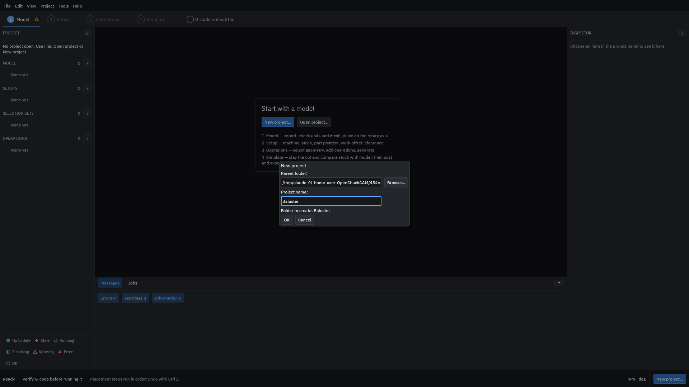
The program creates the folder and opens the empty project.
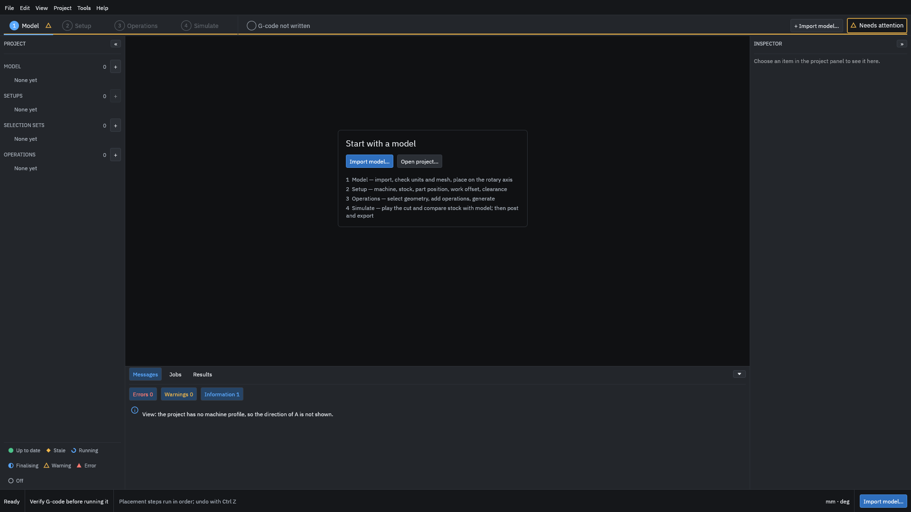
The row of four steps along the top is the order you work in. The marks beside each step show whether it is ready, and G-code not written says that nothing has been posted yet. At this point the program notes in Messages that the project has no machine; you add one in step 3.
The program does not save by itself: use File > Save (Ctrl+S) as you go. The window title says when there are changes you have not saved. Edits in a form are applied when you press Enter or leave the field.
2. Import the model
- Choose Import model….
- Type the path of
baluster.stl(or use Browse…). - Press Check and preview.
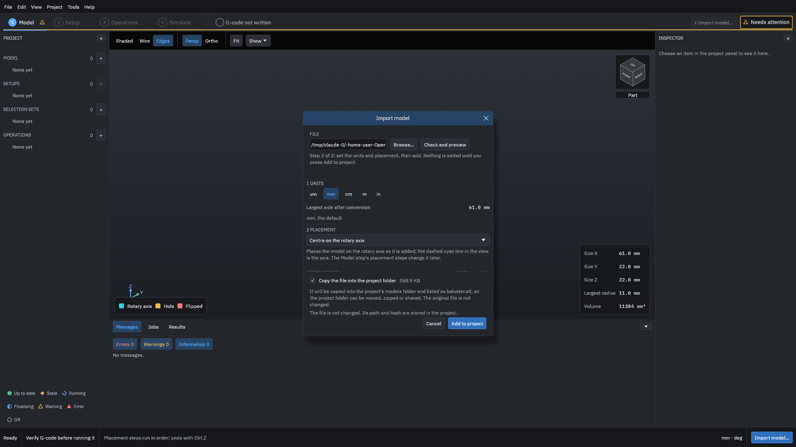
The dialog shows what the file holds before anything enters the project:
- Units
- An STL file does not say what its numbers mean, so the program reads them as millimetres unless you choose another unit. The piece is 61 mm long and 22 mm across.
- Placement
- Centre on the rotary axis puts the model’s centre line on the A axis. The piece was made along X, so it needs nothing else.
Scroll down in the dialog for the mesh check and the copy option.
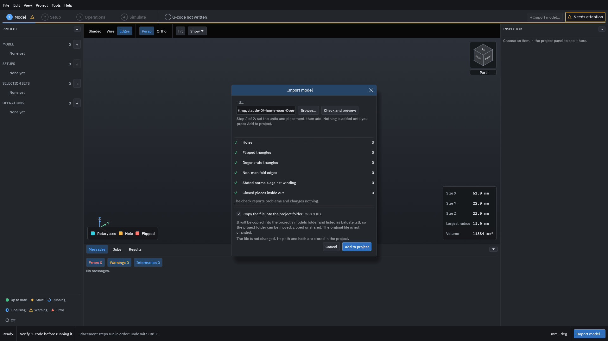
- Mesh check
- The program looks for holes, flipped faces and other faults in the mesh. This model has none. The check reports problems and changes nothing.
- Copy the file into the project folder
- Ticked by default. The program keeps its own copy of the model in the project’s
modelsfolder, so you can move, zip or share the project folder. The original file is not changed. Untick it to keep only a link to the original file.
Then:
- Press Add to project.
- Press Continue to setup at the bottom right.
3. Choose the machine
The Setup step describes the machine, the stock and how the work is held.
- Press Add setup.
- In the Inspector (the panel on the right), under Machine, choose Makera Z1 (built-in makera-z1) in the list of machine profiles.
- Press Use this machine.
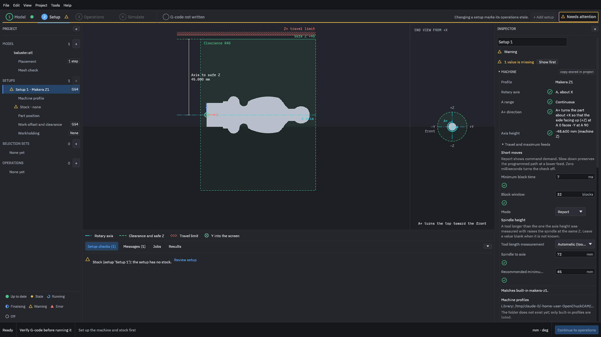
The view now shows the part on the A axis with the safe height (45 mm above the axis) and the travel limit; the end view shows which way positive A turns. The Inspector shows the machine profile’s rotary axis (A, about X), its range and direction, and its axis height. The profile is copied into the project, so a later change to the library does not change this project.
Warning
The ticks mean the values were confirmed on the project owner’s Z1, with its supplied chuck, not on your machine. They include the height of the axis above the bed and the travel, which the program uses to check that moves stay in range, so measure them on your machine and correct the profile before you trust a check that depends on them. A value you change is marked unconfirmed, and the status bar at the bottom right then names it, for example “Clearance unconfirmed”.
4. Set up the stock
On the Makera Z1, X 0 is the face of the headstock, where the chuck is mounted. The part must start beyond the chuck, so move it along X first, together with the work offset’s zero, before you choose the stock. This tutorial uses 18 mm.
Warning
The 18 mm in this example is the length of the project owner’s supplied chuck, with its jaws as they were used, not a value for your machine. Measure, on your machine, the distance from the face of the headstock body to the face of your chuck where the stock starts, with your jaws fitted and gripping as you will grip, and use that number for Offset along X and Zero at X. A value that is too small puts the stock, and the tool’s path, inside the chuck; the program does not check this. The program’s X0 is set on the machine with the controller’s work offset (G54), so set it there at the same place, and check the program before you cut.
- In the project tree on the left, choose Stock under Setup 1 (or scroll the Inspector to Stock).
- Under Part position, set Offset along X to 18 (millimetres) and press Enter. Position now reads X 18.000 to 79.000 mm.
- Under Work offset and clearance, set Zero at X to 18 and press Enter, so that the program’s zero is at the start of the part.
- Under Stock, choose the Cylinder shape. The program fills in a diameter and length that surround the part with a small allowance: a 24 mm diameter, 63 mm long bar starting at X 17, 1 mm before the part. Leave them.
- Under Material, pick Hardwood.
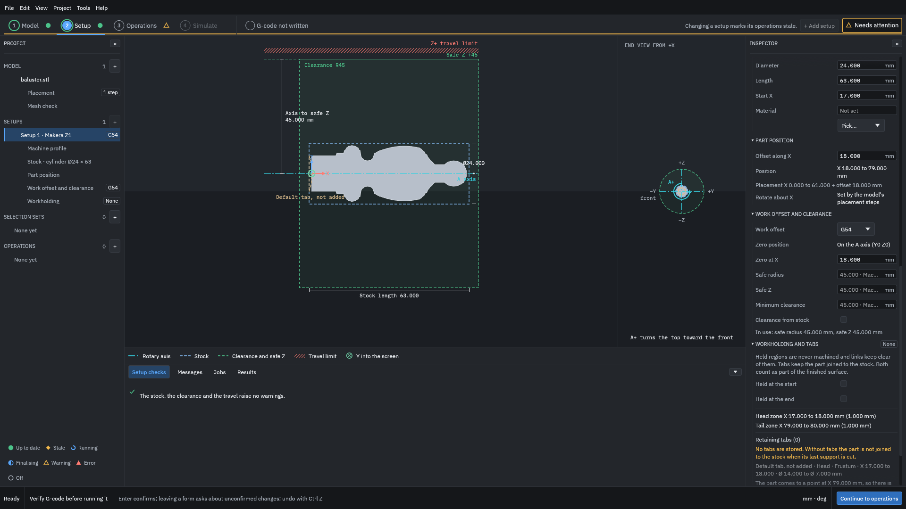
The stock appears as the dashed outline around the part. The program does not check that the stock is clear of the headstock and the chuck: with the part left at X 0, the stock would start inside the headstock. On your own parts, place the part so that the stock starts about the chuck’s length from X 0. The material choice matters because the tool library has cutting data for each material, which the operations use later. Stock and the held region says more about the stock.
5. Hold the work
- Under Workholding and tabs, tick Held at the start.
- Set Grip length to 8 (millimetres).
- Press Apply at the bottom of the section.
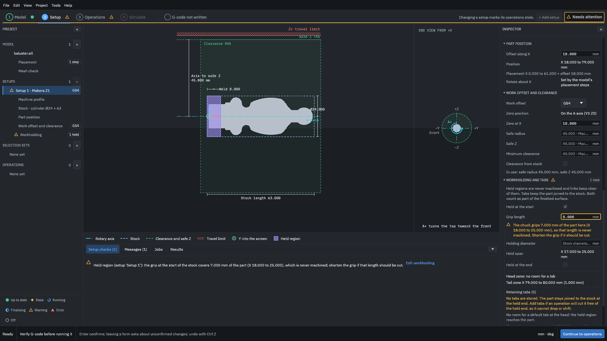
The first 8 mm of the stock, from X = 17 to X = 25, is now a held region: it is where the chuck grips. It is never cut and the paths keep clear of it. The program warns that the chuck grips 7 mm of the part (the plain end), which therefore stays as bar. That is what you want here; the warning would matter if you had held part of the shape you meant to cut.
This warning stays, and the finishing operation adds one of its own about the same uncut end when it is generated (step 8). So the project chip at the top right reads Needs attention from here to the end of the tutorial. On this part that is expected: read each warning, and check that what it describes is what you meant.
The program also says that no tabs are stored, and that the part stays joined to the stock at the held end. This piece stays joined to the held bar, so this tutorial uses no tab; add tabs if an operation in your own job will cut the part free of the held end. A tab is a small bridge left uncut so that a part stays attached until you separate it yourself.
If you also support the far end of the stock, tick Held at the end the same way. The program treats the tailstock end as a held length only, so keep your own track of clearances there.
Press Continue to operations.
6. Choose the tools
- Choose Tool library…. This lists the tools you can use: 54 ready-made Makera Z1 tools and some standard ones.
- Type
3.175in the search box to see the 3.175 mm tools. - Select Z1 O-flute 3.175x25.
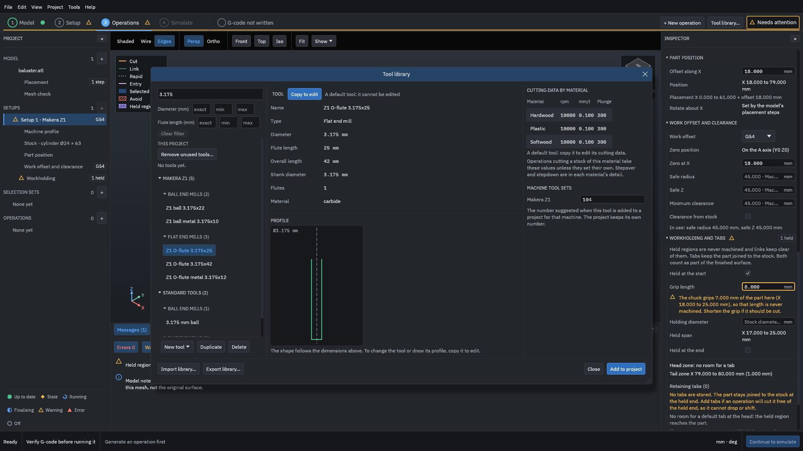
On the right is the tool’s cutting data by material: a spindle speed, a feed per tooth and a plunge feed for each. For Hardwood this tool has 10,000 rpm and 0.100 mm per tooth.
Warning
These are example numbers from the default library; they are not proven cutting data. A default tool cannot be edited, but you can copy it and change the copy.
Then add both tools to the project:
- Press Add to project.
- Select Z1 ball 3.175x22.
- Press Add to project again.
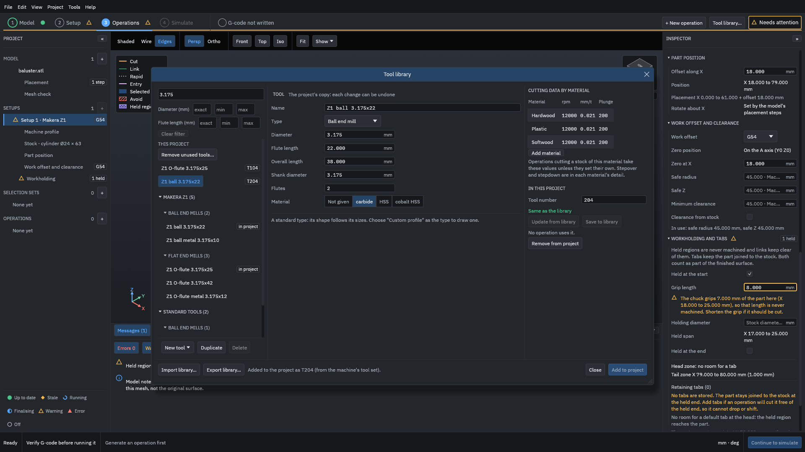
The project now holds two tools, numbered T104 and T204 (the numbers the Makera Z1 tool set suggests). Press Close.
7. Add the operations
An operation is one machining job with one tool. You will add two: a roughing operation that removes most of the material quickly, and a finishing operation that cuts the final surface. Roughing and finishing explains why there are two.
Choose + New operation. The list of strategies shows what the program can do:
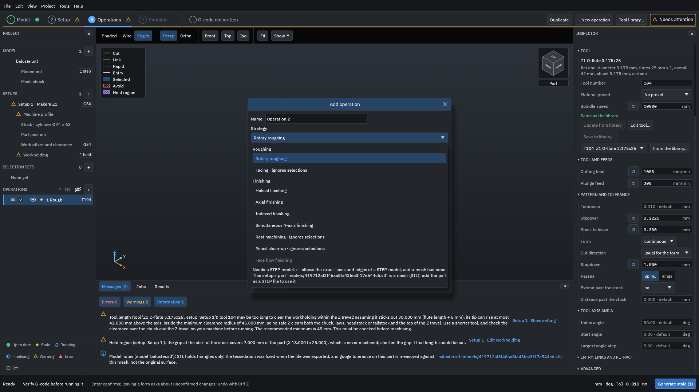
Each entry has a one-paragraph description. Face flow finishing is greyed because it needs a STEP model, and the list says so under it; Swarf, in the Specialist group further down, is greyed for the same reason.
Roughing
- Name the operation Rough and keep Rotary roughing as the strategy. The setup (Setup 1), the tool (Z1 O-flute 3.175x25) and the material preset (the setup’s Hardwood) are already right.
- Press Add.
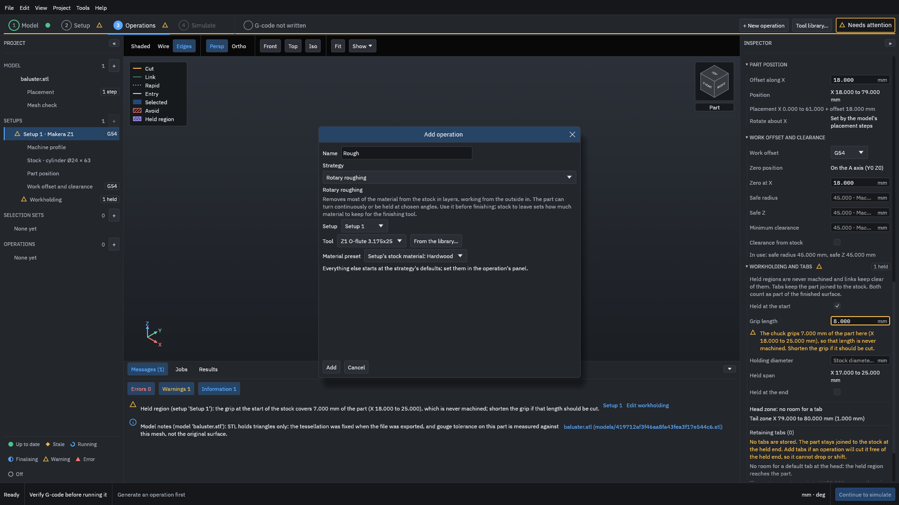
- In the Inspector, set Stepdown to 1 mm. This field starts empty: the program does not guess how deep a layer should be.
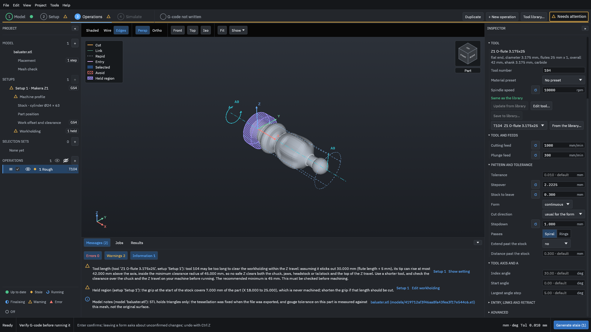
Messages, under the view, now warns that this tool “may be too long to clear the workholding within the Z travel”: the program assumes it sticks out 30 mm (its flutes plus 5 mm), so on the Z1 its tip rises at most 42 mm above the axis, inside the 45 mm the chuck and its jaws need; on your machine, set the setup’s Minimum clearance to suit your stock and jaws, or use a tool that sticks out less. This tutorial keeps the tool, and you acknowledge the warning when you export (step 10).
The rest comes from the tool and the strategy. Two to look at:
- Stepover 2.2225 mm is 70 % of the tool’s diameter, from the tool’s cutting data.
- Stock to leave 0.300 mm: roughing stops 0.3 mm short of the part so that the finishing tool has a little to cut.
The cutting feed shown is the programmed feed. The machine profile’s own feed limits can slow moves that turn A; after a run, the Inspector says how many moves were slowed, and the export dialog in step 10 reports the effective feed. Stepover, stepdown, scallop and stock to leave says more about these settings.
Finishing
- Choose + New operation again.
- Choose Helical finishing, name it Finish and pick the tool Z1 ball 3.175x22.
- Press Add.

Helical finishing follows the surface in a spiral around the part as the tool moves along it. Its stock to leave is 0, so it cuts to the model. The strategy’s description warns that “the tool may not reach tight inside corners”: a ball of this size cannot cut a sharper corner than its own radius.
Turn off adaptive spacing
New finishing operations have Adaptive spacing ticked. The program then measures the material left between neighbouring passes and adds passes where more than the Allowed excess (0.01 mm by default) would be left. On this piece, with this tool, it cannot confirm the excess at some places before it reaches its limits, so it keeps the path made so far, marks it as partial, and asks you to accept that before it writes any G-code. A partial path is not wrong, but it is not complete, so this tutorial keeps it simple:
- Scroll down the Inspector to Adaptive spacing, near the end of Pattern and tolerance.
- Untick Adaptive spacing.

Adaptive spacing is worth trying on your own parts; read its warning, if it gives one, before you use the program. Passes can be Spiral (one continuous helix, the choice here) or Rings (separate rings, one after the other).
8. Generate the toolpaths
- Press Generate stale (2) at the bottom right. “Stale” means the operation has no up-to-date toolpath.
- Wait until the status bar reads Ready again. 1 Rough shows a green dot in the project tree: it is up to date. 2 Finish shows a warning mark: it is up to date too, with a warning to read.
The status bar shows the progress. On this part it takes a few minutes on a computer with no graphics card, and less with one.

The orange lines are the roughing toolpath in the front view, with the held region hatched on the left. The eye icon beside an operation shows or hides its path in the view; hiding a path changes only the view, never what is machined. Use the view buttons (Front, Top, Iso, Fit) and the mouse to look around.
The Messages list under the view now holds three warnings: the tool-length warning from step 7, the setup’s grip warning from step 5, and the warning on 2 Finish. The last says that nothing within one tool radius of the held region is cut: the grip leaves the plain end, and the part of the surface beside it, uncut. That is what this tutorial means to do, so the project chip still reads Needs attention. Click a message to see the operation it is about.
Press Continue to simulate.
9. Simulate and read the results
The Simulate step plays the whole program back as a cut and compares the result with the model. The program first prepares the cut part, which takes a little longer than generating. Simulation and deviation colours says more about the simulation.
- Wait until the program has prepared the cut part of the whole program; the playback controls under the view are then active.
- Use the playback controls under the view. The buttons go to the start, step back one move (Left), play or pause (Space), step on one move (Right), and go to the next operation (Shift+Right). Speed sets how fast it plays.
- Go to the next operation to see the stock after roughing.
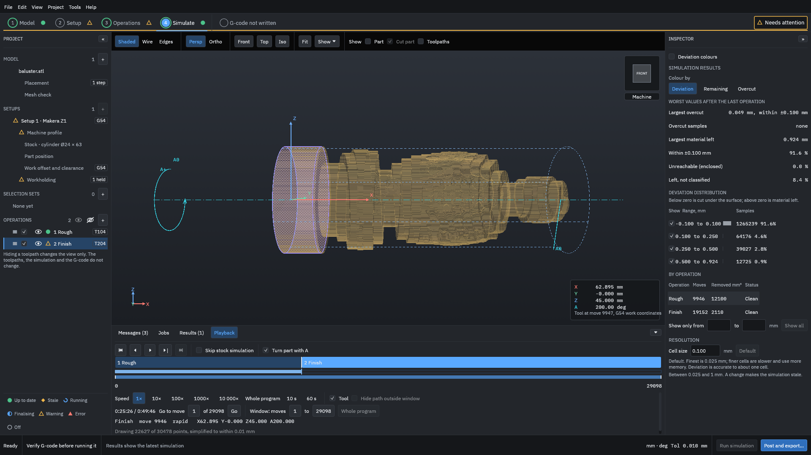
- Set Speed to 10 000× and press play, or drag the position bar to the end.
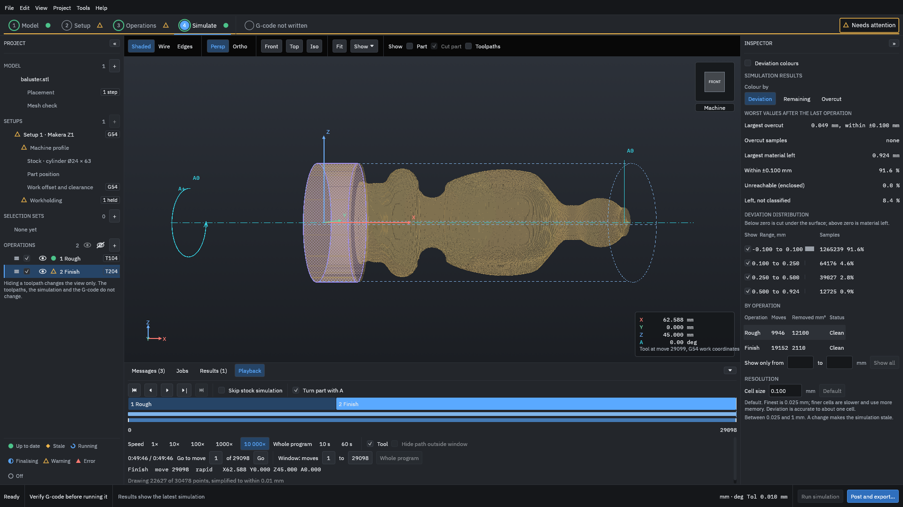
The results on the right say how closely the cut matches the model:
- Largest overcut (0.049 mm, within ±0.100 mm) is the most the tool cut below the model’s surface. Largest material left (0.924 mm for this run) is the most material that stands above it, and Within ±0.100 mm (91.6 % of the sampled points) is the share that is on the surface to within 0.1 mm.
- The deviation distribution counts samples in each band of material left; below zero would mean cut under the surface.
- By operation: how many moves each makes and the volume it removes.
- Cell size 0.100 mm is the simulation’s resolution. The stepped surface in the view is that cell size; it is not the finish the machine would leave. A finer cell is more accurate and slower.
Tick Deviation colours at the top of the Inspector to see where the material left is. Grey is on the surface, the blues show material left (darker for more, the darkest for more than 1 mm), and red would be cut below the surface.
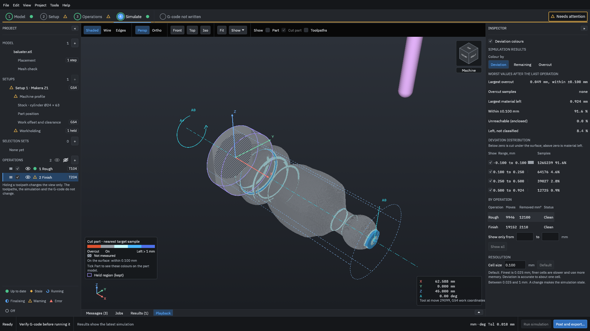
The most material left in this run, 0.924 mm, is at the inside corner where the plain end meets the shoulder. A ball tool has a round end of 1.6 mm radius, so it cannot cut a sharper corner than that, as the strategy’s description warns. A smaller tool in a later operation, such as Rest machining or Pencil clean-up, reaches into corners like these. Check the corners of your own parts the same way.
Warning
Treat the simulation as a check on the toolpaths, not a guarantee. It does not model the chuck, the holder or the machine, and it cannot show whether your tool, speed and feed will cut well.
The Playback panel also shows the programmed time: about 49 minutes 46 seconds here. This is the sum of the moves at their programmed feeds. It is not an estimate of the machine’s time.
When you are satisfied, press Post and export… at the bottom right.
10. Post and export the G-code and the setup sheet
- On the Simulate step, press Post and export… (bottom right), or choose File > Post and export…. The dialog opens.
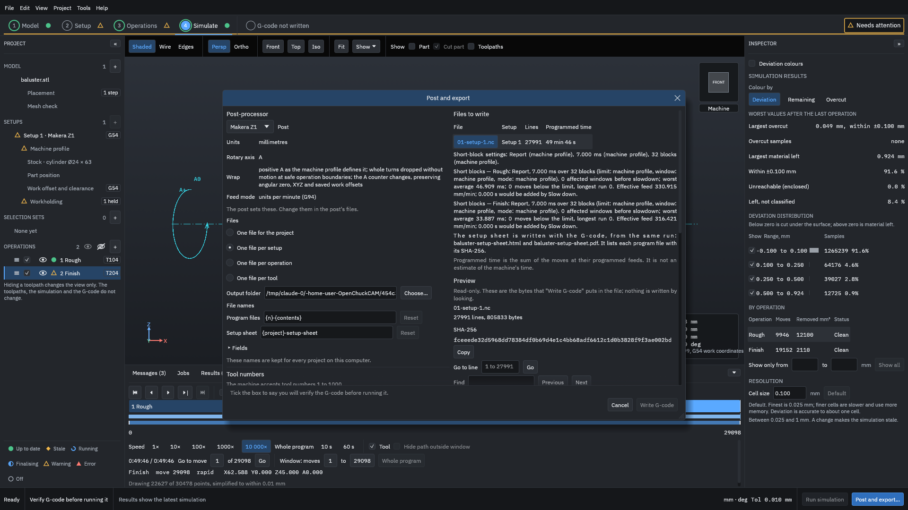
The dialog shows:
- Post-processor
- Makera Z1 writes G-code for that machine (units in millimetres, A as the rotary axis, feed in units per minute). A LinuxCNC post is also available; it is used to check the output in a simulator.
- Files
- One file for the project, per setup, per operation or per tool. Keep One file per setup here.
- Output folder
- Where the files go. Type a folder.
- File names
- The names are made from templates (
{n}-{contents}gives01-setup-1.nc). The defaults are fine. - Files to write
- The list shows the file’s lines (here 27,991) and programmed time. Below it, a read-only Preview shows the program as it will be written, with its size, its SHA-256 hash, and Go to line and Find to read it.
- Scroll down to Checks before writing.
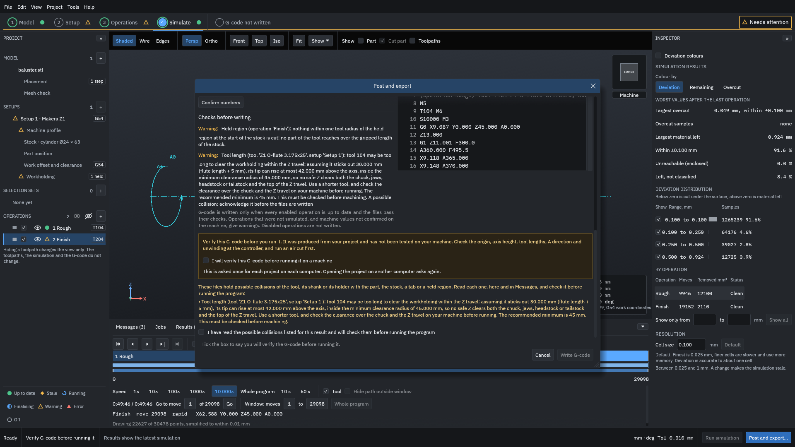
- Read the two warnings, the held region of Finish (as in step 8) and the length of tool 104 (as in step 7), and the notice “Verify this G-code before you run it.” If an operation had a partial path, the dialog would ask you to accept it here as well; this tutorial has none.
- Tick I will verify this G-code before running it on a machine (the program asks this once per project on each computer).
- The tool-length warning is a possible collision, so it is listed again at the end. Tick I have read the possible collisions listed for this result and will check them before running the program. Check the tool’s clearance over the chuck and the Z travel on your machine before you run the program.
- Press Write G-code.
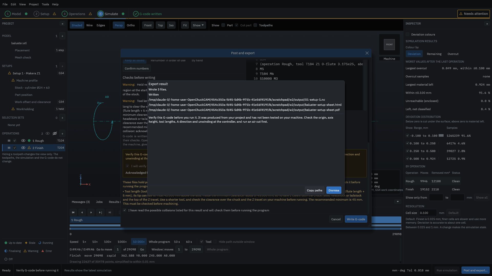
Three files are written to the output folder:
01-setup-1.nc: the G-code (about 800 KB for this job).baluster-setup-sheet.htmlandbaluster-setup-sheet.pdf: the setup sheet. It lists the project, machine, stock, held length, tools, operations with their speeds and times, each program file with its SHA-256 hash, and the notice to verify. Compare the hash of a file on the machine with the sheet to be sure it is the file the sheet describes.
Dismiss the result and save the project with File > Save.
Before you run anything: verify the G-code
This is the part that matters most. The example job is not a tested machining recipe. The tools, speeds, feeds, stock and the hold in this tutorial have never been cut on a machine. Even for your own jobs, the program cannot know your machine, your fixture or your tool.
Before any program runs on a machine:
- Read the program from the first line to the last, or at least up to the first cut and the end. The header names the project, the setup and the software version. Check the units, the tool numbers and the safe Z.
- Check the machine values. The axis height, travel and clearance in the profile must be what you measured on your machine, not the built-in assumptions. Set the work offset (G54) on the A axis centre line, at the X your setup says.
- Check the direction of A and what the controller does at the unwinding between operations.
- Run an air cut first: no tool and no material, at reduced feed, attended, with a hand on the stop, watching the first moves. Stop at anything unexpected.
- Only then consider cutting, with a tool and material you have chosen for your machine, attended, starting with a trial in cheap material.
For the Makera Z1 the project keeps a safe-practice checklist and an air-cut procedure. They are the project’s own starting points, written for its owner’s machine. Checking G-code before you run it says more.
Warning
The generated G-code is yours to verify. OpenChuckCAM does not guarantee that a program is safe or correct for any machine, tool or setup.
What next
- Open the finished project (File > Open project) in
testdata/examples/baluster/baluster-projectand change something: try Indexed finishing, Rings instead of Spiral, or a smaller stepover, and see the result in the simulation. - Read the known limitations before relying on any strategy.
- If something is wrong or unclear, please open an issue.
How 4-axis rotary machining works
A CNC milling machine moves a spinning cutter along straight axes: X (left and right), Y (front and back) and Z (up and down). A 4-axis rotary machine adds a fourth axis that turns the work. This page explains what that changes, and the words OpenChuckCAM uses for it.
The rotary axis
On a rotary machine the work is held at one end in a chuck, a clamp with jaws that closes around the stock, and the chuck can turn. The line it turns about is the rotary axis. Turning it is a move of the fourth axis, called A when it turns about X.
On the Makera Z1 the rotary axis lies along X. The cutter moves along the length of the work (X), across it (Y) and towards or away from it (Z), while A turns the work. Because the work turns, the cutter can reach all the way round it from above. That is what makes round and carved pieces possible: legs, finials, handles, blades and bladed disks.
Which way A turns
Every rotary machine has a positive direction for A, and a program cut with the wrong direction carves a mirror image. The machine profile records it. On the Makera Z1, a positive A move turns the top of the chuck towards the front of the machine. Check it on your own machine during the air cut.
Moving the axes together
The program can move the axes in two ways:
- Indexed: A turns to an angle and stops, then the cutter works on that side with X, Y and Z alone, like a 3-axis machine looking at one face.
- Simultaneous: A turns while the cutter moves, so the cutter follows the surface as the work goes round. This is true 4-axis machining, and it is what OpenChuckCAM is built for.
Different strategies use one or the other; Helical, axial, indexed and simultaneous finishing compares them.
What the program works out
From your model, the stock, the machine and the tools, OpenChuckCAM works out the toolpath: every position of the cutter and every angle of A. A post-processor then writes the toolpath as G-code, the text program your machine’s controller reads. You check that program before you run it: see Checking G-code before you run it.
Stock and the held region
Stock
The stock is the material you start with: on a rotary machine, usually a round bar or a square block. The program cuts the part out of the stock, so it needs to know the stock’s shape, size and position along the axis. With that it knows where material is, where the cutter can move fast through air, and how much each pass removes.
In the program’s Setup step you choose the stock’s shape:
| Shape | Use it for |
|---|---|
| Cylinder | A round bar. You give its diameter and length. |
| Box | A square or rectangular block. |
| Bounding box | A box that just surrounds the part, with an allowance you set. |
The program can fill in a size that surrounds the part with a small allowance. Measure your real stock and enter its true size: if the real stock is larger than the project’s, the first passes cut more than the program planned.
You also choose the stock’s material. The tool library holds cutting data for each material, which the operations use for their speeds and feeds.
The held region
The chuck grips a length at one end of the stock. That length must never be cut, and no toolpath may go there. In OpenChuckCAM it is the held region: you tick Held at the start and set the Grip length, the length the jaws cover.
If you also support the far end, for example with a tailstock, tick Held at the end in the same way.
Warning
A held region is a length along the axis, not a solid body. OpenChuckCAM does not model the chuck, its jaws or a tailstock, and does not check them against the tool or the holder. Check these clearances yourself, on the machine, before you run a program.
When the part comes free
When the last material joining the part to the held stock is cut, the part comes free and can fall or be caught by the cutter. If your job cuts the part free, leave tabs: small bridges of material, cut through by hand afterwards. Many turned parts never come free, because one end stays joined to the held bar; the program warns you when it cannot tell.
Roughing and finishing
Most jobs are cut in two stages, with different tools and different aims.
Roughing
Roughing removes most of the material quickly. It uses a larger, stronger tool and cuts in layers: each layer goes one stepdown deeper into the stock. Roughing leaves a little material on the part on purpose, the stock to leave, so the cutter never touches the final surface while it is cutting hard.
OpenChuckCAM’s rotary roughing turns the work as it cuts each layer, so the layers wrap round the part instead of being flat.
Finishing
Finishing cuts the final surface. It uses a smaller tool, often with a round end (a ball end mill), and follows the surface of the model closely, taking off only what roughing left. The distance between neighbouring passes, the stepover, decides how smooth the surface is and how long the cut takes.
OpenChuckCAM has several finishing strategies, which move the cutter round the part in different patterns: see Helical, axial, indexed and simultaneous finishing.
Cleaning up
Some places are too tight for the finishing tool, such as inside corners. Two kinds of operation deal with them:
- Rest machining cuts only where an earlier, larger tool could not reach, with a smaller tool.
- Pencil clean-up runs a small tool along each crease, where two surfaces meet.
Operations and their order
Each stage is an operation in the program: one tool, one strategy and its settings. Operations run in the order they are listed. The simulation cuts them in that order too, so you can see what each one leaves for the next.
| Stage | Typical tool | Leaves |
|---|---|---|
| Roughing | A larger flat or bull-nose end mill | The stock to leave, as steps |
| Finishing | A smaller ball end mill | The final surface, with small ridges between passes |
| Rest or pencil | A smaller tool still | Corners and creases the others missed |
Stepover, stepdown, scallop and stock to leave
Four settings decide how much each pass cuts and how close the result comes to the model. They appear in almost every operation.
- Stepover
- How far the cutter moves sideways between neighbouring passes. A smaller stepover takes more passes, takes longer, and leaves a smoother surface.
- Stepdown
- How deep each roughing layer goes. A larger stepdown removes material faster and loads the tool more. It must stay within what the tool can cut: its flute length, its strength and the material.
- Scallop
- The small ridge a round-ended cutter leaves between two neighbouring passes. Its height depends on the tool’s radius and the stepover. Some finishing operations let you set the scallop height you will accept and work out the stepover from it.
- Stock to leave
- Material an operation leaves on the part on purpose, so that a later operation can finish it. Roughing leaves some; finishing leaves none.
How they work together
- Halving the stepover roughly doubles the number of finishing passes and the time, and makes the scallops much smaller.
- A larger ball (a larger tool radius) leaves smaller scallops at the same stepover, but cannot reach into tight curves.
- Roughing with stock to leave of a few tenths of a millimetre gives the finishing tool an even, light cut.
The program’s default tolerance, how far a toolpath may stray from the model, is 0.01 mm. You can change it in each operation.
Helical, axial, indexed and simultaneous finishing
A finishing strategy decides how the cutter travels over the part while it cuts the final surface. On a rotary machine the cutter can follow the part in a spiral, along it, from a few fixed angles, or while the part turns to face it. Each leaves different marks and suits different shapes. Roughing and finishing and How 4-axis rotary machining works cover the ideas this page builds on; Operations and strategies lists every setting.
Helical: a spiral round the part
The part turns continuously while the cutter moves slowly along it, so the tool traces a spiral, like the thread of a screw. Each turn of the spiral is one stepover further along.
- Good for
- Round, turned shapes such as the tutorial’s baluster: one continuous cut with few retracts, and even marks all round.
- Watch for
- Faces across the axis, such as a shoulder: the spiral cannot cut them by itself. Helical finishing adds a turn at such faces, and Face free ends steps down beside an end of the part with nothing beyond it. Selections and gaps in the part split the spiral into separate cuts.
Rings instead of Spiral cuts one full turn at a time at a fixed place along the part, then steps along. The marks are then rings rather than a spiral.
Axial: passes along the part
The cutter moves along the length of the part in a straight pass, the part turns a small step, and the cutter goes back along the next pass. Each step of A is the stepover at the surface.
- Good for
- Parts whose marks should run along their length, such as flutes, and shapes that change a lot along X.
- Watch for
- The ends of each pass: the cutter turns round there, so there are more links than with a helix. Direction
zigzagcuts in both directions and is quicker;climbcuts every pass the same way.
Indexed: from a few fixed angles
The part is turned to an angle and held still, and the cutter follows the surface along the part from that side, as a 3-axis machine would. Then the part turns to the next angle. This is sometimes called 3+1 machining.
- Good for
- Flat faces, pockets and features seen from a few directions, such as the four sides of a square section.
- Watch for
- Surfaces between the angles: a surface the tool cannot see from any of the angles is not cut. Use enough angles, or a helical or simultaneous operation for the round parts.
Simultaneous 4-axis: the part turns while the tool cuts
The part turns while the cutter moves, so the tool meets each point of the surface close to straight on, along the surface normal. This is true 4-axis machining.
- Good for
- Curved shapes where the cutting angle has to change along a pass, undercuts and the walls of slots that a straight approach cannot see, and sections that are off the rotary axis, such as the pin of a crank, which it drives round their own centre.
- Watch for
- Four axes cannot follow every surface direction: the slope of a surface along the axis cannot be matched by turning A. Where the program cannot follow the part, it says so and leaves that area uncut instead of cutting it badly; the warning lists the areas. Check the path and the simulation.
Choosing
| If the part is | Start with |
|---|---|
| Round and turned, like a spindle or a baluster | Helical |
| Long, with features along it, such as flutes | Axial |
| Square or flat-sided, seen from a few directions | Indexed |
| Curved in ways the others cannot follow, or with off-axis sections | Simultaneous 4-axis |
Many parts use more than one: for example helical finishing for the round body and indexed finishing for a flat. After finishing, rest machining and pencil clean-up take out what a larger tool could not reach.
Whatever you choose, run the simulation and look at the deviation colours before you post the program, and check the program before you run it on a machine.
Tabs
When a rotary job cuts the whole length of a part, the part can come free of the stock before the job ends, and a loose part turning in the machine can be thrown. A tab is a short piece of material left between the part and the stock, so the part stays joined until you cut it away by hand, after the job. Stock and the held region explains the held region at the chuck, which the tabs sit beside.
Warning
A tab that is too thin, or a part that is not held at both ends, can let the part break free while the stock turns. Check every tab against your material and your cutting forces. The program checks the tabs’ positions and lengths, not whether they are strong enough.
Where tabs go
Tabs lie in the head zone or the tail zone: the gap between the part and the held region (or the end of the stock) at each end of the part. The Workholding section of the setup shows each zone, for example “Head zone X 12.990 to 17.990 mm”, or says when there is no room for a tab. A tab that is not wholly in a zone is an error, and operations that can reach it cannot be generated.
Every operation leaves the tabs uncut, and the simulation keeps them, so they show as part of the finished surface.
The shape of a tab
A tab is a Cylinder or a Frustum (a cone with a flat end), set by:
- Start X and Length
- Where it starts along the rotary axis and how long it is.
- Diameter
- Its diameter; a frustum has a Diameter at start X and a Diameter at end X.
- Placement
- On the axis, one tab on the rotary axis; or Around the axis, several tabs evenly spaced round it, set by Count, Start angle and Offset from axis.
A tab must be at least as long along X as the tools that cut beside it are wide; otherwise the tool cannot cut the gap beside it to shape. The program warns when a tab is shorter, with “Tab length (operation …, tool …): …”, but makes the path. The tool may cut through such a tab and let the part come loose, so this is a possible collision: the export asks you to acknowledge it before it writes the G-code.
Adding tabs
In the setup’s Workholding section:
- Add default tabs adds one tab at the head and one at the tail: frustums with the small end on the part, sized from the part.
- Head tab or Tail tab adds a tab that fills the gap at that end of the part, a cylinder a quarter of the stock’s diameter across. With Place automatically it follows the part, the stock and the held regions when they change. Where the part narrows to a small end, check the tab is not wider than the part there.
- Add tab adds one you place by hand.
Edits are a draft until you press Apply, which checks them against the part and the tools and stores them in the setup; Revert drops them. While a draft is not applied, Messages warns that the toolpaths, the simulation and the G-code still use the stored tabs. Check against the part and tools runs the same check without storing anything.
Apply refuses only a tab outside the zones: it stores nothing and marks the row with the reason. It stores, with a warning kept on the tab’s row, a tab shorter than the tools are wide, an automatic tab that has no room at its end of the part (it keeps its last position), and an automatic tab that overlaps one placed by hand. Read those warnings: the part is still held, but you may want to move the part, shorten the held region or remove a tab.
After the job
The tabs are still there when the program ends: cut through them with a saw or a knife, and finish the marks by hand. Plan for that when you choose their size and place.
Simulation and deviation colours
The simulation cuts a model of your stock with every operation of the setup, in order, and then compares what is left with the part. It shows what the program will remove before anything is cut, and where it leaves too much material or cuts too deep. It is a check on the toolpaths, not a test of the program on your machine: generated G-code must still be verified by you before it is run on a machine.
How the stock is modelled
The stock is modelled as a dense grid of thin columns, like a bed of nails, each column cut short where the tool passes. The width of a column is the Cell size, a setting of the project, 0.1 mm unless you change it. It can be from 0.025 mm to 1 mm.
The cell size sets how fine the simulation is. The deviation it reports is accurate to about one cell. A smaller cell takes much longer and uses much more memory: half the cell takes about eight times the time and four times the memory. Change it on the Simulate step, under RESOLUTION; the line under it says how much time and memory the new value costs.
Later operations in a setup are generated against the stock the earlier ones left: rest machining finds its material this way, and the flute-length check measures it. So the cell size also changes the toolpaths of those operations, and changing it makes the simulation and those operations out of date.
Skip stock simulation, in the Playback tab, makes only the toolpaths, which is quicker. There is then no cut part, no deviation and no check of the stock before posting, and the export asks you to confirm that you know.
Deviation colours
On the Simulate step, tick Deviation colours in the Inspector. The cut part is then coloured by how far each point is from the part’s surface:
| Colour | Means |
|---|---|
| Red-orange | Overcut: cut deeper than the part’s surface, by more than the simulation’s own error |
| Grey | On the surface, within the tolerance shown under the scale |
| Ice blue | Up to 0.25 mm left |
| Sky blue | 0.25 to 1 mm left |
| Strong blue | More than 1 mm left |
| Violet, cross-hatched | Unreachable (enclosed): material no tool on this machine can reach |
| Dark slate, hatched | Not measured |
The scale on the view shows the bands from Overcut through On to Left > 1 mm. Colour by chooses Deviation (both), Remaining (only material left) or Overcut (only overcut). Hold the mouse still over the part to read the value at that point.
The colours are drawn on the cut part from the nearest point the comparison measured. Tick Part in the view’s Show to see them on the part’s own model, which is finer.
The results
Under SIMULATION RESULTS, for each setup:
- Largest overcut
- The deepest cut into the part. “within ±0.1 mm” means it is inside the tolerance and is not counted as an overcut.
- Overcut samples
- How many measured points are overcut, and in how many places.
- Largest material left
- The most material standing above the part’s surface.
- Within ±… mm
- The share of the surface within the tolerance.
- Unreachable (enclosed)
- The share of the surface no tool can reach, because the part closes it off across the rotary axis, such as a bore along the axis. Remove it another way, for example by drilling.
- Left, not classified
- Material left that is not shown to be unreachable.
DEVIATION DISTRIBUTION splits the surface into bands, with how many points fall in each; untick a band to hide it on the part, or type a range in Show only from and to. BY OPERATION lists each operation’s moves and the volume it removed, and says Clean, or how many rapid moves cut material: a rapid move that cuts is a fault in the toolpath.
Reading the result
- Grey where the part is finished, and blue where a later operation will cut, is what you want to see.
- Red is an overcut: find it, and change the operation, the tool or the tolerance. The simulation measures to about one cell, so a value around the cell size is at the limit of what it can tell.
- Blue that no later operation removes is material left on the finished part. Inside corners sharper than the tool’s radius always keep some.
- A rapid cut is a fault: do not post the program until it is gone. It is a possible collision, so the export also asks you to acknowledge it before it writes anything.
The simulation does not model the chuck, a tailstock, the tool holder or the machine, and it does not check them against the part. See Known limitations.
Playing the cut
The Playback tab plays the program: step through it move by move or operation by operation, play it at up to 10 000 times its speed, or set it to play the whole program in 10 s or 60 s. Go to move jumps to a move. Turn part with A turns the part, as the machine does, instead of the tool. Drag under the timeline to set a window of moves to play and show.
The time shown is the programmed time, the moves at their programmed feeds; it is not an estimate of how long the machine takes.
Import a STEP file
A STEP file (.step or .stp) holds a model’s exact faces and edges, not just triangles. Swarf, face flow finishing and radial drilling need it, and edge following and pencil clean-up use its exact edges. Other strategies cut a mesh made from it, 0.01 mm and 0.1 radians from the exact surface.
Import it
- Open a project, then choose File > Import model… (Ctrl+I).
- Type the file’s path, or click Browse…, and click Check and preview. Nothing is added to the project yet.
- Under 1 UNITS, check the unit. A STEP file states its own length unit, which the program uses; choose another only if the file is wrong.
- Under 2 PLACEMENT, choose how to place the model on the rotary axis: Keep as in the file, Centre on the rotary axis, or turn one of the file’s axes onto the rotary axis. The Model step’s placement steps can change it later.
- Read 3 MESH CHECK and the notes under it.
- Leave Copy the file into the project folder ticked, so the project keeps its own copy and can be moved or shared. Untick it to link the file where it is instead; the project then breaks if the file moves.
- Click Add to project.
The notes include one that says which strategies use the exact faces and which use the mesh. Each operation’s notes say the same for that operation.
If it does not import
The STEP reader is a separate program, openchuck-step-worker, which ships beside the others. The import stops with a message in red when:
- “STEP import failed: this build cannot read STEP files: the STEP reader program ‘openchuck-step-worker’ was not found next to the application …”
- The reader is missing. Keep
openchuck-step-workerin the same folder asopenchuck-ui; on macOS, use the copy insideOpenChuckCAM.app. If you built the program from source, build the reader too (see Install and first run). - “not a valid STEP file: …”
- The file is damaged, or holds no faces. Export it again from your CAD program as a solid.
- “the STEP reader did not finish within 120 s and was stopped”
- The file is very large or very complex. Simplify it, or export only the part you need.
- “the STEP reader stopped without an answer …”
- The reader stopped on the file. The program itself carries on. Export the file again from your CAD program and try once more.
STEP files written by CAD programs other than OpenCASCADE have had little testing. Check the imported model against your design before you go on.
Limit an operation to a region
An operation cuts the whole part unless you tell it otherwise. To limit it to one area, make a selection set of that area and put it in the operation’s Contain within role: the tool then cuts only inside the window of X and angle the set spans.
Make a selection set
- In the project panel, click + on the SELECTION SETS heading (or choose Tools > Select on the part…). The Operations step opens with the New selection inspector.
- Choose a picking tool in the box on the view (or press the key): Select one (Q), Flood fill (W), By angle (E) or Same direction (R). A mesh is picked by triangle or edge, a STEP model by face or edge.
- Click the part. Shift-click adds to the selection, Ctrl-click takes away. Esc stops picking.
- Type a name, and click Save as new set.
Use it in an operation
- Select the operation.
- In its Geometry section, in the Contain within row, choose the set from add….
- Generate the operation again.
To take a set out, click it in the row. Editing a set makes every operation that uses it out of date.
The other roles do different things: Cut on cuts only those surfaces, Avoid never cuts them but lets the tool pass over, and Check keeps the tool off them. Operations and strategies describes them and their Cut short, Warn only and Ignore choices. Facing, rest machining, pencil clean-up, edge following and radial drilling work on the whole part and are not limited by Contain within.
Check the result in the simulation: the window a set spans is a box of X and angle, so it can include more of the part than the faces you picked.
The worked example Limit an operation to a region goes through one case step by step on the tutorial’s baluster, with Cut on and Avoid.
Add a tool to the library
Every operation needs a tool from the project’s tools, which come from your tool library. The library already holds the ready-made tools; this page adds one of your own and puts it in a project.
Make a new tool
- Choose Tools > Tool library… (or Tool library… on the Operations step).
- Under the list, open New tool and choose the type, for example Ball end mill.
- Fill in Name, the sizes (Diameter, Flute length, Overall length, Shank diameter, Flutes) and Material. Measure the tool rather than trusting a catalogue: the flute length decides how deep a layer can be.
- In the right column, under Cutting data by material, click Add material, type the stock material (for example
Hardwood, as the setup names it), fill in the spindle speed, feed per tooth, plunge feed, stepover and stepdown, and click Apply. - Click Save.
To start from a similar tool, select it and click Duplicate. A ready-made tool cannot be edited until you copy it.
The cutting data you enter is yours to check against the tool maker’s figures, your material and your machine.
Put it in the project
- With a project open, select the tool in the library list and click Add to project. The status line says which number it got, for example “Added to the project as T204 (from the machine’s tool set)”.
- Or, from an operation: in the operation’s Tool section click From the library…, choose the tool, and click Use for the operation.
The project keeps its own copy of the tool. If you change the tool in the library later, Update from library in the operation’s tool section brings the change into the project.
Confirm machine profile values
The values in the built-in Makera Z1 profile were confirmed on the project owner’s machine, not on yours, and every value you change in a profile of your own starts unconfirmed. The program marks each unconfirmed value, shows it in the status bar (“Clearance unconfirmed” for one value, “2 machine values unconfirmed” for two), and lists them as a warning when you export. Measure each value on your machine before you rely on it, confirmed or not.
Warning
Measure with the machine at a safe state: spindle stopped, no tool where it can hit the chuck, and your hand on the emergency stop when anything moves. A wrong axis height, travel or safe Z makes every program the program writes wrong in the same way, and its checks cannot see it.
See which values are unconfirmed
Click the unconfirmed values in the status bar, or open the setup’s machine section on the Setup step. The status bar shows them only when the project’s profile has one; with the built-in Makera Z1 unchanged it shows none. An unconfirmed value has an amber triangle; hold the mouse over it to read where the value came from and how to confirm it.
How to check each value
These are the program’s own instructions, from the triangle’s tooltip:
| Value | How to confirm it |
|---|---|
| Axis height | Run the controller’s 4th-axis Z probing routine and read G54 Z in machine coordinates (G53). The value holds for the tool fitted then, the reference tool: a longer tool raises the spindle by the difference. |
| A+ direction | Send a small A+ move with a mark on the chuck and see which way its top turns. |
| A range | Turn A past a full turn each way and see whether the controller stops it. |
| Travel | Jog each axis to its limits and read the machine coordinates (G53). |
| Maximum feeds | Take them from the controller’s settings or the machine’s documented limits. A setting can be capped by the firmware: on a Makera Z1, send M203.1 in the console, which prints each axis’s limit as the controller holds it (A in degrees per second, so A: 30 is 1800 degrees/min). |
| Spindle speed range | Check the spindle’s lowest and highest speed in the machine’s documents or controller settings. |
| Clearance | Set a clearance on the setup to suit its stock. |
| Minimum clearance radius | Measure the largest radius about the rotary axis of the chuck body, the jaws at the opening you use, the headstock and the tailstock, and add a margin. |
| Spindle to axis | With the spindle at home, measure from the collet nose down to the chuck centre; or add the probe’s stick-out to the distance from home down to the axis measured with the probe. |
| Recommended minimum safe Z | Check that the safe Z clears the chuck, the jaws and the part on your machine. |
| Tool length measurement | Check in the controller’s documents whether it measures each tool on a tool setter and offsets it. |
| Minimum block time | Run the block-rate air cut and record the shortest smooth setting, the firmware and how the program is sent. |
| Block window | Take the planner queue depth from the controller’s documents; 1 checks each block. |
Short moves, the mode, is a choice of how the program writes, not a machine value, so it cannot be confirmed.
Record what you found
- Open the machine library with Manage machines… (or Tools > Machine library…). The built-in profile cannot be changed: work on the project’s copy, or click Copy to edit to make your own profile (see Machine profiles).
- Type the value you measured, if it differs, and press Enter.
- Click Mark confirmed… next to it, say how you confirmed it, for example “Measured with the probe on the chuck face, 7 Nov 2026”, and click Mark confirmed.
- Save the profile, and choose it for the project with Use this machine.
Changing a value later marks it unconfirmed again.
On the Makera Z1
The project’s own air cut on the Makera Z1 measures the axis height and checks the travel before the first run, and the safe-practice checklist covers the rest. Do the air cut after you confirm the values, and again whenever you change one.
Machine setup: short moves
Some controllers cannot read G-code lines as fast as a program supplies them. A program with many very short moves, which a rotary program often has, can then run slower than its programmed feed, or run unevenly. The program’s short move settings let it estimate that demand when it writes G-code, and optionally lower the feed where the demand is too high.
These settings are part of the machine profile. They are a way to find out whether a program is likely to hit this limit. They do not make a program safe or correct, and they do not replace checking it: generated G-code must be verified by you before it is run on a machine, and OpenChuckCAM does not guarantee that a program is safe or correct for any machine, tool or setup. See Checking G-code before you run it.
The three settings
- Minimum block time
-
The shortest average time per block your controller handles smoothly, in milliseconds (ms). A block is one line of G-code that makes one move. The Makera Z1 profile starts at 7 ms.
- Block window
-
How many blocks in a row the program averages when it compares them with the minimum block time. The Z1 profile starts at 32. It is a whole number from 1 to 4096. Set it from the depth of your controller’s queue of waiting moves.
- Mode
-
What the program does when the average falls below the minimum:
- Off: no analysis. A minimum block time of 0 also turns the analysis off.
- Report: the G-code does not change. The program estimates the demand and the time a slowdown would cost, and shows it.
- Slow down: the program lowers the feed of the affected moves so each window meets the minimum. Coordinates and geometry stay the same. A larger target costs time and cutting feed, and gives the controller more margin; it does not change the geometric tolerance.
There is no mode that merges short moves into longer ones. It is left out because merging would use up some of the geometric accuracy the toolpath is allowed.
Where to set them
In the Inspector on the Setup step, open the machine section and look under Short moves: Minimum block time, Block window and Mode. The values apply to the copy of the machine profile in this project.
The values are stored in the project’s machine.toml as min_block_ms, block_window and short_block_mode.
A post-processor definition can override any of the three fields on its own, under [options] in its post.toml, using the same names. A field the post leaves out keeps the project’s machine value. See Writing a post.
The Post and export dialog and the setup sheet show the settings that were used and where each came from: the machine profile or a post override. That includes an override that turns the analysis off.
What the Makera Z1 profile starts with
The built-in Makera Z1 profile starts at Report, 7 ms and 32 blocks. These numbers come from tests on firmware 1.1.2 with the program sent over WiFi. Treat them as a starting point for that setup only.
- A project copy of the profile that was made before these fields existed starts with the mode Off, until you edit it or update it from the library. A saved Off or Report keeps its mode.
- For any other machine, measure your own values. Do not copy the Z1’s threshold to a controller you have not measured.
Calibrate the values for your machine
Calibration finds the shortest setting your controller handles smoothly. Do it with the machine in the state you will use it, and check each program as the rest of this guide describes.
- Prepare test programs with long, sustained sections of short moves, longer than your controller’s buffering. Use line lengths and rotary commands like the ones your real programs have.
- Write down the controller’s firmware version and how the program reaches it (for example a card, USB or WiFi).
- Run the test programs as an air cut: no tool and no material. Watch whether the motion stays smooth.
- Change the minimum block time and the block window, and run again. Keep the shortest setting that passes your agreed smoothness criteria on every repeat.
- Repeat the calibration when the firmware, the way you deliver programs, or the controller’s configuration changes.
Warning
A feed override above the setting you calibrated at can invalidate the target. A program that ran smoothly at 100 % can run unevenly at a higher override.
Confirm machine profile values covers the other values the program marks as unconfirmed.
Export G-code and the setup sheet
The export writes the G-code files and the setup sheet from the project’s generated toolpaths. The tutorial’s Post and export step shows the usual case; this page covers every part of the dialog.
Warning
Generated G-code must be verified by you before it is run on a machine. OpenChuckCAM does not guarantee that a program is safe or correct for any machine, tool or setup. See Checking G-code before you run it.
Open it
On the Simulate step press Post and export…, or choose File > Post and export… (Ctrl+E). If the menu item is greyed out, its tooltip says what the project still needs.
Choose what to write
- Post-processor
- Pick the Post: Makera Z1, LinuxCNC verification, or A post folder for one of your own, typed in Post folder. Below it, Units, Rotary axis, Wrap and Feed mode show what the post writes; they come from the post and cannot be changed here. See G-code and posts.
- Files
- One file per setup (the default), One file per operation, One file per tool (one file for each run of operations that use one tool), or One file for the project. A project with more than one setup cannot go in one file, because each setup has its own work offset.
- Output folder
- Where the files are written; Choose… picks it.
- File names
- Program files and Setup sheet name patterns. The defaults are
{n}-{contents}(for example01-setup-1.nc; the post adds the extension) and{project}-setup-sheet(written as.htmland.pdf). Open Fields for the list, such as{project},{setup},{operation},{tool}and{date}. Reset returns to the default. The patterns are kept for every project on this computer. - Tool numbers
- The T numbers the program will use. Keep as saved, Renumber in order of use, or By hand, then Confirm numbers or Use these numbers. The numbers are saved in the project, so the next export gives the same G-code; Ctrl+Z undoes the change.
Read the checks
Checks before writing lists what the program found, each line marked:
- Blocks writing
- Nothing can be written until it is fixed: no operation is enabled, an operation is out of date or failed, or a file failed its read-back check. Generate again, or fix the operation the line names.
- Warning
- The files can be written, but read it first: an operation not simulated, an operation made with a warning, a partial path or a possible collision (each of which also needs its tick, below), or machine values not confirmed on the machine.
Disabled operations are not written, and the list says so.
Read the files
Files to write lists each file with its setup, its number of lines and its programmed time (the moves at their programmed feeds, not an estimate of the machine’s time). Click a file to see it in Preview: the exact bytes that will be written, with the file’s size and SHA-256 hash. Go to line and Find help you read it.
Acknowledge and write
Under the files, the program’s notice asks you to verify the program. Depending on the project you tick:
- I will verify this G-code before running it on a machine: once for each project on each computer;
- I know the cut has not been simulated for this project: when the project skips the stock simulation;
- I accept the partial path made for this result: it is not complete, and I will check the surface before running the program: when an operation’s path is partial, for these files only.
- I have read the possible collisions listed for this result and will check them before running the program: when the files hold possible collisions of the tool, its shank or its holder with the part, the stock, a tab or a held region. The dialog lists each one above the box, and Messages lists them first among the warnings. For these files only.
Then press Write G-code. If it is greyed out, the line above it says why. If a file already exists, the program lists them and asks whether to Replace files; Cancel writes nothing.
The result
The Export result window lists the files Written, any that Failed with the reason, and any Not attempted, with Copy paths. You can open it again later from Messages with Show result.
The setup sheet lists the project, the machine, the stock, the tools and the operations, and each program file with its SHA-256 hash. Before you run a file on the machine, compute its hash and compare it with the sheet: certutil -hashfile <file> SHA256 on Windows, shasum -a 256 <file> on macOS, sha256sum <file> on Linux. A file whose hash differs is not the file the sheet describes.
From the command line, openchuck-cli regenerate does the same; see Command line.
Create a custom machine
This example makes a machine profile for a machine that is not built in, saves it in your machine library, and uses it in a project. The machine is a made-up 4-axis router, called “Example router”, with round numbers: it is not a real machine, so its values are for the example only. Copy the steps, but put in your own machine’s values. Machine profiles describes every field.
Warning
A machine profile you make is yours to check. The program checks every program it writes against the profile, so a wrong value, such as the height of the rotary axis or a travel limit, makes those checks wrong too, without any warning. Measure each value on your machine, confirm it, and run an air cut before anything else. Generated G-code must be verified by you before it is run on a machine.
You need the tutorial’s finished project, testdata/examples/baluster/baluster-project. Copy it to a folder of your own and open the copy with File > Open project, so the example in the repository stays as it is.
Note
The example project places the part 17.99 mm from the headstock face (Offset along X and Zero at X in the setup), the length of the project owner’s supplied chuck. It is not a value for your machine: for your own parts, measure the distance from the face of the headstock body to the face of your chuck where the stock starts, with your jaws fitted and gripping as you will grip, and use that number. See Set up the stock.
1. Find the machine section
- Click Setup at the top of the window.
- In the project panel, under Setup 1, click Machine profile. The Inspector shows the project’s machine, the built-in Makera Z1.
- Find Machine profiles at the bottom of the Inspector; in a smaller window, scroll the Inspector down to it.

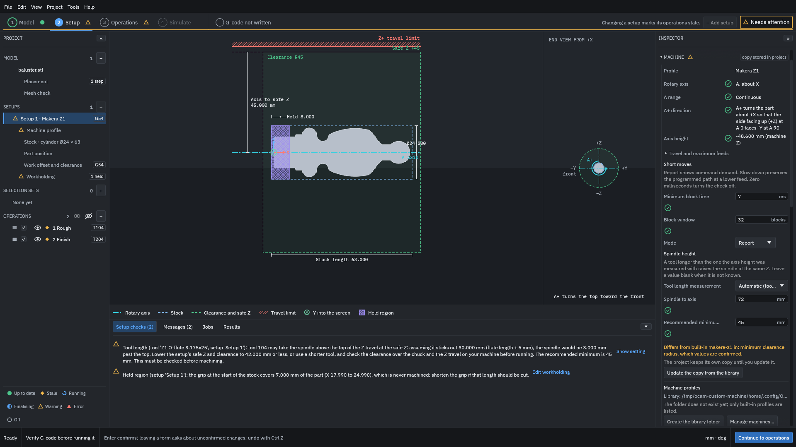
The library folder does not exist until you save a profile in it, or click Create the library folder.
2. Copy the built-in profile
Starting from a copy is quicker than New machine, which leaves 18 values for you to fill in. A copy keeps every value of the profile it came from until you change it, including the marks that say a value was confirmed on that machine.
- Click Manage machines…. The machine library window opens.
- Under BUILT IN, click Makera Z1. It says “Built in: it cannot be edited”.
- Click Copy to edit. A new profile, “Makera Z1 copy”, appears under LIBRARY as “(new)”: it is a draft, and nothing is written until you save.

3. Describe the machine
Type each value and press Enter. For the example router:
| Field | Value | Why |
|---|---|---|
| Name | Example router | The name in lists. |
| Rotary reference X, Y | -300, -150 mm | A point on the rotary axis, in machine coordinates, where the controller works from: on the Z1, the centre of the headstock face next to the chuck. |
| Axis height (machine Z) | -80 mm | The machine Z of the rotary axis. Every Z the program writes is measured from it. |
| Lowest X, Lowest Y, Lowest Z | -600, -300, -120 mm | The travel limits. The highest stay at the Z1’s -1 mm here; on your machine, type its own. |

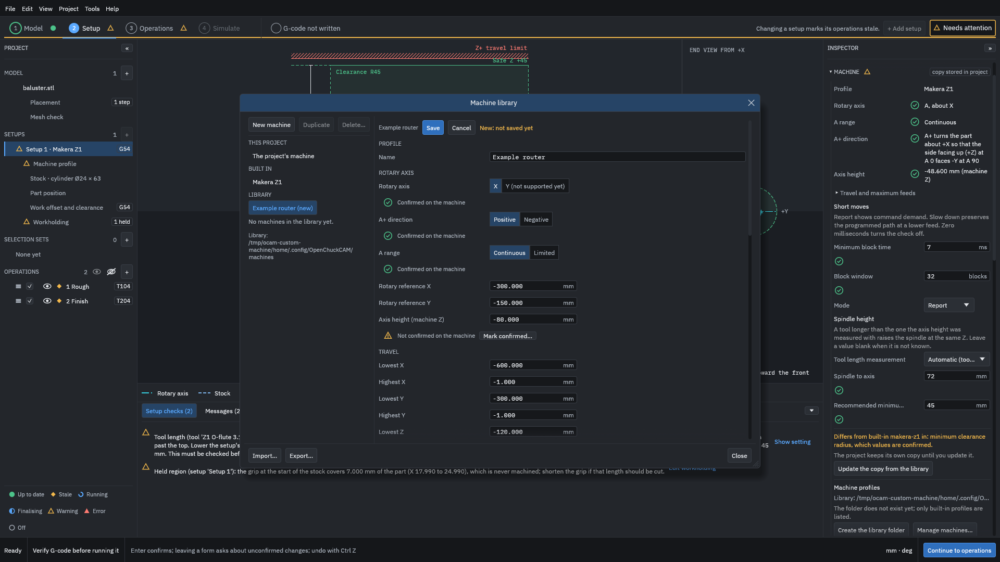
Scroll down the form and go on:
| Field | Value |
|---|---|
| X and Y feed, Z feed, A feed | 3000 mm/min, 1500 mm/min, 7200 deg/min |
| X and Y rapid, Z rapid, A rapid | 5000 mm/min, 3000 mm/min, 7200 deg/min |
| A in the feed word | Separate, because the router runs LinuxCNC; the Z1 uses Makera |
| Safe Z | 60 mm |
| Safe cylinder radius | 50 mm |
| Highest tool number | 99 |
Set Safe Z before Safe cylinder radius: the safe Z cannot be below the safe cylinder, and a radius of 50 mm is refused while the safe Z is still the Z1’s 45 mm.

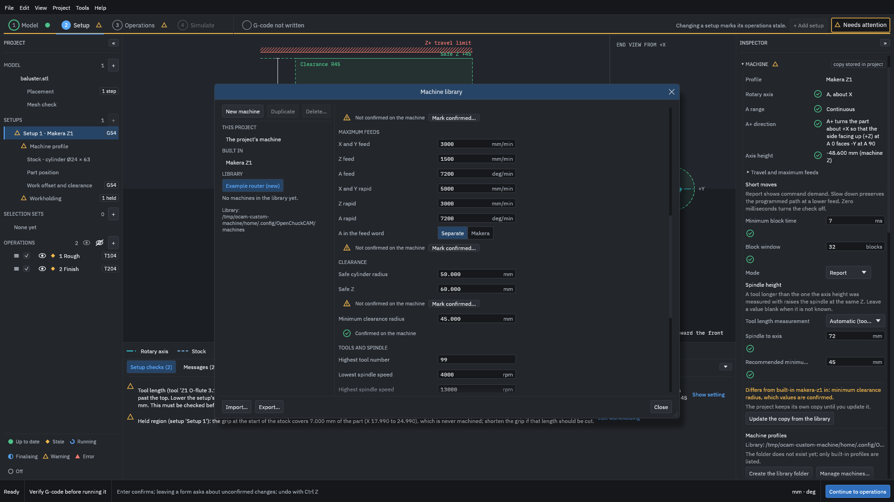
Scroll further, and set Highest spindle speed to 24000 and Lowest spindle speed to 6000 rpm. An operation whose spindle speed is outside this range cannot be posted.

Figure 5 shows the trap of a copy. Minimum block time, Tool length measurement, Spindle to axis and Recommended minimum safe Z were not changed, so they are still the Z1’s values, and every one of them still says “Confirmed on the machine”. Go through every field, and type in your own machine’s value even where it looks right. A typed value is marked unconfirmed until you confirm it.
4. Save the profile
- Scroll to the top of the form.
- Click Save. The draft becomes “Saved in the library”, and the window says “Saved Example router in the machine library.”

example-router.toml, in the library folder.Export… writes the profile to a file you can keep or share, and Import… reads one.
5. Confirm what you measured
When you have measured a value on the machine, click Mark confirmed… next to it and say how you confirmed it, for example “Measured with the probe on the chuck face, 7 Nov 2026”. Do not confirm a value you have not checked: the mark is what tells you, and anyone you share the profile with, that the value is real.

Confirm machine profile values says how to check each one.
6. Use it in the project
- Click Close to close the machine library window.
- In Machine profiles, open the list and choose Example router.
- Click Use this machine. The project takes its own copy of the profile.

Read the result
The setup checks now say:
- “Safe Z cannot be checked against the Z travel: the machine’s axis height is not confirmed on the machine.” Confirm the axis height, and this check can be made.
- “Tool length (tool ‘Z1 ball 3.175x22’, setup ‘Setup 1’): tool 204 may take the spindle above the top of the Z travel at the safe Z: …”. The profile still has the Z1’s Spindle to axis of 72.0 mm, and a safe Z of 60 mm leaves too little room above it for this tool.
- “Tool length (tool ‘Z1 O-flute 3.175x25’, setup ‘Setup 1’): tool 104 may be too long to clear the workholding within the Z travel: …”. The copy also keeps the Z1’s Minimum clearance radius of 45 mm, which is for the Z1’s own chuck and jaws, and this longer tool cannot clear it within the Z travel. Measure the router’s spindle-to-axis distance and its workholding’s clearance and set them; then lower the safe Z or use shorter tools if the warning remains. A tool that may take the spindle past the top of its travel is a possible collision, so if the warning is still there when you export, the export asks you to acknowledge it before it writes anything.
The status bar counts the unconfirmed values: “5 machine values unconfirmed”. Every operation is now out of date, because the machine changed; generate them again before you post.
On the command line
The command line uses the same library:
openchuck-cli machines --library ~/.config/OpenChuckCAM/machines
openchuck-cli machine baluster example-router --library ~/.config/OpenChuckCAM/machines
The first lists the profiles, with how many values are unconfirmed; the second gives the project a copy of the example router and prints every value with confirmed or UNCONFIRMED. See Command line.
Common mistakes
- A value is refused with a red message
- For example “The safe Z (45 mm) must not be below the safe cylinder radius (50 mm).” Change the other value first, then type this one again.
- The profile was copied, but not every value was checked
- Values you do not change keep the source machine’s values and marks. Go through every field.
- A in the feed word does not match the post
- The profile’s A in the feed word must match the feed rule of the post you export with (Separate for the LinuxCNC post, Makera for the Makera Z1 post). The program does not check that they match.
- The machine is not 4-axis with A turning about X
- It cannot be described: only a rotary axis about X is supported.
Create a post-processing template
This example makes a small post-processor of your own, loads it, writes a program with it and checks the result. It uses the example post in the repository, testdata/examples/minimal-post, and the tutorial’s finished project, testdata/examples/baluster/baluster-project. Writing a post-processor is the reference for every option, variable and filter used here.
Note
The example project places the part 17.99 mm from the headstock face (Offset along X and Zero at X in the setup), the length of the project owner’s supplied chuck. It is not a value for your machine: for your own parts, measure the distance from the face of the headstock body to the face of your chuck where the stock starts, with your jaws fitted and gripping as you will grip, and use that number. See Set up the stock.
Warning
A post you write is yours to check. The program cannot know your controller: its checks read the program back in the LinuxCNC or Makera Z1 dialect only, and nothing they report makes a post right for your machine. Keep the safety notice on, check every program, and run an air cut before anything else; the Makera Z1 air cut and safe-practice checklist show the kind of steps to follow on any machine. Generated G-code must be verified by you before it is run on a machine.
What you need
- OpenChuckCAM, and the example projects: the
-examples.zipfile beside each download on thenightlypre-release and every release, or the repository’stestdata/examplesfolder. Both holdminimal-postandbaluster. - A text editor.
1. Look at the example post
The folder has two files.
post.toml names the post and sets its options:
schema = 1
name = "Minimal example"
template = "minimal.post"
feed_rule = "linuxcnc"
[options]
units = "mm"
a_letter = "A"
a_direction = "same"
unwind = "rotate"
header = ["G90 G21 G17"]
footer = ["M5", "M30"]
work_offset = "G54"
coolant = "off"
feed_mode = "g94"
comments = true
safety_notice = true
file_extension = "ngc"
[options.tool_change]
stop_spindle_first = true
length_offset = false
[options.line_numbers]
enabled = false
start = 10
step = 10
[options.decimals]
pos = 3
a = 3
f = 1
Every key is required unless the reference says it is optional, and a key the program does not know is refused. Three choices matter most:
feed_ruleis how the F word is worked out on a move that turns A. Choose the rule of your controller:linuxcncapplies F to the X, Y and Z distance,makerais the Makera Z1’s rule.comments = trueandsafety_notice = truewrite the two lines of the safety notice at the top of every program. The notice needs comments, and a post with the notice on and comments off is refused.unwind = "rotate"writes no command to reset the A count, so A keeps its full value to the end of the program.
minimal.post is the template. Text outside {% %} and {{ }} is written as it is; {{ ... }} writes a value; {% ... %} is logic:
{% set st = namespace(at="") %}
({{ title }})
{% if generator is not none %}
({{ generator }})
{% endif %}
{% for notice in safety_notice %}
({{ notice }})
{% endfor %}
{% for h in opt.header %}
{{ h }}
{% endfor %}
{{ opt.work_offset }}
{% for it in steps %}
{% if it.step == "comment" %}
({{ it.text }})
{% elif it.step == "tool_change" %}
M5
T{{ it.number }} M6
{% elif it.step == "spindle_on" %}
S{{ it.rpm|fixed(0) }} M3
{% elif it.step == "rapid" or it.step == "feed" %}
{% set at = "X" ~ it.target.x|fixed(opt.decimals.pos) ~ " Y" ~ it.target.y|fixed(opt.decimals.pos) ~ " Z" ~ it.target.z|fixed(opt.decimals.pos) ~ " A" ~ it.target.a|fixed(opt.decimals.a) %}
{% if at != st.at %}
{% if it.step == "rapid" %}
G0 {{ at }}
{% else %}
G1 {{ at }} F{{ it.feed.value|feed(opt.decimals.f) }}
{% endif %}
{% set st.at = at %}
{% endif %}
{% endif %}
{% endfor %}
{% for f in opt.footer %}
{{ f }}
{% endfor %}
It writes the opening comments, the header and the work offset, then one line or more for each step of the program, then the footer. Unlike the built-in posts it writes every axis word on every move, which makes a longer file that is easier to read. fixed(3) writes a number with three decimal places, and feed(1) writes the feed with at least three significant figures. The st.at variable remembers the last position, so a move that would go nowhere is left out (see Common errors).
2. Make your own copy
- Copy the
minimal-postfolder to a folder of your own, for examplemy-post. - In
my-post/post.toml, changenametoMy post. - Make one change you can see: set
[options.line_numbers]enabled = true. The template above does not write line numbers yet, so also change each line it writes; the built-in templatecrates/openchuck-post/posts/makera-z1/main.postshows how, with itslinemacro. Or leave line numbers off for this first try.
3. Write a program with it
In the program:
- Copy
testdata/examples/baluster/baluster-projectto a folder of your own, and open the copy with File > Open project. - Generate the toolpaths, and simulate them, as in the tutorial.
- On the Simulate step, press Post and export…. Under Post-processor, set Post to A post folder.
- In Post folder, type the folder of your post, for example
/home/you/my-post. - Read the Checks before writing, tick I will verify this G-code before running it on a machine if asked, and press Write G-code.
If the folder cannot be read, the panel says why, in red, before you export.
On the command line, the same is one command:
openchuck-cli regenerate baluster --post my-post --tool-numbers keep --out baluster-out
4. Read the result
The program starts like this:
(Baluster - Setup 1)
(OpenChuckCAM 0.49.0)
(This program has not been run on your machine. Check it before you run it.)
(Simulate it and air cut it first. You are responsible for what the machine does.)
G90 G21 G17
G54
(operation Rough, tool T104 Z1 O-flute 3.175x25, about 1526 s)
M5
T104 M6
S10000 M3
G0 X9.087 Y0.000 Z45.000 A0.000
G0 X9.087 Y0.000 Z13.000 A0.000
G1 X9.087 Y0.000 Z11.001 A0.000 F300.0
and ends with the footer, M5 and M30. The version in the second line is the version of your program.
Before it writes anything, the program reads the program back and replays it, and compares the replay with the toolpath; a program that does not match is not written. The command line prints, for example:
01-setup-1.ngc: 29099 moves; replay matches the toolpath (tip 0.0007 mm, A 0.0005 deg; cut 2806.9 s, toolpath 2808.6 s)
This says the file holds the same moves as the toolpath, within the numbers shown, and takes the same time. It does not say that your controller reads the file as the program does. Read the start, a tool change and the end of the file yourself, and compare one with a program from the built-in post you started from.
5. Test it in a simulator, then on the machine
- If your controller is LinuxCNC, or close to it, run the program in the LinuxCNC simulator first, as the project does with its own posts.
- Run an air cut on the machine: no tool, no material, reduced feed, with your hand on the stop.
- Only then cut, in a soft material first.
Common errors
These are the messages the command line gives for each mistake; the export panel shows the same text.
options.safety_notice: is written as comment lines, so it needs comments = true; set comments = true, or safety_notice = false- The notice is on and
comments = false. Turn comments on. If you turn the notice off instead, your programs carry no reminder to check them. post definition ...: unknown field `colour`, expected one of ...- A key in
post.tomlis misspelt, or in the wrong table. The message names it and lists the keys that are allowed there. feed_rule "linuxcnc" cannot be written in feed_mode G93: inverse_time goes with g93, the others with g94feed_modeandfeed_ruledo not agree.setup 'Setup 1': minimal.post at line 27: undefined value `it.taget` is undefined- A mistake in the template, here a misspelt variable. The message names the template and the line. The template stops at the first unknown name instead of writing empty text.
error: 01-setup-1.ngc failed its checks (the replay does not match)- The template wrote a move that goes nowhere, such as two lines with the same position. The read-back counts the moves, so the program no longer matches its toolpath, and nothing is written. The
st.atcheck in the example leaves such moves out. options.safety_notice: is on, but the template minimal.post does not write the notice; ...safety_notice = true, but the template does not write the notice lines. Keep the{% for notice in safety_notice %}loop after the generator line.
What the example does not do
The example post is for learning the format. It is written for the LinuxCNC dialect and is not set up for any machine. It has no line numbers, no tool length offset, and no coolant. It keeps A at its full value, so a long program reaches large A values; a controller that wraps A, or needs the count reset, needs its own unwind choice.
Tabs and held regions
This example gives the tutorial’s baluster a tab at each end, lets the program place them, and then makes the two mistakes that tabs most often meet: a tab shorter than the tool is wide, and a tab with no room left for it. You see what the program says each time and what to change.
Warning
Tabs and held regions change where the tool may go, but the program does not know your chuck jaws, your tailstock or how you will cut the tabs away. A tab that is too thin can break while the part is being cut. Check every path near a tab in the simulation, and run an air cut first. Generated G-code must be verified by you before it is run on a machine.
You need the tutorial’s finished project, testdata/examples/baluster/baluster-project. Copy it to a folder of your own and open the copy with File > Open project. The numbers on this page come from that project and the build named in the figures’ record; your own part gives other numbers.
Note
The example project places the part 17.99 mm from the headstock face (Offset along X and Zero at X in the setup), the length of the project owner’s supplied chuck. It is not a value for your machine: for your own parts, measure the distance from the face of the headstock body to the face of your chuck where the stock starts, with your jaws fitted and gripping as you will grip, and use that number. See Set up the stock.
What you are setting
A held region is a length of the stock that the chuck or the tailstock holds. It is never cut, and links keep clear of it. A tab is a short bridge of uncut material between the part and the stock, so that the part stays attached until you cut it free yourself. Both count as part of the finished shape: the program cuts round them as if they were part of the model.
A tab may only sit in one of two zones along the rotary axis:
- Head zone
- Between the end of the held region at the start (or the start of the stock) and the start of the part.
- Tail zone
- Between the end of the part and the held region at the end (or the end of the stock).
The tutorial’s project grips 8 mm of stock, and the grip reaches 7 mm into the part, so there is no head zone at all. You first make room.
1. Make room at the head
- Click Setup at the top of the window.
- In the project panel, under Setup 1, click Stock.
- Set Length to
78and Start X to4.99(millimetres), pressing Enter after each. - Under Setup 1, click Workholding.
The grip is still 8 mm long, so it now holds X = 4.99 to 12.99, and the bar from X = 12.99 to the part at X = 17.99 is free. (The example project places the part 17.99 mm from the headstock face; 4.99 is 13 mm before the part.) The section shows the zones:

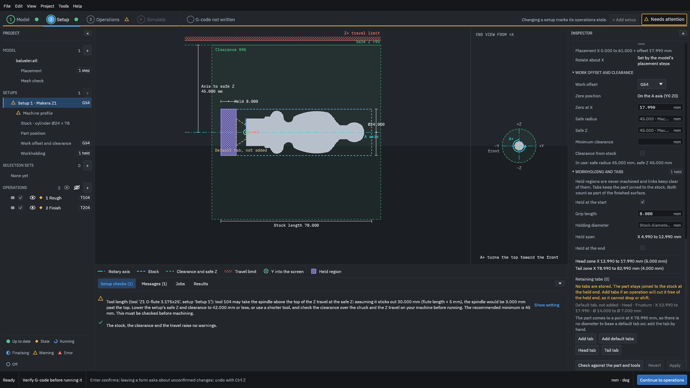
2. Add a head and a tail tab
- Click Head tab. A cylinder tab appears in the head zone, with Place automatically ticked.
- Click Tail tab. A second tab appears in the tail zone.

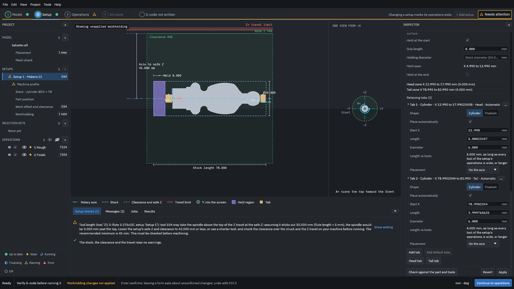
An automatic tab fills its zone and follows it: if you later move the part or change the stock, the tab moves with the zone. If you type a Start X or Length yourself, the tab stops being automatic and stays where you put it.
Length vs tools compares the tab with the tools of the setup’s operations. Both tools of this project are 3.175 mm across, and both tabs are longer, so the line gives each tab’s length and says it is as long as every tool of the setup’s operations is wide, or longer.
- Press Apply at the bottom of the section.
Nothing the view shows is used until you apply it: the toolpaths, the simulation and the G-code use the held regions and tabs stored in the setup. Until you press Apply or Revert, the Messages list says “Workholding (setup ‘Setup 1’): it has changes that are not applied.” and the status bar says “Workholding changes not applied”. Apply runs the same checks as Check against the part and tools first, and stores the workholding when they finish.
- Click Continue to operations, then Generate.
With two 5 mm and 4 mm tabs, the Messages list has no warning about tabs. The project chip reads “Needs attention”, and 2 Finish carries a warning mark for a warning about the held region, not the tabs (Figure 3 shows it):
Held region (operation ‘Finish’): nothing within one tool radius of the held region at the start of the stock is cut: no part of the tool reaches over the gripped length of the stock.
3. A tab shorter than the tool is wide
Make the tail tab shorter than the tool:
- In the Inspector, under Tab 2, set Length to
2and press Enter.
The tab is no longer automatic (you typed its length), and Length vs tools turns amber: “2.000 mm, shorter than the tool T204 Z1 ball 3.175x22 (3.175 mm) of 2 Finish”.
![The Operations step with the paths generated, 2 Finish carrying a warning mark and the Messages list showing Warnings 3: a Held region warning for operation Finish, the Tool length warning for tool 104 and the line about workholding changes that are not applied; the Inspector shows Tab 2, Cylinder, X 78.9902344 to 80.9902344, Tail, no longer Automatic, Place automatically unticked, Length 2.000, and Length vs tools in amber: 2.000 mm, shorter than the tool T204 Z1 ball 3.175x22 (3.175 mm) of 2 Finish.](examples/images/tabs_held/03-length-vs-tools.png)
- Press Apply, then Generate.
Apply stores the change and keeps the warning on the tab’s row; it does not refuse a short tab. Generation then warns once for each operation whose path can reach the tab:

The operation’s warning reads, in full:
Tab length (operation ‘Rough’, tool ‘Z1 O-flute 3.175x25’): tab 2 (X 78.990 to 80.990 mm) is 2.000 mm long along X, shorter than the tool is wide (3.175 mm), so the tool may be unable to cut the gap beside it to shape. The path was made: check it before running it. Use a smaller tool, or make the tab longer.
and the setup’s own line on the tab’s row reads “Tab 2 is 2.000 mm long along X, shorter than the tool T104 Z1 O-flute 3.175x25 (3.175 mm) of 1 Rough. Make the tab longer or use a smaller tool.”
Because the tool may cut through a tab that is too short, and the part may then come loose, the program treats this warning as a possible collision. Hold the mouse over the warning mark beside 1 Rough or 2 Finish:

In Post and export…, Write G-code then waits for the tick “I have read the possible collisions listed for this result and will check them before running the program”, and the command line needs --acknowledge-collision-warnings. The flute-length warning shows that dialog. The tick lets you write the files; it does not change the path, so fix the tab first if you can.
What it means: a tool cannot cut a gap narrower than itself. Beside a tab shorter than the tool, the tool cannot reach down to the part on both sides of the tab, so material may be left there, or the path may not come as close to the part as you expect. Look at that end in the simulation before you go on.
What to change, in order of preference:
- Make the tab at least as long as the widest tool that reaches it. Here, set Length back to
4, or tick Place automatically again so it fills the zone. - Use a smaller tool for the operations that cut near the tab.
- If the operation only cuts part of the model, limit it to a region away from the tab: the check only counts operations whose path can reach the tab (Limit an operation to a region).
When there is no room for the tab to sit beside the tool at all, the operation adds a Tab clearance warning, naming the operation and the tool, that the tool “cannot cut down beside” the tab, with the room it had, and leaves the stock round the tab above it there.
4. A tab with no room
An automatic tab needs its zone. Take the zone away:
- Set Grip length to
14and press Enter.
The held region now runs from X = 4.99 to 18.99, 1 mm into the part, so the grip warning comes back (“The chuck grips 1.000 mm of the part here”), and Tab 1 has nowhere to go. Its row turns amber:
No room at the head: the held region reaches the part. It keeps its last position: move the part or shorten the held region, or untick “Place automatically” and place it by hand.

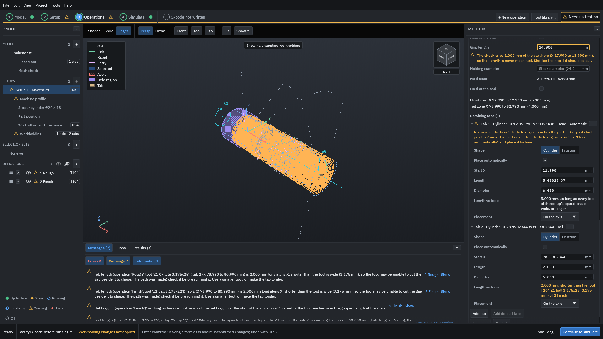
- Press Apply.
Apply stores the workholding with the 14 mm grip and keeps a warning for the tab. Tab 1 stays where it was last placed, X = 12.99 to 17.99, which is now inside the held region, and the section says “Head zone: no room for a tab”. The operations become stale, because the held region changed.
![After Apply, the Inspector shows Held span X 4.990 to 18.990 mm and Head zone: no room for a tab; Tab 1's row has an amber triangle and the text tab 1 is placed automatically at the head of the part, but there is no room there; the Messages list shows Warnings 5, among them the Tool length warning for tool 104, the Tab position line for tab 1, the Held region warning that the grip covers 1.000 mm of the part, and Workholding lines about tab 2 being shorter than the tools; the Generate button reads Generate stale (2).](examples/images/tabs_held/06-apply-warns.png)
The warning in the Messages list reads:
Tab position (setup ‘Setup 1’): tab 1 is placed automatically at the head of the part, but there is no room there: the held region at the start (or the start of the stock) reaches the part. It keeps its last position; move the part or shorten the held region, or untick “Place automatically” and place it by hand.
A tab with no room is a warning because the job can still be made: the tab only takes up space that the grip already holds. Read it as “this tab is not doing what you set it up to do”. Apply also stores and warns when two tabs overlap.
To fix it, do one of these, then press Apply again:
- Shorten the grip so the zone comes back (here,
8again). - Move the part along the stock (Offset along X under Part position), or lengthen the stock.
- Untick Place automatically on the tab and place it by hand inside a zone, or remove it with … on its row.
Read the result
After step 2 the stored setup has an 8 mm grip from X = 4.99 and two tabs, X = 12.99 to 17.99 and X = 78.99 to 82.99, each 6 mm across. Generation treats them as part of the shape, so no path cuts into them; look at both ends in the simulation to see what is left round them. The project panel shows “1 held · 2 tabs” beside Workholding.
A warning about a tab is about whether the tool can cut beside it, not whether the part will hold: the program does not work out the cutting forces on a tab. Choose the tab’s diameter for your material, and look at it in the simulation.
Common mistakes
- “No tabs are stored. The part stays joined to the stock at the held end.”
- Not a mistake on its own: the part is held by its uncut end. Add tabs when an operation will cut the part free of the held end.
- “Workholding (setup ‘Setup 1’): it has changes that are not applied.”
- You changed the workholding and did not press Apply. The view shows the change, but generation does not use it.
- “Tab length (operation …): … shorter than the tool is wide”
- The tab is shorter than the tool. Make it longer, use a smaller tool, or keep the operation away from it.
- “No room at the head: the held region reaches the part.”
- An automatic tab has no zone. Shorten the grip, move the part, or place the tab by hand.
- “The part comes to a point at X 78.990 mm, so there is no diameter to base a default tab on; add the tab by hand.”
- Add default tabs sizes a tab from the part’s diameter at its end, and the baluster’s finial ends in a point. Tail tab still adds a tab of the default 6 mm diameter there.
- The grip covers part of the model
- “The grip at the start of the stock covers 7.000 mm of the part … which is never machined”. That length stays as bar. Shorten the grip, or lengthen the stock as in step 1, if it should be cut.
Related: Stock and the held region, Tabs.
Limit an operation to a region
This example saves the ball of the baluster’s finial as a selection set, then runs the tutorial’s finishing operation three ways: on the whole part, on the ball only, and on everything except the ball. You see the path and the numbers change each time.
Warning
A selection limits where the program plans the cut. It does not stop the tool from touching the rest of the part on the way in, on the way out or between cuts. Look at the whole path, simulate it, and run an air cut first. Generated G-code must be verified by you before it is run on a machine.
You need the tutorial’s finished project, testdata/examples/baluster/baluster-project. Copy it to a folder of your own and open the copy with File > Open project. The numbers on this page come from that project on the build named in the figures’ record; your own part gives other numbers.
Note
The example project places the part 17.99 mm from the headstock face (Offset along X and Zero at X in the setup), the length of the project owner’s supplied chuck. It is not a value for your machine: for your own parts, measure the distance from the face of the headstock body to the face of your chuck where the stock starts, with your jaws fitted and gripping as you will grip, and use that number. See Set up the stock.
What a region is
A selection set is a named group of the model’s surfaces. On an STL model, such as the baluster, it is a group of triangles; on a STEP model it is a group of faces. Each operation has four places to put sets, under Geometry in the Inspector. The program describes each one in its tooltip:
- Cut on
- “The operation cuts only on these surfaces.” With nothing here, it cuts the whole part.
- Contain within
- “The tool may cut only inside the window of X and angle this set spans.”
- Avoid
- “These surfaces are never cut; the tool may pass over them.”
- Check
- “The tool must not touch these surfaces.”
A set in Avoid or Check has a choice beside it: Cut short (the path stops where the tool would reach the set), Warn only (the path is kept and generation warns where it reaches the set) and Ignore (the set is not used for this operation). Warn only samples the path and can miss a narrow set.
A path limited to a selection stops at the edge between a selected surface and an unselected one: a contact on that edge counts as off the selection.
1. Save the ball as a set
- In the project panel, click + beside SELECTION SETS. The pick tools open at the top left of the view.
- Click Front above the view, so the part lies along the screen.
- Keep By angle (E) chosen, with the angle at 30°, and click the ball at the end of the finial. The Inspector says “1,104 triangles selected”: the ball’s triangles, up to where the surface turns more than 30° into the neck.
- Type
Finial ballin the name box and press Enter.

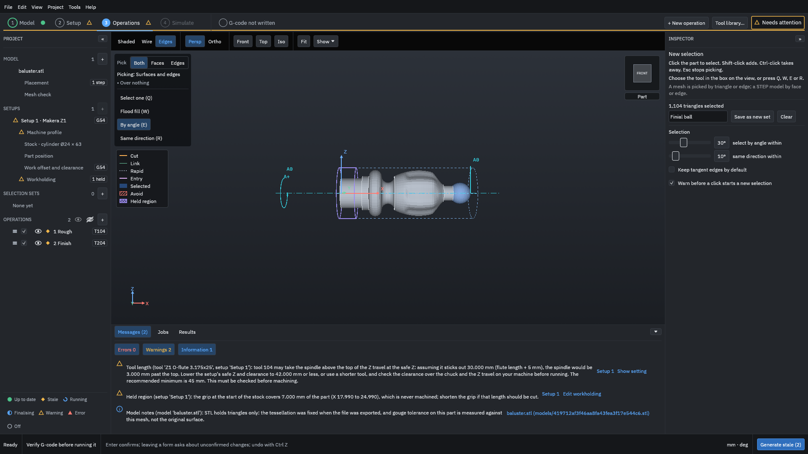
- Click Save as new set, then press Esc to stop picking.
“Finial ball” appears under SELECTION SETS with “1104 triangles”, and the legend of the view gets its colour. Shift-click adds to a set and Ctrl-click takes away from it, while the set is chosen.
2. Before: the whole part
- In the project panel, click 2 Finish.
- Click the eye beside 1 Rough to hide its path, so the view shows the finishing path only. Hiding a path changes the view only.
- Click Generate at the bottom right, and wait for generation to finish. 1 Rough turns green; 2 Finish shows the warning mark, and the Inspector shows “Warning” for it.
- Under the view, click Results, and scroll the list to its end.
![The Front view with the helical finishing path drawn in orange over the whole baluster from the collar to the finial; the operation 2 Finish has a warning mark and the Inspector shows Warning; the Results tab reads 2 operations, 29098 moves, Errors 0, Warnings 1, Information 11, a line that starts Rotary axis (operation 'Finish'): moves 19077 to 19148 (72 moves), and Setup 'Setup 1': stock 28503 mm³ before, 14293 mm³ after (14210 mm³ removed); Rough: 12100 mm³ removed in 9946 moves; Finish: 2110 mm³ removed in 19152 moves.](examples/images/region/02-before.png)
The first line of the Results list is a note for the finish, counted under Information: “Rotary axis (operation ‘Finish’): moves 19077 to 19148 (72 moves): A turns with the contact point at the rotary axis during these moves, so the contact point barely moves and the rotary axis’s speed limit sets the time taken (0.167 s); the feed …” (the figure cuts the line off there). Click the line to read all of it.
3. Only the ball: Cut on
- In the Inspector, under Geometry, open the list beside Cut on and choose Finial ball.
- Click Generate.

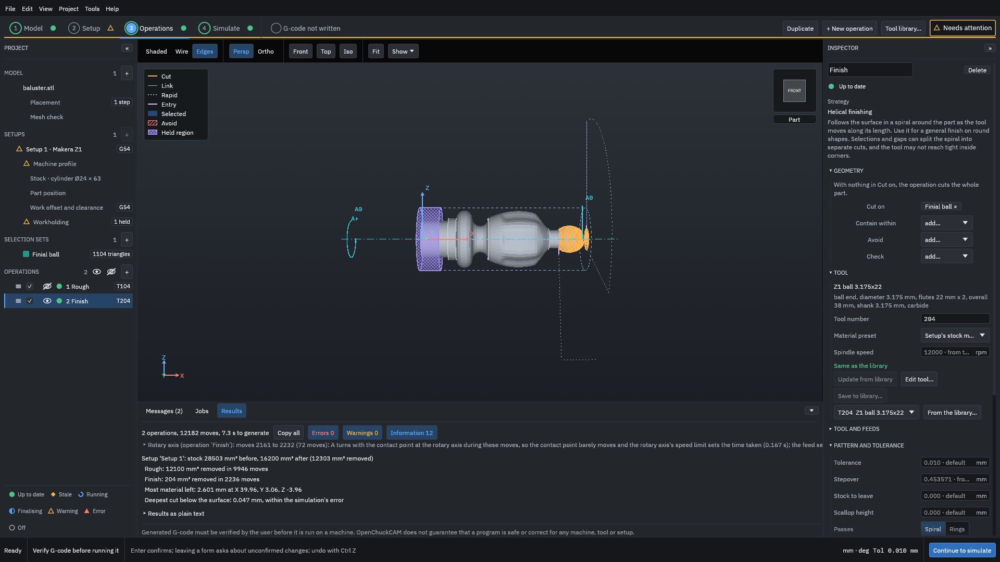
The finish now has 2,236 moves instead of about 19,150, and removes 204 mm³. The rest of the part keeps what the roughing left, 0.3 mm of stock to leave.
4. Everything but the ball: Avoid
- Click the × on Finial ball beside Cut on, so that it is empty again.
- Open the list beside Avoid and choose Finial ball. Cut short is chosen beside it.
- Click Generate.
![The Front view with the finishing path over the whole baluster except the ball, which is drawn with the red hatching of Avoid; the Inspector shows Avoid: Finial ball with Cut short chosen and Warn only and Ignore beside it, and Warning; the Results tab reads 2 operations, 84864 moves, Errors 0, Warnings 1, Information 12, a line that starts Rotary axis (operation 'Finish'): moves 74161 to 74914 (754 moves), and stock 28503 mm³ before, 14436 mm³ after (14067 mm³ removed); Finish: 1968 mm³ removed in 74918 moves.](examples/images/region/04-avoid.png)
Read the result
| Finish limited by | Moves, both operations | Removed, both operations |
|---|---|---|
| nothing (the whole part) | 29,098 | 14,210 mm³ |
| Cut on: Finial ball | 12,182 | 12,303 mm³ |
| Avoid: Finial ball, Cut short | 84,864 | 14,067 mm³ |
The roughing is the same in every row: 9,946 moves and 12,100 mm³.
Avoid can lengthen the program, even though it cuts less: here the finish with the ball avoided has more moves than the finish over the whole part. The strategy’s description says that “selections and gaps can split the spiral into separate cuts”. After you add a set, look at the path, the move count in the Results tab and the programmed time in Post and export… again, not only at the picture.
Common mistakes
- The set is lost when you click elsewhere
- Type the name, then click Save as new set before you click anything else. If you leave the form with a typed name, the program asks “Keep the changes or discard them?”; choose Keep and save.
- The set takes more or less than you meant
- By angle stops where the surface turns more than the angle. Lower the angle to stop sooner, or Shift-click and Ctrl-click to change the set.
- “Warn only samples the path and can miss a narrow set.”
- The program says this beside Warn only. Use Cut short where the set must not be cut.
- “… it is set to Ignore: the tool is not kept clear of it”
- A set in Avoid or Check with Ignore chosen is not used. Choose Cut short or Warn only.
Related: Tabs and held regions, Operations and strategies.
Rest machining
This example adds a rest machining operation with a 2 mm ball end mill after the tutorial’s two operations, which both use 3.175 mm tools. You see what the smaller tool cuts, what it says it cannot reach, and the warning it gives when there is no earlier operation to follow.
Warning
Rest machining works out what is left from the stock simulation, not from your real part. If an earlier operation was changed, skipped or run differently on the machine, the material the rest operation meets is not what it planned for, and a small tool can be overloaded or broken. Check the path in the simulation and run an air cut first. Generated G-code must be verified by you before it is run on a machine.
You need the tutorial’s finished project, testdata/examples/baluster/baluster-project. Copy it to a folder of your own and open the copy with File > Open project. The numbers on this page come from that project on the build named in the figures’ record; your own part gives other numbers.
Note
The example project places the part 17.99 mm from the headstock face (Offset along X and Zero at X in the setup), the length of the project owner’s supplied chuck. It is not a value for your machine: for your own parts, measure the distance from the face of the headstock body to the face of your chuck where the stock starts, with your jaws fitted and gripping as you will grip, and use that number. See Set up the stock.
What rest machining does
A tool cannot cut a corner tighter than its own radius, or a groove narrower than itself. After a larger tool, material is left in those places. A rest machining operation takes the stock as the earlier operations of the same setup leave it, finds where more than Smallest material to clean (0.15 mm unless you change it) is left on the part, and cuts there with a smaller tool. It does not use selection sets: the strategy list says “Rest machining · ignores selections”.
1. Add the rest operation
- Click + New operation.
- Under Strategy, choose Rest machining.
- Click From the library…, choose Z1 ball 2x12 under MAKERA Z1 > BALL END MILLS, and click Add to project. The tool is a 2 mm ball end mill with 12 mm of flute.
- Name the operation
Rest.

- Click Add. The operation is third in the list, after 1 Rough and 2 Finish, so it starts from what they leave.
2. Generate and read what it did
- Click Generate.
- Under the view, click Results. In Figure 2, Information is turned off, so the list shows the warnings only.

The rest operation reports in several lines. Read them in this order.
- What it found
- “Rest machining (operation ‘Rest’): 549718 of 1400280 points sampled on the part have more than 0.15 mm of material left; 87 passes cut where it is left”. The roughing left 0.3 mm on purpose, and the finish took most of it; these are the places it did not reach.
- What it added for steep walls
- “rest machining added 20 rings between X 29.974 and 78.988, as close as 0.1442 mm apart, where its tool’s side meets a wall with material left, so that a steep wall keeps about 0.15 mm or less between them”. On a wall that faces along the axis, passes spaced for a flat surface would leave tall ridges, so the operation adds rings there.
- What it cannot reach
- “rest machining cannot reach 9 areas of the part where material is left, which stay uncut: X 25.027 to 27.027 all round (92.8 mm2), too near a held region: the tool keeps its radius clear of the gripped length of the stock; X 30.257 to 31.085 all round (58.3 mm2), too narrow for this 2.000 mm tool, or deeper than its flutes or shank allow; … and 4 smaller. Check them in the simulation; a smaller tool or another operation may reach them.” The numbers match the markers in the view.
Scroll the Results list down to the volumes:

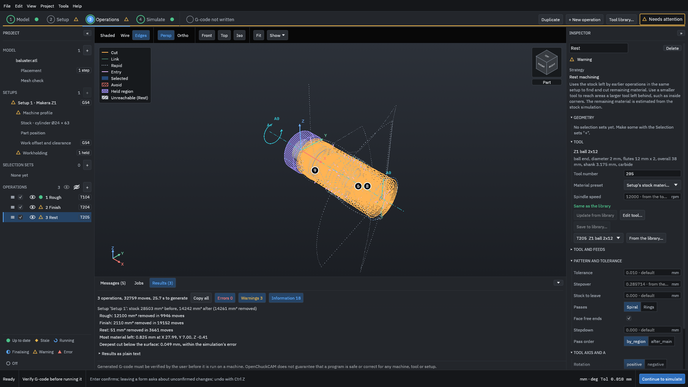
Read the result
| Removed | Moves | |
|---|---|---|
| Rough (3.175 mm flat end) | 12,100 mm³ | 9,946 |
| Finish (3.175 mm ball) | 2,110 mm³ | 19,152 |
| Rest (2 mm ball) | 51 mm³ | 3,661 |
The rest operation is a small cut: 51 mm³ spread over the corners and walls the 3.175 mm ball could not reach. The largest amount left anywhere, “Most material left: 0.825 mm at X 27.99”, is at the collar next to the chuck’s grip, where the rest tool must keep its radius clear of the held region. Without the rest operation, the same simulation on the command line (openchuck-cli simulate) gives 0.924 mm at the same place. To clean that corner, shorten the grip (Tabs and held regions) or use a tool that can reach it; a smaller ball alone does not help there.
Rest machining reads the stock after the operations above it in the list. Keep it after them: if you move it to the top, or turn the earlier operations off, it has nothing to follow.
3. With no earlier operation
To see what happens when the rest operation has nothing to follow, turn the other two off:
- Untick the boxes beside 1 Rough and 2 Finish in the project panel. They are struck through and are not generated or posted.
- Click Generate.

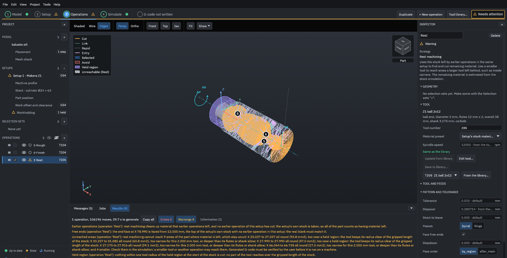
The first line says what happened:
Earlier operations (operation ‘Rest’): rest machining cleans up material that earlier operations left, and no earlier operation of this setup has cut: the setup’s own stock is taken, so all of the part counts as having material left.
The operation now plans 106,196 moves and removes 14,114 mm³, as much as the roughing and the finish together, with a 2 mm tool and its Stepdown at 0. It is a warning, not an error, and a path is made. Read it as “this is not the job you meant”: tick the roughing and the finish again, or use a roughing operation for bulk material.
Common mistakes
- The rest operation removes almost nothing
- That is normal when the earlier tools reached most of the part. Look at “Most material left” and the markers before you decide it is needed.
- “… has nothing to clean: none of … points sampled …”
- No point on the part has more than Smallest material to clean left. Move the operation after the one whose leftovers it should cut, or lower Smallest material to clean.
- “… too near a held region: the tool keeps its radius clear of the gripped length of the stock”
- The material is next to the chuck’s grip. No tool reaches it without coming closer to the grip. Shorten the grip, or accept it.
- “… too narrow for this 2.000 mm tool, or deeper than its flutes or shank allow”
- Use a smaller tool or one with longer flutes for those areas, in a second rest operation.
- The rest tool is the same size as the earlier one
- It then finds little or nothing it can reach. Choose a tool smaller than the one that left the material.
Related: Roughing and finishing, The flute-length warning.
The flute-length warning
This example gives the tutorial’s finishing tool flutes only 3 mm long, so that the program warns that they may not reach the deepest cut. You read the two warnings it gives, then try each of the changes they suggest.
Warning
The flute-length warning is a warning, not a collision check. It compares the tool’s flute length with how deep the stock may stand along the tool’s axis, and the depth it uses is often a bound, not a measurement. No warning does not mean that the shank, the holder or the spindle clears the stock, the chuck or the part. Check the path in the simulation, and run an air cut first. Generated G-code must be verified by you before it is run on a machine.
You need the tutorial’s finished project, testdata/examples/baluster/baluster-project. Copy it to a folder of your own and open the copy with File > Open project. The numbers on this page come from that project on the build named in the figures’ record; your own part gives other numbers.
Note
The example project places the part 17.99 mm from the headstock face (Offset along X and Zero at X in the setup), the length of the project owner’s supplied chuck. It is not a value for your machine: for your own parts, measure the distance from the face of the headstock body to the face of your chuck where the stock starts, with your jaws fitted and gripping as you will grip, and use that number. See Set up the stock.
What the warning means
The flutes are the cutting length of the tool. Above them is the shank, which does not cut. When the stock stands higher above the tool’s tip, along the tool’s axis, than the flutes are long, the shank may rub or push against the stock. The program checks every operation for this after it makes the path. If the stock may stand too high, it still makes the path, and it warns.
A tool that fits within the flutes can still be too short in other ways: the holder, the collet and the spindle are not checked against the stock by this warning.
Because the shank may meet the stock, the program treats this warning as a possible collision: you must acknowledge it before the G-code is written. Section 3 shows where.
1. Shorten the flutes
- In the project panel, click 2 Finish.
- In the Inspector, under Tool, click Edit tool…. The tool library opens on the project’s own copy of the tool, T204.
- Set Name to
Short-flute ball 3.175x3, so the copy is not mistaken for the library’s tool. - Set Flute length to
3.

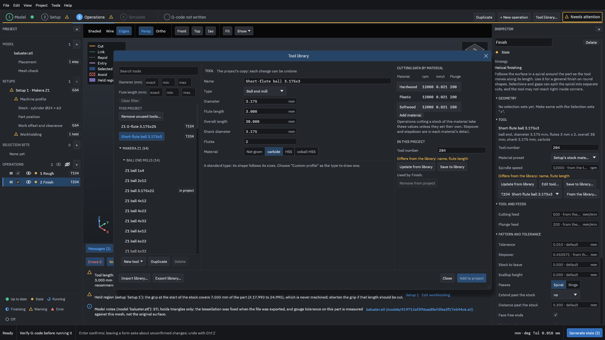
- Click Close, then Generate stale (2) at the bottom right.
2. Read the two warnings

The first warning is about the passes over the part:
Flute length (operation ‘Finish’, tool ‘Short-flute ball 3.175x3’): the stock may stand up to 6.712 mm above the tool’s tip along its axis (a bound, from how far the stock reaches from the rotary axis or across a step between readings: that stock is not measured exactly across the tool) (at X 39.193, A 342.3), more than the tool’s 3.000 mm of flute, so the shank may meet the stock; the stock is what the earlier operations in this setup left. The path was made: check it before running it. Use a tool with longer flutes, or rough the part first in this setup, or turn on Finishing layers.
Read it in parts:
- “may stand up to 6.712 mm … (a bound …)”: the depth is an upper limit worked out from the stock, not a measurement across the tool. The real depth there may be less.
- “(at X 39.193, A 342.3)”: the place along the part and the angle where the bound is largest. Here it is on the vase.
- “the stock is what the earlier operations in this setup left”: the check reads the simulated stock after the roughing, not the bare bar.
The second warning is about the end of the part:
Flute length (operation ‘Finish’, tool ‘Short-flute ball 3.175x3’): the end face at X 78.990 has nothing beyond it and is not faced: the stock beside it is up to 5.462 mm deep (a bound, from how far the stock reaches from the rotary axis: that stock is not measured exactly across the tool), more than the tool’s 3.000 mm of flute, so no turn is cut there and the end keeps what earlier operations left; the stock is what the earlier operations in this setup left. Use a tool with longer flutes, or face it with a Facing operation, or turn off Face free ends for this operation. Check the path before you run it.
A finishing operation with Face free ends ticked steps down beside each end face that has nothing beyond it, such as the point of the finial, and turns round there. When the stock beside the face is deeper than the flutes, it leaves that end out, and says so. Unlike the first warning, this one changes the path: the end is not cut, so it is not a possible collision and needs no acknowledgement.
3. Acknowledge the possible collision
Hold the mouse over the warning mark beside 2 Finish in the project panel:

Click Continue to simulate, then Post and export…, and scroll the dialog down to its checks:
![The Post and export dialog scrolled to its checks: Warning: Flute length (operation 'Finish', tool 'Short-flute ball 3.175x3'): ... A possible collision: acknowledge it before the files are written; a Held region warning and a warning about machine values not confirmed on the machine; the box Verify this G-code before you run it with the unticked box I will verify this G-code before running it on a machine; then These files hold possible collisions of the tool, its shank or its holder with the part, the stock, a tab or a held region. Read each one, here and in Messages, and check it before running the program, the flute-length warning, and the unticked box I have read the possible collisions listed for this result and will check them before running the program; Write G-code is greyed out.](examples/images/flutes/04-export-acknowledge.png)
The checks give the warning in the same words as Messages, “Flute length (operation ‘Finish’, tool ‘…’): …”, ending “A possible collision: acknowledge it before the files are written”, and list it under “These files hold possible collisions of the tool, its shank or its holder with the part, the stock, a tab or a held region. Read each one, here and in Messages, and check it before running the program”. The tick says that you have read them and will check them; it does not make the path any different. On the command line, openchuck-cli regenerate writes the files only with --acknowledge-collision-warnings.
Close the dialog with the × at its top right: here, you fix the cause instead.
4. What to change
The warnings name three changes. Try them in this order.
A tool with longer flutes
This is the first thing to try. Set Flute length back to 22, or choose the library’s Z1 ball 3.175x22 for the operation, and generate again: both warnings go.
Finishing layers
Finishing layers cuts the finish in layers along the tool’s axis, so no one pass is deeper than the Stepdown.
- Click Operations at the top and 2 Finish in the project panel, and scroll the Inspector down to Face free ends and Finishing layers. Show setting beside a warning in the Messages list also takes you to the operation.
- Tick Finishing layers. Stepdown now says “required”.
- Set Stepdown to
2, less than the 3 mm of flute, and click Generate.
![The finish generated in layers: more rapid moves round the part in the view; the Inspector shows Material preset No preset, the Tool and feeds section open with Cutting feed 500 and Plunge feed 200, Face free ends ticked with the note The last path was made with a warning about this setting (see Messages): change it to accept or remove the warning, Finish allowance 0.100 default, Finishing layers ticked and Stepdown 2.000; the Messages list shows Warnings 4, and the only flute-length warning is the one about the end face at X 78.990.](examples/images/flutes/05-finishing-layers.png)
The Results tab now says: “Finishing layers (operation ‘Finish’): up to 3 layers of 2 mm above a finish allowance of 0.1 mm, then the final pass on the surface; the layers start from the stock the earlier operations left, known to a simulation cell, so the depth of each cut is not uniform and no engagement is promised”.
Setting Stepdown also sets Material preset to “No preset”, and the Results tab says “stepdown 2 set on the operation overrides 1 from the cutting data of ‘Short-flute ball 3.175x3’ for ‘Hardwood’”. The operation now keeps its own feeds and speeds, each with a button to go back to the tool’s value.
Face free ends
The end-face warning remains, because the stock beside the end is still deeper than the flutes. If you do not need this operation to face that end (for example because a facing operation, or the cut that parts the piece off, does it), turn it off:
- Untick Face free ends and click Generate.

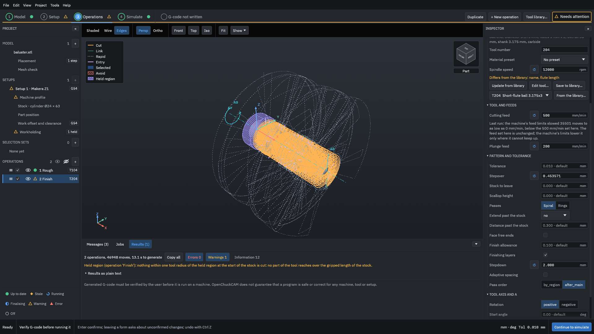
Read the result
| Finish | Flute-length warnings |
|---|---|
| 22 mm flutes (the tutorial’s tool) | 0 |
| 3 mm flutes | 2 |
| 3 mm flutes, layers of 2 mm | 1 (the end face) |
| 3 mm flutes, layers of 2 mm, Face free ends off | 0 |
The finish in layers, with Face free ends off, takes 37,002 moves against 19,152 for the tutorial’s finish.
With every flute-length warning gone, the end of the part still keeps what the roughing left: “Most material left: 1.320 mm at X 78.67”. No warning means the program found nothing to warn about along the path; it does not mean that the end is finished, or that nothing touches the stock.
A longer-flute tool is the change that keeps the path the same. Layers make the path longer, and turning off Face free ends leaves material on the end.
Common mistakes
- Reading the warning as a collision report
- The flute-length check is about the flutes. It does not check the holder or the spindle, and its depth is often a bound.
- Ticking the acknowledgement to make the warning go away
- The tick lets the files be written; the possible collision is still there. Check it in the simulation, or change the tool or the operation so the warning goes.
- Changing the library’s tool to make the warning go
- Edit the project’s copy only when your tool really is different. Do not raise the flute length above what your cutter has.
- “Use a tool with longer flutes, or rough the part first in this setup, or turn on Finishing layers”
- The roughing operation must be in the same setup, before the finish, for the check to read what it left.
- “… and is not faced … so no turn is cut there and the end keeps what earlier operations left”
- Face the end with a Facing operation, use a tool with longer flutes, or turn off Face free ends and finish the end another way.
Related: Rest machining, Stepover, stock to leave and scallop, Tool library.
Stepover, stock to leave and scallop
This example changes the stepover of the tutorial’s finishing operation and its Scallop height, and the stock to leave of its roughing operation, and puts numbers on what each change does: the height of the ridges left between passes, the programmed time, and how the work is shared between roughing and finishing.
Warning
The times on this page are programmed times: the sum of the moves at their programmed feeds. They are not the time your machine will take, which also depends on its acceleration, the feed override and the spindle. A finer finish is not a safer one: check every path in the simulation and run an air cut first. Generated G-code must be verified by you before it is run on a machine.
You need the tutorial’s finished project, testdata/examples/baluster/baluster-project. Copy it to a folder of your own and open the copy with File > Open project. The numbers on this page come from that project on the build named in the figures’ record, with the Makera Z1 post; your own part gives other numbers. Stepover, stepdown, scallop and stock to leave explains the terms.
Note
The example project places the part 17.99 mm from the headstock face (Offset along X and Zero at X in the setup), the length of the project owner’s supplied chuck. It is not a value for your machine: for your own parts, measure the distance from the face of the headstock body to the face of your chuck where the stock starts, with your jaws fitted and gripping as you will grip, and use that number. See Set up the stock.
The scallop of a ball end mill
A ball end mill of radius R that steps over by s between passes leaves a ridge, the scallop, between them. On a flat or gently curved surface its height is about
h = R − √(R² − (s/2)²)
The tutorial’s finishing tool, Z1 ball 3.175x22, has R = 1.5875 mm. The program does not measure the scallop on the part, so the heights on this page are worked out with this formula; they are what the stepover allows, not a measurement.
1. A larger stepover
- In the project panel, click 2 Finish.
- In the Inspector, under Pattern and tolerance, set Stepover to
0.9and press Enter.

- Click Generate, then Continue to simulate, then Post and export….
- Under Files, choose One file per operation, so that the table lists each operation’s programmed time.

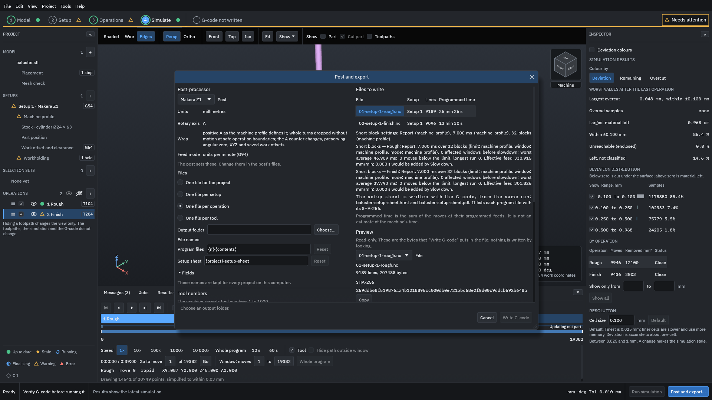
Close the dialog with the × at its top right: nothing is written until you choose a folder and click Write G-code.
2. Set the scallop height instead
Scallop height sets the largest ridge you will accept, and the program works out the spacing from it. “The pitch is the smaller of this and the stepover allows”, so it only ever makes the passes closer, never further apart.
- Click Operations at the top, then 2 Finish.
- Leave Stepover at
0.9, and set Scallop height to0.01.

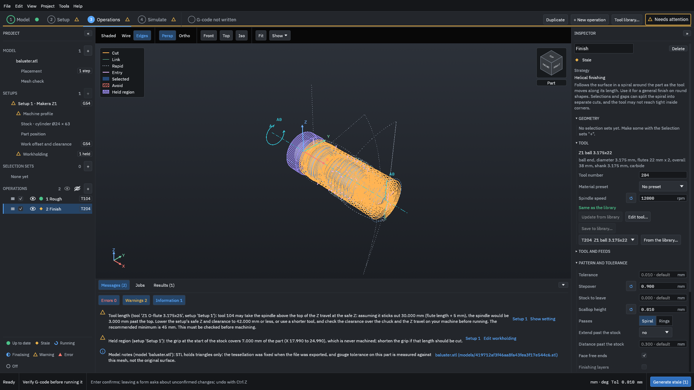
- Generate, and open Post and export… again.

Read the result: stepover
| Finish set to | Spacing between passes | Scallop height (worked out) | Finish programmed time |
|---|---|---|---|
| Stepover 0.9 mm | 0.9 mm | 0.065 mm | 13 min 30 s |
| Stepover 0.453571 mm (the tutorial’s) | 0.4536 mm | 0.016 mm | 24 min 57 s |
| Scallop height 0.01 mm | about 0.356 mm | 0.010 mm | 31 min 13 s |
| Stepover 0.2 mm | 0.2 mm | 0.003 mm | 53 min 53 s |
The roughing is 25 min 26 s in every row.
- Halving the stepover roughly doubles the time, and divides the scallop height by about four: the height grows with the square of the stepover.
- A scallop of 0.065 mm is easy to feel and to see on a finished surface; one of 0.003 mm is hard to see. Choose the largest stepover that leaves a surface you can accept, then sand or polish the rest if the part needs it.
- On curved and steep parts of the surface the real ridge differs from the formula. Adaptive spacing, in the same section, measures the material left between passes and adds passes where it is more than its Allowed excess.
The simulation cannot measure ridges this small at its default cell of 0.1 mm: “Deviation is accurate to about one cell”. It does show the overall effect. In the Simulate step, the share of the surface Within ±0.100 mm rose from 85.4 % with the 0.9 mm stepover to 92.8 % with the 0.01 mm scallop height. The finest cell, 0.025 mm, takes “About 64.0 times the time and 16.0 times the memory of the default”, too slow for this comparison.
Read the result: stock to leave
The roughing leaves Stock to leave on the part so that the finishing tool has an even, light cut. The tutorial’s roughing leaves 0.3 mm. With the same project, changing the roughing’s Stock to leave to 1.0 gives, from openchuck-cli simulate:
| Roughing stock to leave | Roughing removes | Finish removes | Most material left |
|---|---|---|---|
| 0.3 mm (the tutorial’s) | 12,099.6 mm³ | 2,110.4 mm³ | 0.924 mm |
| 1.0 mm | 9,445.4 mm³ | 4,703.1 mm³ | 0.924 mm |
With 1 mm left, the finish removes more than twice as much, with the same ball and the same stepover: a heavier cut for a small tool, and more load where the ball cuts with its tip. The part ends the same: the most material left, 0.924 mm, is at the collar next to the chuck’s grip in both, where neither tool reaches.
A new rotary roughing operation starts with a stock to leave of a tenth of its tool’s diameter, rounded to 0.05 mm and kept between 0.1 and 1 mm: 0.3 mm for this 3.175 mm tool. A selection set can have its own stock to leave; the roughing then leaves the largest of the operation’s and its sets’ values, and says which set gave it.
Common mistakes
- Setting a small stepover to get a fine finish, then finding the job takes hours
- Look at the programmed time in Post and export… before you choose. Work out the scallop height you need first.
- A Scallop height that does nothing
- If the stepover already gives a smaller ridge than the scallop height you set, the stepover wins. The scallop height only makes passes closer.
- Stock to leave on the finishing operation
- The finish cuts to the model plus its own stock to leave. Leave the finish’s Stock to leave at 0 unless a later operation will cut that material.
- Too much stock left for the finish
- The finish’s tool must take what the roughing leaves in one pass. If you leave more, use Finishing layers (The flute-length warning shows them) or a semi-finishing operation.
Related: Rest machining, Operations and strategies.
Selection sets on a blisk
This example makes the five kinds of selection set the program uses on a STEP part, and uses them in two operations on a bladed disk (a blisk): a face set to cut, an edge set as the guide of face-flow finishing, a check set, an avoid set that cuts the pass short, and an avoid set that only warns. It shows what each one changes in the toolpath and what the Results say about it, with the numbers from a real run.
Warning
A selection set changes where the tool cuts and what it is kept away from, but the program checks only what the set names and what the messages say was checked. Generated G-code must be verified by you before it is run on a machine: watch the simulation, read every warning, and run an air cut first.
You need the example project testdata/examples/blisk-start/blisk-project. Copy it to a folder of your own and open the copy with File > Open project, so the example in the repository stays as it is. It holds the public blisk model (a STEP file), the built-in Makera Z1, oak stock 42 mm across, a 3 mm flat end mill (T1) and a 3 mm ball end mill (T2), and no sets or operations yet. Reading a STEP file needs the STEP reader that comes with the program (Import a STEP file).
The numbers on this page come from OpenChuckCAM 0.55.0 on Linux (main at 55e6348). Another version can give other numbers.
What the sets are for
A selection set is a named group of faces or edges of the part. An operation uses a set in a role:
| Role in the operation | What it does |
|---|---|
| Cut on | The faces the operation cuts. With face-flow finishing and swarf, the operation cuts only these faces. |
| Guide edge | Face-flow finishing only: the edge each pass runs along. Empty, each face starts from its longest side. |
| Avoid | Faces the tool must not cut into. Each set has a choice: Cut short (the default) stops or lifts the pass, Warn only keeps the path and warns, Ignore limits nothing. |
| Check | Faces the tool must stay clear of by the operation’s stock to leave, with the same three choices. |
| Contain within | A window the cut must stay inside. Not used in this example. |
On a STEP part, these roles take face sets, except Guide edge, which takes an edge set. (Edge following, not used here, cuts along an edge set in Cut on.) The same set can have a different role in each operation.
1. Make a face set: the hub floor
- Click Operations at the top of the window.
- Click Front, then Fit, and zoom in with the mouse wheel until the blisk fills the view.
- In the project panel, click the + beside Selection sets. The Inspector shows New selection.
- In the box on the view, choose Faces and Select one (Q).
- Click the floor between the two blades in the middle of the view. The face turns blue and the Inspector says “1 face selected”.

- Type
Hub floorin the name field and press Enter. - Click Save as new set. The set appears in the project panel, and the Inspector shows the set itself.

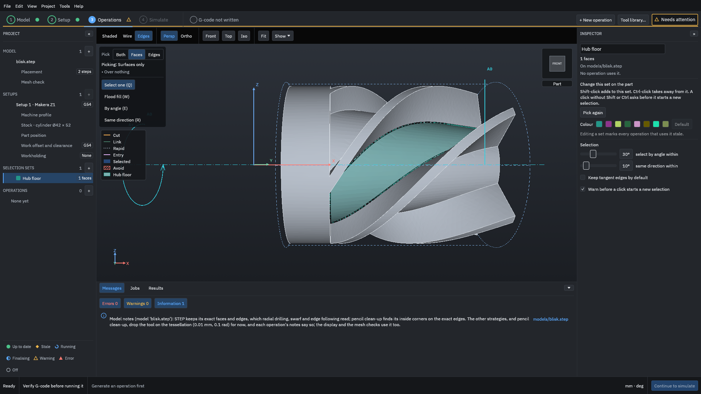
- Press Esc to stop picking.
This floor is face 20 of the model. The Results name faces by number, so it helps to know it.
2. Make an edge set: the guide
- Click the + beside Selection sets again.
- In the box on the view, choose Edges and Select one (Q).
- Move the pointer onto the line where the blade above the floor meets the floor. The box says “Over an edge” and the edge is drawn in colour. Click it.
- Name the set
Floor guideand click Save as new set, then press Esc.

3. Make two more face sets
In the same way, make two more face sets with Faces and Select one (Q):
| Name | Click | What it is |
|---|---|---|
Blade wall | the side of the blade above the floor | face 19, the blade side that rises from the guide edge |
Rim | the plain round part of the disc at the left | face 1, the outer cylinder: the rim of the disc and the tips of the blades |

4. Use the face set, the edge set and a check set
Face-flow finishing cuts the faces in Cut on with passes that run along a guide edge (Face-flow finishing on a blisk floor goes through it in detail).
- Click + New operation. Choose Face flow finishing, tool 3 mm ball, name it
Floor finish, and click Add. - In the Inspector, under Geometry, open the list beside Cut on and choose Hub floor.
- Open the list beside Guide edge and choose Floor guide. This list offers only edge sets.
- Open the list beside Check and choose Blade wall. Leave its choice on Cut short.
- Scroll down to Pattern and tolerance and set Stock to leave to
0.2mm.

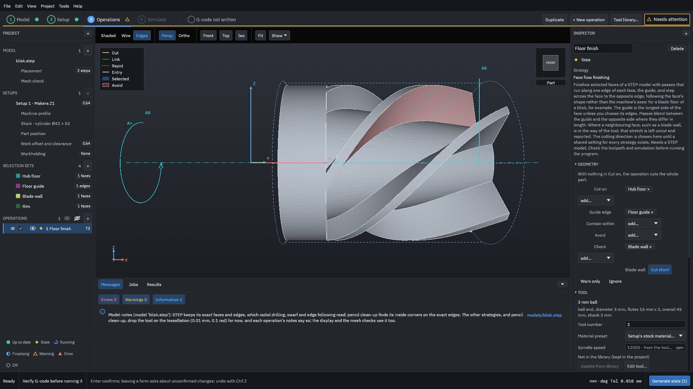
A check set keeps the tool the operation’s stock to leave away from its faces. Here the tool stays 0.2 mm clear of the blade wall, and leaves 0.2 mm on the floor too, since the stock to leave is the operation’s.
- Click Generate stale at the bottom right. It took about 30 s on the test computer.

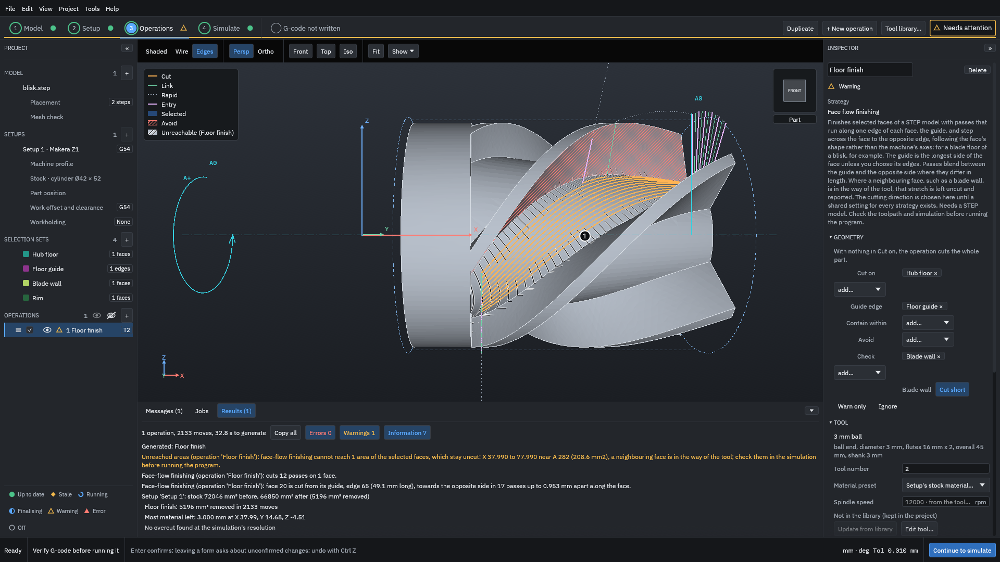
The Results say:
- “face 20 is cut from its guide, edge 65 (49.1 mm long), towards the opposite side in 17 passes up to 0.953 mm apart along the face”. The guide is the edge of the edge set.
- “face-flow finishing cannot reach 1 area of the selected faces, which stay uncut: X 37.990 to 77.990 near A 282 (208.6 mm2), a neighbouring face is in the way of the tool”.
- “Floor finish: 5196 mm³ removed in 2133 moves”.
Without the check set and with no stock to leave, the same floor reported 173.8 mm2 unreached: the tool kept 0.2 mm from every face reaches less of the floor.
5. Use the same sets the other way round: swarf with avoid sets
Swarf cuts a wall with the side of the tool (Swarf on a blisk blade goes through it in detail). Here the blade wall is the face to cut, and the hub floor, which the face-flow operation cut, is a face to keep off.
- Click + New operation. Choose Swarf (flank) machining, tool 3 mm flat end mill, name it
Blade wall swarf, and click Add. - Beside Cut on, choose Blade wall.
- Click Generate stale.

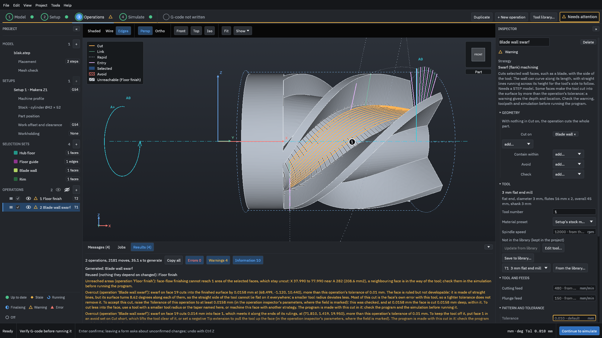
With only Cut on, the Results warn that the tool reaches the faces beside the wall:
- “Overcut (operation ‘Blade wall swarf’): swarf on face 19 cuts 0.023 mm into face 20, which meets it along the ends of its rulings, at (75.583, 1.020, 9.305), more than this operation’s tolerance of 0.01 mm. To keep the tool off it, put face 20 in an avoid set on Cut short, which lifts the tool clear of it, or set a negative Tip extension …”
- The same for face 1, the rim: 0.014 mm.
Now add the avoid sets:
- Beside Avoid, choose Hub floor. Leave it on Cut short.
- Open the add… list under it and choose Rim. Under Rim, click Warn only.

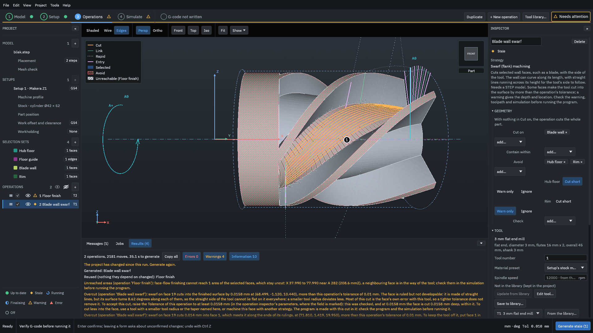
- Click Generate stale.

Read the result
Compare the swarf operation’s lines before and after the avoid sets:
| Before (Figure 7) | After (Figure 9) | |
|---|---|---|
| Hub floor (face 20) | “cuts 0.023 mm into face 20” (a warning) | “The tool is lifted up to 0.069 mm along the rulings to keep clear of the avoid surfaces, so a strip up to about 0.069 mm wide is left at that end of the face.” |
| Rim (face 1) | “cuts 0.014 mm into face 1” (a warning) | “Avoid set (operation ‘Blade wall swarf’): the tool cuts into the avoid set ‘Rim’ along about 18.120 mm of face 19. The set only warns, so the path is kept: set it to cut the pass short, or check the cut in the simulation before using the path.” |
| Ends of the wall | stops 0.471 mm short of face 5 and 0.833 mm short of face 15 | 0.470 mm and 0.833 mm |
| Moves of the swarf | 48 | 50 |
What it means:
- Cut short on the floor lifted the tool’s end up the wall by up to 0.069 mm, so it no longer cuts the floor. A strip that wide is left uncut at the foot of the wall, on purpose.
- Warn only on the rim changed nothing in the path. It measures the path against the set and tells you how much of the wall’s length the tool reaches into it. The warning names the set by its name, so you can find it.
- Reused (nothing they depend on changed): Floor finish says the face-flow operation was not made again. Changing the swarf’s sets does not touch it, although the two operations share sets.
- A face that is in no set is still measured if it shares an edge with the swarf’s wall, and a cut into it is warned of (the “Before” column). Swarf also stops short of the faces at the ends of the wall by itself; Swarf on a blisk blade explains those lines.
The face-flow operation’s line about the unreached area is still there, and so is a swarf warning that the twisted wall itself is cut 0.0156 mm deep, more than the 0.01 mm tolerance. Read each warning and decide what to change: these are yours to judge.
Common mistakes
- A face set leaves a wall or a floor out
- An operation cuts only the faces in Cut on, but its tool still reaches the faces next to them. With nothing in Avoid, the swarf above warns “swarf on face 19 cuts 0.023 mm into face 20, which meets it along the ends of its rulings … put face 20 in an avoid set on Cut short, which lifts the tool clear of it, or set a negative Tip extension”. Put the face it names in an avoid or check set, as in step 5. For face-flow finishing, a face beside the floor that is in the way shows as the unreached area; cut that face with another operation, such as swarf for a wall.
- A selection reaches a held region
- In this project nothing is held. If you click Workholding under Setup 1, tick Held at the start, keep the Grip length of 10 mm and click Apply, the setup says “The chuck grips 9.000 mm of the part here (X 27.990 to 36.990 mm), so that length is never machined. Shorten the grip if it should be cut.”, and Messages repeat it: “The grip at the start of the stock covers 9.000 mm of the part (X 27.990 to 36.990), which is never machined; shorten the grip if that length should be cut.” The Rim set reaches into that length. An operation on it does not cut there, and its Results say “Nothing within one tool radius of the held region at the start of the stock is cut: no part of the tool reaches over the gripped length of the stock.” A set does not override a held region. Shorten the grip or move the part if that length must be cut.
- A set of the wrong kind
- Lists such as Cut on of swarf and Avoid offer every set, edge sets too. An edge set where faces are needed is refused before anything is made. In Cut on of swarf: “Only edge following follows chosen edges, and face-flow finishing takes them as its guide. Take the edge set ‘Floor guide’ out of the operation, or use one of those.” In Avoid: “Avoid takes faces, not edges, on a STEP part. Take the edge set ‘Floor guide’ out of Avoid, and select faces instead.” Click the × on the set to take it out.

- Face-flow finishing with nothing in Cut on
- It is refused: “Selection set (operation ‘Floor finish’): face-flow finishing needs a face set: select the faces to cut, save them as a set and put it in Cut on; an edge set there is the guide.” Make a face set of the faces to cut and choose it beside Cut on.
- Editing a set changes more than one operation
- A set is shared. Shift-click or Ctrl-click on a chosen set changes it at once and makes every operation that uses it out of date, as its Inspector says. Make a new set if only one operation should change.
Face-flow finishing on a blisk floor
This example finishes one hub floor of a bladed disk (a blisk) with face-flow finishing: passes that run along one edge of the face, the guide, and step across it to the opposite side, following the face rather than the machine’s axes. It sets the spacing first by stepover and then by scallop height, chooses the guide with an edge set, and shows what the Results mean by an area the tool “cannot reach”, with the numbers from a real run.
Warning
Face-flow finishing leaves out what it cannot reach and says so, but it checks only what its notes and warnings name. Generated G-code must be verified by you before it is run on a machine: watch the simulation, read every warning, and run an air cut first.
You need the example project testdata/examples/blisk-start/blisk-project. Copy it to a folder of your own and open the copy with File > Open project. Face-flow finishing needs a STEP part: it works on the model’s exact faces, so it cannot be used on a mesh part. The numbers on this page come from OpenChuckCAM 0.55.0 on Linux (main at 55e6348).
1. Make the sets
Make a face set and an edge set as in steps 1 and 2 of Selection sets on a blisk:
Hub floor: the floor between the two blades in the middle of the front view (face 20);Floor guide: the edge where the blade above that floor meets it (edge 65).
The edge set is optional: without it, each face starts from its longest side. It is made here so you can choose it in step 4.
2. Add the operation
- Click + New operation. Choose Face flow finishing. Its description says what it does and that it needs a STEP model.
- Choose the tool 3 mm ball, name the operation
Floor finish, and click Add. - In the Inspector, under Geometry, choose Hub floor beside Cut on. Leave Guide edge empty for now.

- Click Generate stale at the bottom right. It took about 35 s on the test computer.

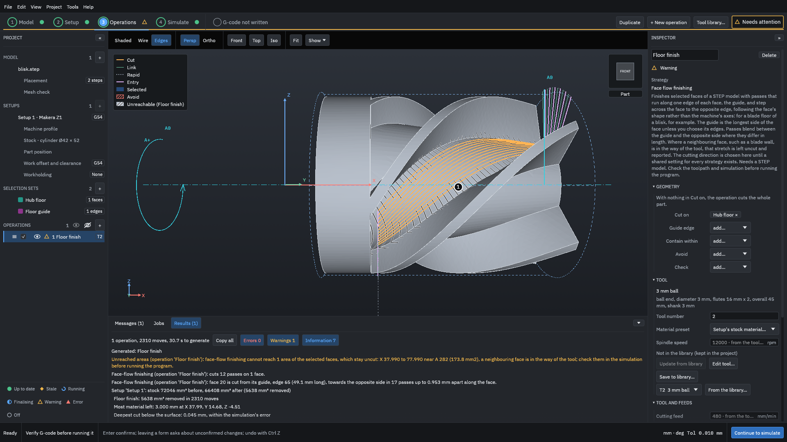
Read the result
The Results list three lines for the operation:
- “Face-flow finishing (operation ‘Floor finish’): face 20 is cut from its guide, edge 65 (49.1 mm long), towards the opposite side in 17 passes up to 0.953 mm apart along the face”
- The guide is the floor’s longest side, the root of the blade above it. The 17 passes are laid out across the floor, never more than the 1.000 mm Stepover apart, measured along the face.
- “Face-flow finishing (operation ‘Floor finish’): cuts 12 passes on 1 face”
- The passes that are cut, after the stretches the tool cannot reach are left out. A pass that lies wholly in that area is not cut.
- “Unreached areas (operation ‘Floor finish’): face-flow finishing cannot reach 1 area of the selected faces, which stay uncut: X 37.990 to 77.990 near A 282 (173.8 mm2), a neighbouring face is in the way of the tool; check them in the simulation before running the program”
- The floor is a narrow strip between two blade walls, and a 3 mm ball cannot reach into the corners where the floor meets them without touching a wall. That strip, along the whole floor from X 37.99 to X 77.99, is not cut and is drawn hatched in the view, labelled Unreachable (Floor finish) in the legend: black diagonal lines in a white casing, painted on the surface, so they turn and stretch with it as you orbit and zoom. “A neighbouring face is in the way” means a blade wall, not the stock. The same line appears under Messages, with a link to the operation.
How much is that? When face-flow finishing was built, the five floors of this blisk were measured: the same on all five, 171.6 mm2 of the 496.3 mm2 floor (35 %) out of reach of the 3 mm ball, all of it along the blade walls, and 118.4 mm2 (24 %) with a 2 mm ball. This run reports 173.8 mm2 at its own stepover. Whether a smaller tool, a different tool, or leaving the strip suits your part is your call; the program does not choose for you, and it has no strategy yet that finishes the strip with a second tool.
The setup’s totals say “Floor finish: 5638 mm³ removed in 2310 moves”. The stock is not roughed in this example, so most of that is stock above the floor, not finishing allowance.
3. Set a scallop height instead
A scallop height sets the spacing by the ridge a ball leaves between passes, instead of by distance.
- Scroll the Inspector down to Pattern and tolerance.
- Set Scallop height to
0.02mm and press Enter. Stepover stays 1.000 mm; the scallop height makes the passes closer where it needs to. - Click Generate stale.


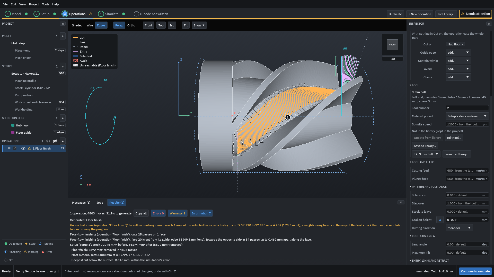
| Stepover 1 mm | Scallop height 0.02 mm | |
|---|---|---|
| Passes laid out | 17, up to 0.953 mm apart | 34, up to 0.462 mm apart |
| Passes cut | 12 | 25 |
| Unreached area | 173.8 mm2 | 170.3 mm2 |
| Moves | 2310 | 4803 |
| Time to generate | 30.7 s | 31.9 s |
Closer passes take longer to cut and leave smaller ridges. They do not get the ball into the corners: the unreached area hardly changes.
4. Choose the guide
- Scroll the Inspector back to Geometry.
- Beside Guide edge, choose Floor guide. The list offers only edge sets.
- Click Generate stale.

The Results line names the guide, “edge 65 (49.1 mm long)”, whichever way it was chosen. Choose a guide when the longest side is not the direction you want the passes to run, for example along a shorter edge of a face whose sides are nearly the same length. The edges in the set must lie on the boundary of a face in Cut on and join end to end. The program does not yet draw the guide on the part; read it from the Results.
Common mistakes
- Nothing in Cut on
- Face-flow finishing does not cut the whole part. It is refused: “Selection set (operation ‘Floor finish’): face-flow finishing needs a face set: select the faces to cut, save them as a set and put it in Cut on; an edge set there is the guide.” Make a face set of the faces to cut and choose it beside Cut on.
- An edge set in Avoid or Check
- Those roles take faces. It is refused: “Avoid takes faces, not edges, on a STEP part. Take the edge set ‘Floor guide’ out of Avoid, and select faces instead.” Put the edge set in Guide edge.
- Reading the unreached area as material left by mistake
- The strip along the walls is left because the ball does not fit, not because a setting is wrong. A smaller stepover or scallop height does not shrink it (see the table). A smaller ball reaches more of it (24 % unreached with a 2 mm ball against 35 % with 3 mm, as measured when face-flow finishing was built); the walls themselves are cut by another strategy, such as swarf.
- Expecting the passes to stay on the floor near the walls
- The tool is placed on the whole part, so where a blade wall is in the way the stretch is left out rather than cut into the wall. Check in the simulation that what is left out is what you expect.
- Leaving stock to leave on and adding a check set
- Both keep the tool further from the walls, so less of the floor is reached. In Selection sets on a blisk, the same floor with a check set on the blade wall and 0.2 mm stock to leave reported 208.6 mm2 unreached.
Swarf on a blisk blade
This example cuts one side of one blade of a bladed disk (a blisk) with swarf, first with a flat end mill and then with a ball end mill. It shows how the pass stops short of the faces at the ends of the blade, what the warnings about the faces beside the blade mean, and what to change: an avoid set that lifts the tool off the floor, or a negative tip extension. The numbers come from a real run and match those measured when this behaviour was built.
Warning
Swarf checks the faces that share an edge with the blade, and only against the cutting part of the tool: not the shank, the holder or the rest of the part. Generated G-code must be verified by you before it is run on a machine: watch the simulation, read every warning, and run an air cut first.
You need the example project testdata/examples/blisk-start/blisk-project. Copy it to a folder of your own and open the copy with File > Open project. Swarf needs a STEP part. The numbers on this page come from OpenChuckCAM 0.55.0 on Linux (main at 55e6348).
How swarf cuts a blade
The side of a blade is a ruled face: it is made of straight lines, its rulings, that run from the floor up to the tip. Swarf lays the side of the tool along each ruling in turn and moves along the blade, so one pass cuts the whole height. The blade meets other faces:
- at its ends: the wall of the disc at X = 37.99 (face 5 here) and the end plane at X = 77.99 (face 15);
- along the ends of its rulings: the hub floor at the bottom (face 20) and the outer cylinder at the tip (face 1).
1. Make the sets
Make two face sets as in step 1 of Selection sets on a blisk:
Blade wall: the side of the blade above the floor in the middle of the front view (face 19);Hub floor: that floor (face 20). It is used in step 4.
2. Swarf with a flat end mill
- Click + New operation. Choose Swarf (flank) machining, the tool 3 mm flat end mill, name it
Blade swarf, and click Add. - Beside Cut on, choose Blade wall.

- Click Generate stale. It took about 30 s on the test computer.

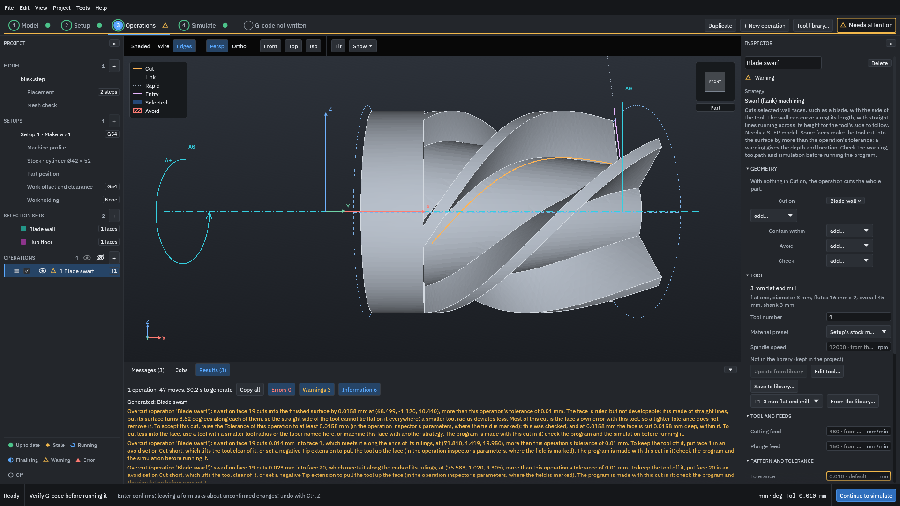
The face’s note, the last swarf line in the Results, says:
… The tool’s end is level with the end of the rulings at the tip. The pass stops short of face 5, which meets this face at an end, so the tool keeps off it: about 0.471 mm along the face is left uncut there. The pass stops short of face 15, which meets this face at an end, so the tool keeps off it: about 0.833 mm along the face is left uncut there. The faces that share an edge with this face were checked against the tool’s cutting part; the shank, the holder and other faces were not.
This is Keep off the end faces at work. It is on by default: each pass stops short of a face that meets an end of the blade, by the least length that keeps the tool off it. Without it, the side of the tool would run past the end of the blade into the disc wall.
The other two swarf warnings are about the faces along the ends of the rulings:
- “Overcut (operation ‘Blade swarf’): swarf on face 19 cuts 0.023 mm into face 20, which meets it along the ends of its rulings, at (75.583, 1.020, 9.305), more than this operation’s tolerance of 0.01 mm. To keep the tool off it, put face 20 in an avoid set on Cut short, which lifts the tool clear of it, or set a negative Tip extension to pull the tool up the face …”
- The same for face 1, the outer cylinder at the tips: 0.014 mm.
And one is about the blade itself: “Overcut (operation ‘Blade swarf’): swarf on face 19 cuts into the finished surface by 0.0158 mm … The face is ruled but not developable: it is made of straight lines, but its surface turns 8.62 degrees along each of them, so the straight side of the tool cannot lie flat on it everywhere”. The blade twists, so a straight tool cannot follow it exactly. The warning says what you can do: accept it by raising Tolerance to 0.0158 mm, or use a tool with a smaller radius or a taper.
3. Swarf with a ball end mill
- Scroll the Inspector to Tool and choose T2 3 mm ball in the tool list.
- Click Generate stale.

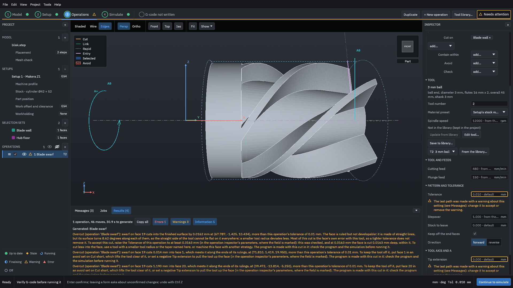
The note now says “The tool’s end reaches 1.500 mm beyond the end of the rulings at the tip (its corner radius and the tip extension), so it cuts into any face that meets them there, such as a floor, unless that face is in an avoid or check set.” The flank of a ball end mill starts at its equator, 1.5 mm above its tip, so the tip goes 1.5 mm past the foot of the blade. The warnings show it:
- “Overcut (operation ‘Blade swarf’): swarf on face 19 cuts 1.190 mm into face 20, which meets it along the ends of its rulings, at (39.472, -13.814, -5.250) …”
- The simulation finds it too: “Overcut: 1.151 mm deepest, at X 73.52, Y -0.84, Z 9.63; 60878 samples beyond 0.10 mm”, counted under Errors.
The pass also stops 2.158 mm short of the end plane (face 15) instead of 0.833 mm, because the ball’s round end needs more room there.
4. Lift the tool off the floor with an avoid set
- Scroll back to Geometry. Beside Avoid, choose Hub floor. Leave it on Cut short.

- Click Generate stale.

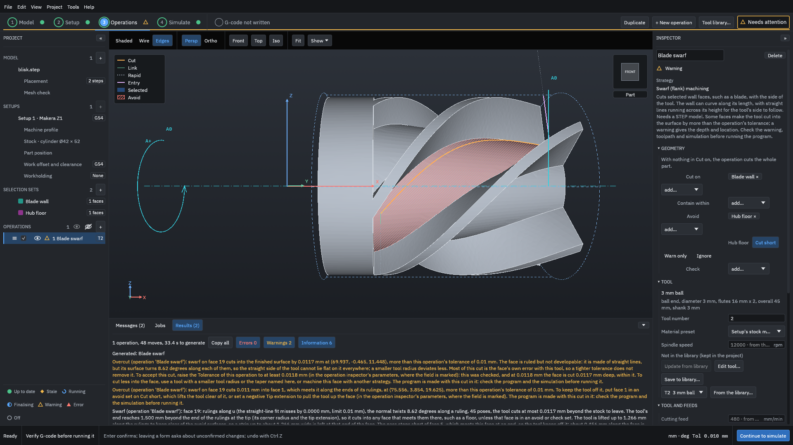
The note says: “The tool is lifted up to 1.266 mm along the rulings to keep clear of the avoid surfaces, so a strip up to about 1.266 mm wide is left at that end of the face.” That strip at the foot of the blade is left on purpose, and is not counted as material left. The simulation’s line is “Deepest cut below the surface: 0.054 mm, within the simulation’s error”.
The note no longer says the pass stops short of face 15. The faces at the ends are measured against the tool as lifted, so a lift can shorten the stop or make it unneeded. It still stops 0.456 mm short of face 5.
The other way to keep the tool off the floor is a negative Tip extension (under Tool axis and A): it starts the flank that far up the blade, along the whole pass, and leaves a strip that wide. The avoid set lifts the tool only as much as each place needs.
5. Keep off the end faces, turned off
To see what the setting does, turn it off:
- Scroll to Pattern and tolerance and clear Keep off the end faces.
- Click Generate stale.

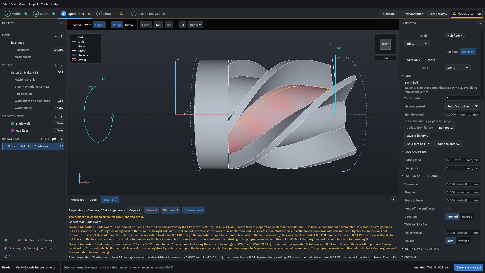

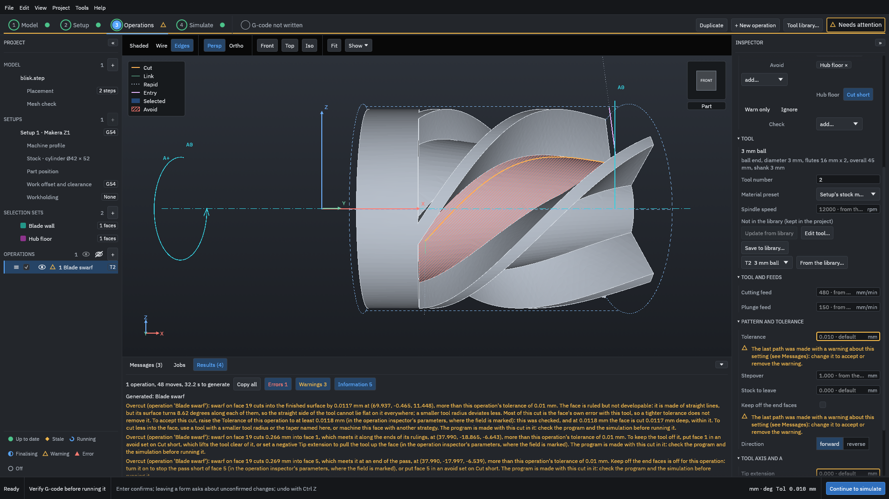
The Results now say: “Overcut (operation ‘Blade swarf’): swarf on face 19 cuts 0.269 mm into face 5, which meets it at an end of the pass, at (37.990, -17.997, -6.539), more than this operation’s tolerance of 0.01 mm. Keep off the end faces is off for this operation: turn it on to stop the pass short of face 5 (in the operation inspector’s parameters, where the field is marked), or put face 5 in an avoid set on Cut short.” The simulation reports “Overcut: 0.300 mm deepest, at X 37.99, Y -16.89, Z -6.30”. Turn the setting back on, unless you mean to cut into that face, for example because it is stock that a later operation removes.
Read the result
| Flat 3 mm | Ball 3 mm | Ball, floor in Avoid | Ball, floor in Avoid, Keep off the end faces off | |
|---|---|---|---|---|
| Stops short of face 5 (disc wall) | 0.471 mm | 0.471 mm | 0.456 mm | no: cuts it 0.269 mm |
| Stops short of face 15 (end plane) | 0.833 mm | 2.158 mm | not needed | not needed |
| Cut into face 20 (floor), warned | 0.023 mm | 1.190 mm | lifted up to 1.266 mm | lifted up to 1.266 mm |
| Cut into face 1 (outer cylinder), warned | 0.014 mm | 0.014 mm | 0.011 mm | 0.266 mm |
| Moves | 47 | 46 | 48 | 48 |
These are the same numbers that were measured on this blade when the stop at the ends was built: 0.471 mm and 0.833 mm with a 3 mm flat end mill, 0.471 mm and 2.157 mm with a 3 mm ball, and the floor cut by 0.023 mm and 1.190 mm (on blade 7). Other blades of this blisk twist into the disc wall more, and there the pass stops much further short: 6.935 mm with a 3 mm flat end mill on blade 9.
How to read the lines:
- “stops short of face N … about X mm along the face is left uncut there”: the end of the blade is left on purpose, to keep the tool off a face at the end. Finish it another way if it matters.
- “cuts X mm into face N, which meets it along the ends of its rulings”: the floor or the tip cylinder is cut. Put that face in an avoid set on Cut short, or use a negative Tip extension.
- “cuts X mm into face N, which meets it at an end of the pass”: only with Keep off the end faces off.
- “The faces that share an edge with this face were checked against the tool’s cutting part; the shank, the holder and other faces were not.” Faces that do not touch the blade, such as the next blade, are not checked. Check the simulation for those.
Common mistakes
- A ball end mill on a blade that stands on a floor
- The round end goes below the foot of the blade by its radius: “Overcut (operation ‘Blade swarf’): swarf on face 19 cuts 1.190 mm into face 20”. Put the floor in an avoid set on Cut short (step 4), or use a flat end mill.
- Putting the floor in an avoid set on Warn only
- The path is kept as it is and the cut is only reported. Use Cut short to lift the tool.
- Turning Keep off the end faces off to cut the whole blade
- The tool then cuts the face at the end: “Overcut (operation ‘Blade swarf’): swarf on face 19 cuts 0.269 mm into face 5, which meets it at an end of the pass”. Leave it on unless that face is meant to be cut.
- Raising the tolerance to remove the “not developable” warning without reading it
- The warning gives the depth (0.0158 mm here) and checks the value it proposes. A larger tolerance accepts that cut into the blade; it does not make the tool follow the twist better. A tool with a smaller radius does.
- An edge set in Cut on
- Swarf cuts faces. It is refused: “Only edge following follows chosen edges, and face-flow finishing takes them as its guide. Take the edge set ‘Floor guide’ out of the operation, or use one of those.” See Selection sets on a blisk.
Simultaneous finishing
This example finishes a part whose section does not surround the rotary axis: a small crankshaft with pins set 10 mm off the axis. You add a roughing operation and a Simultaneous 4-axis finishing operation, read what the program says about the off-axis pins and the surfaces it cannot see straight on, and then try the two limits that set how the tool leans: Lead angle and Largest tilt.
Warning
In simultaneous finishing the part turns while the tool moves, so the tool can come close to the part, the chuck and the stock from directions you do not expect. The program checks gouging against the part, but it does not check the tool holder, and it does not prove that nothing collides. Watch the whole path in the simulation and run an air cut first. Generated G-code must be verified by you before it is run on a machine.
You need the example project testdata/examples/crankshaft-simultaneous/crankshaft-project. Copy it to a folder of your own and open the copy with File > Open project. Its part is the public model testdata/step/valid/crankshaft.step, and the program needs its STEP reader to open it (Install). The numbers on this page come from that project on the build named in the figures’ record; your own part gives other numbers.
When to use simultaneous finishing
Most finishing strategies keep the tool pointing at the rotary axis. That works on parts that are round in section, such as the tutorial’s baluster. Simultaneous 4-axis finishing instead turns A so that the tool follows the surface’s normal as it moves. Use it when:
- the part’s section does not surround the rotary axis, such as an off-axis pin, a cam or a lobe;
- surfaces face each other or face sideways, so that a tool pointing at the axis would meet them at a steep angle or not at all.
On a part that is round in section, start with Helical finishing: it is simpler to check.
1. Look at the part
The project opens on the Setup step. The side view shows the crank: the pins at X = 17.99 to 27.99 and 47.99 to 57.99 sit above the axis and the pin at X = 32.99 to 42.99 below it (the example project places the part 17.99 mm from the headstock face).

The project already has the setup (a 38 mm hardwood bar, gripped for 6 mm) and the two tools; you add the operations.
2. Add the operations
- Click Operations at the top.
- Click + New operation, keep Rotary roughing, choose the tool Z1 O-flute 3.175x25, name it
Rough, and click Add. - In the Inspector, set Stepdown to
1. - Click + New operation again. Under Strategy, choose Simultaneous 4-axis finishing, choose the tool Z1 ball 3.175x22, and name it
Finish.

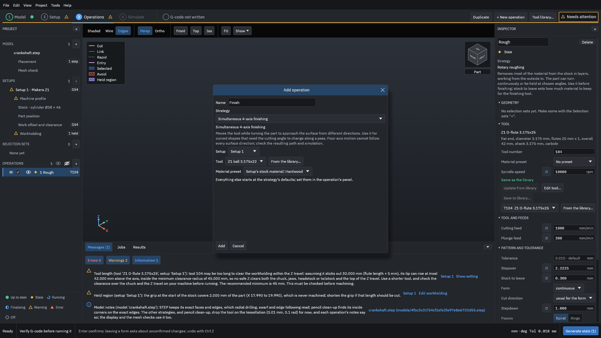
- Click Add.
3. Generate and read the notes
- Click the eye beside 1 Rough to hide its path, so the view shows the finish only.
- Click Generate. On the build these screens were taken with, both operations took about 90 seconds.
- Click Iso above the view, then Results under it. The notes are listed under Information.

The finish gives these notes and two warnings. Figure 3 shows the warnings; the notes are under Information. Read them before you look at the simulation.
- The off-axis pins
- “the part’s section does not surround the rotary axis at X 22.078 to 27.950, X 32.998 to 42.943, X 47.991 to 57.936, so the path there goes round the section’s own centre: the tool moves across the axis as A turns, to stay on the surface normal”. Over each pin, Y and Z change as A turns, so the machine moves on all four axes at once.
- How far the tool leans
- “A is smoothed within 10 degrees of the normal; the largest tilt used is 1.3 degrees from that”. The tool is allowed to lean up to Largest tilt away from the normal so that A turns smoothly; here it needed only 1.3°.
- Surfaces it cannot see straight on
- “surfaces hidden from the drive (such as the walls of a slot, an undercut, or sides of the section facing each other) between X 28.150 and 47.941 are finished with passes of their own after the main ones, the tool leaning from the surface normal as little as the part lets it reach them: up to 2.2 degrees (at X 28.150, A 118.471); the tool above its flutes is taken as no wider than its cutting part”. The webs between the pins face each other, so they get passes of their own. A warning of its own goes with it, “Tool holder (operation ‘Finish’)”: “the tool holder is not checked on the passes that finish the surfaces hidden from the drive between X 28.150 and 47.941, where the tool leans up to 2.2 degrees”. Check the holder’s clearance yourself where the tool leans.
- Inside corners, a warning
- “Inside corners (operation ‘Finish’): at X 27.990, 32.990, 42.990 and 47.990 faces across the rotary axis meet a section that does not surround the axis in an inside corner: where a corner is sharper than the tool’s radius, this tool’s round end (radius 1.587 mm) leaves up to about 0.66 mm across it; a flat end can finish them”. A ball cannot cut a sharp inside corner; plan another operation if those corners matter.
The finish also says that it drops the tool on “the STEP part’s exact faces, to within 0.0001 mm”, while the roughing uses the tessellation.
4. The lead and tilt limits
Scroll the Inspector down to Tool axis and A.

- Lead angle
- Leans the tool from the normal towards the way the path travels round the axis, between -30° and 30°. With a ball, a lead keeps the ball’s centre, where it barely cuts, off the surface. The default is 0.
- Largest tilt
- How far the tool may lean away from the normal, plus the lead, so that A turns smoothly with fewer reversals. 0 follows the normal exactly. A larger value gives a smoother A, but cuts with more of the tool’s side, which changes the finish for flat, bull-nose and V tools. The default is 10°.
- Largest angle step
- The largest change of A between two points of the path. The default is 5°.
- A limit, between 0° and 90° (the default is 90°), on how far the tool may lean from the normal to reach a hidden surface. Read what it did in the note about surfaces hidden from the drive, which gives the largest lean used. On the build these screens were taken with, setting it to 0 did not change this example’s path; that is under review (#619).
Now give the finish a lead:
- Set Lead angle to
10and press Enter. - Click Generate.

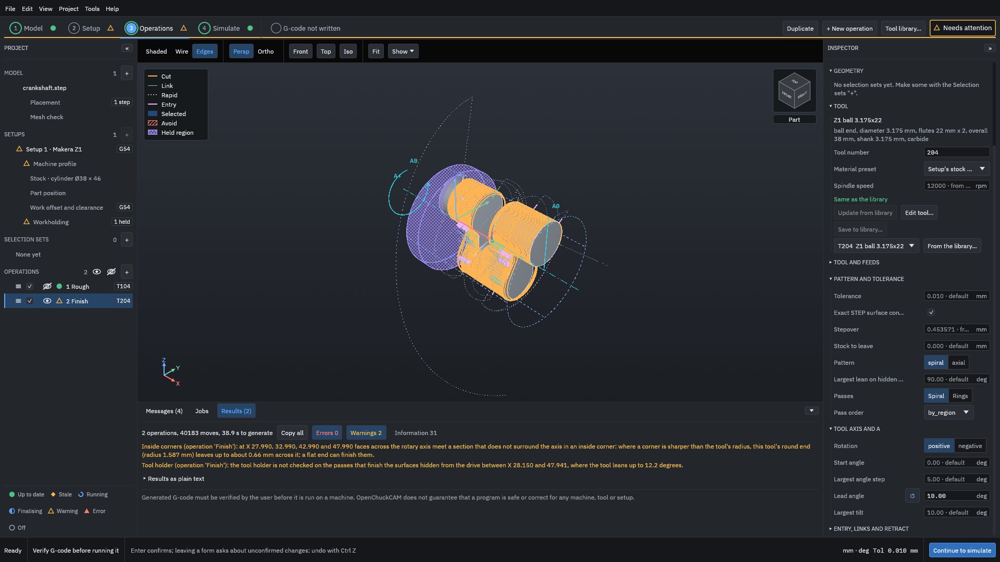
The note under Information now reads “A is smoothed within 10 degrees of the normal plus the 10 degree lead; the largest tilt used is 1.3 degrees from that”, and the tool holder warning says the tool leans “up to 12.2 degrees” on the hidden surfaces, because the lead adds to the lean. The path is much the same; what changes is the angle at which the ball meets the wood.
5. A lead needs the spiral pattern
A can only lean the tool round the axis. Axial passes travel along the axis, so a lead cannot apply to them:
- Next to Pattern, click axial, leaving Lead angle at 10.
- Click Generate.

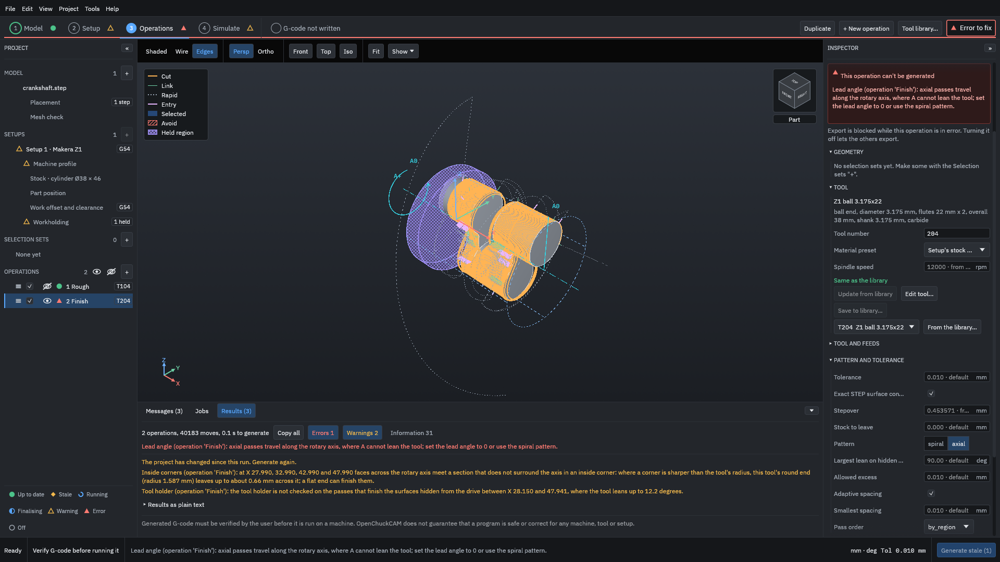
The operation is not generated, and the export is blocked until it is fixed. Set Lead angle back to 0, or click spiral again.
Read the result
| Finish | Moves, both operations | Largest tilt used | Lean on hidden surfaces |
|---|---|---|---|
| Defaults (lead 0, tilt 10) | 40,284 | 1.3° | up to 2.2° |
| Lead angle 10 | 40,183 | 1.3° from the normal plus the lead | up to 12.2° |
| Pattern axial, Lead angle 10 | not generated |
With the defaults the simulation leaves “Most material left: 2.000 mm at X 57.99”, at the free end of the last pin, where the stock reaches past the part. The finish removes 1,357 mm³ after the roughing’s 34,227 mm³.
Over the pins the machine moves Y and Z while A turns. Before you run it, play the finish in the Simulate step and watch the tool over each pin: the program tells you how far the tool leaned, but only the simulation and an air cut show you what the machine does.
Common mistakes
- “axial passes travel along the rotary axis, where A cannot lean the tool; set the lead angle to 0 or use the spiral pattern”
- A lead needs the spiral pattern.
- A large Largest tilt with a flat or bull-nose tool
- The tool cuts with more of its side, and the surface finish changes. Keep it small, or use a ball.
- “… the tool holder is not checked”
- The program checks the tool’s cutting part and takes the tool above its flutes as no wider; it does not know the holder. Check the clearance round the pins yourself.
- Expecting the inside corners to be sharp
- “this tool’s round end (radius 1.587 mm) leaves up to about 0.66 mm across it; a flat end can finish them”. Add an operation with a flat end mill for the corners, if they matter.
Related: Finishing strategies, Rotary machining.
Checking G-code before you run it
Warning
Generated G-code must be verified by you before it is run on a machine. OpenChuckCAM does not guarantee that a program is safe or correct for any machine, tool or setup. A program that looks right in the simulation can still damage your machine, your tool or you.
The program knows only what you told it: the model, the stock, the machine profile and the tools. It does not know your actual machine, your fixture, the tool you fitted or how far it sticks out. This page lists what to check, in the order you meet it.
In the program
- Read every message the program shows in the Setup, Operations and Simulate steps. A warning there is often the first sign that a setting does not match your job.
- Check the machine values marked unconfirmed. The checks the program makes, such as whether a move stays inside the machine’s travel, are only as good as these values. See Confirm machine profile values.
- Watch the whole simulation. Look for cuts into the held region, passes that leave the part, and places where the deviation colours show the cutter going too deep.
The simulation shows what the toolpath removes from the stock. It does not model your chuck, a tailstock, the tool holder or the machine, so it cannot show a collision with any of them.
In the G-code file
Open the program in a text editor, or in the preview of the export dialog, and read it, at least to the first cut and the end.
| Check | What to look for |
|---|---|
| Header comment | The project, setup, post and software version you expect. |
| Units | Millimetres (G21). |
| Work offset | The work offset your machine is set up with (normally G54), with its zero where the program expects it: on the rotary axis, at the part’s X origin. |
| Tools | Each tool number is the tool you will fit, in the order you expect. |
| Safe height | The safe Z clears the chuck, the jaws and the rotary axis assembly along the whole length the program uses. |
| Speeds and feeds | Spindle speeds and feeds suit your tool and material, and stay within your machine’s limits. |
| A moves | The direction of A matches your machine. A program with A reversed carves a mirror image. |
| End of the program | The spindle stops, the cutter retracts, and A is unwound the way your controller expects. |
On the machine
- Run an air cut first: the program with no tool fitted and no material in the chuck, at reduced feed, with your hand near the stop. For the Makera Z1, follow Air cut on the Makera Z1.
- Make the first cut in soft, low-cost material such as wax, foam or tooling board.
- Stay at the machine for the whole run, and stop at any unexpected move, sound or alarm.
The safe-practice checklist puts all of this in one list to tick before each run.
Air cut on the Makera Z1
An air cut runs a program on the machine with no tool fitted and no material in the chuck, at reduced feed. Every move happens in the air, so you can watch the program and stop it before anything can be damaged. Run one for every new program, and again whenever you change the machine profile, the post or the setup.
Note
This page adapts the project’s own air-cut procedure,
docs/z1-air-cut-procedure.md, for any program you make. That document is the authority: where the two differ, follow it, and tell the project.
Warning
Stay at the machine for the whole run, with the emergency stop within reach of your hand. Any move you did not expect, any alarm or any line the controller rejects ends the air cut: stop, and do not go on to a cut.
Before you start
- Complete sections 1 and 2 of the safe-practice checklist.
- Note the controller’s firmware version. The project’s checks of the Makera Z1 were made on firmware 1.1.2 and 1.1.3; on another version, do not assume the machine behaves the same way.
- Measure the height of the rotary axis on your machine with Makera’s 4th-axis Z probing routine, and compare it with the value in the machine profile. If it differs, correct the profile and generate the program again: a wrong axis height moves every Z in the program.
- Set the work offset (G54) with Y0 and Z0 on the centre line of the rotary axis, and X0 at the part’s X origin, at least 10 mm clear of the jaws.
- Remove the tool from the spindle. Leave the chuck empty, or close the jaws on nothing.
- Clear the bed and close the enclosure.
- Put a piece of tape on one jaw, so you can see which way A turns.
Run it
- Open the program and read it: the header names the project, the setup and the software version; the units are millimetres; the safe Z suits the measured axis height.
- Set the feed override to 10 %.
- Start the program and watch the first 20 lines with your hand near the stop. A tool change line (
T1 M6) and a spindle start run as written, with no tool fitted. - Watch A. A positive A move turns the top of the chuck towards the front of the machine.
- Watch the end of the program. After the last cut the program unwinds A with
G92.4 A0 S0: the A reading changes, but A does not move. - If everything matched what you expected, you may run it again at a higher override, in steps (25 %, 50 %, 100 %).
Record it
Write down, for each run: the date, the firmware, the program file, the software version, the override, the axis height you measured, any alarm or rejected line, and whether the motion was what you expected. A photo of a filled-in sheet is enough. Keep the record with the program.
After the air cut
Make the first cut only when the air cut passed. Use soft, low-cost material such as wax, foam or tooling board, and follow section 3 of the safe-practice checklist.
Safe-practice checklist
Work through this list before and after every run on a Makera Z1. Stop at the first item you cannot tick.
Note
This page adapts the project’s checklist for its own machine trials,
docs/z1-safe-practice-checklist.md, which the project owner reviewed as the operator of a Z1. That document is the authority: where the two differ, follow it, and tell the project. Most items apply to any rotary machine, but the values given are for the Z1.
1. Before every session
- I know which program I am about to run, which version of OpenChuckCAM made it, and which post (Makera Z1, not the LinuxCNC post).
- I have read the program, at least every line up to the first cut and the end, and nothing in it surprises me.
- The header comment, the units (mm), the tool numbers and the safe Z match what I expect.
- The machine profile in the project matches the machine: travel, height of the rotary axis, direction of A. The axis height is the value I measured on this machine. It holds for the tool fitted when I measured it (the reference tool): a longer tool raises the spindle at the same work Z.
- I have noted the firmware version.
- I will stay beside the machine for the whole run.
- The emergency stop is within reach of my hand while the program runs.
- The enclosure is closed, and nothing is on the bed or in the machine that should not be.
- I know how to stop the machine (the stop button, feed hold) and what it does when I use each.
2. Air cut (no tool, no material)
- No tool is fitted and no material is held.
- The feed override is at or below 10 % for the first run of each program.
- G54 is set with Y0 and Z0 on the rotary axis, and X0 where the program expects it, clear of the jaws.
- I have checked by hand, at reduced feed or by jogging, that the safe Z clears the chuck, the jaws and the rotary axis assembly over the whole length the program uses, and that, with the longest tool the program uses, the spindle stays within the top of its Z travel at the safe Z.
- I watch the first 20 lines with my hand near the stop.
- A turns the way the post expects: positive A turns the top of the chuck towards the front.
- At the unwind at the end of the program (
G92.4 A0 S0), A does not move. - Any unexpected move, alarm or rejected line stops the trial. I write it down, with the program, and do not go on.
- I record each run (see Air cut on the Makera Z1).
3. First cut, only after the air cut has passed
- The air cut for this program passed, and I kept its record.
- The material is soft and low-cost (wax, foam or tooling board), held firmly and square in the chuck, and cannot slip or loosen as A turns.
- The stock is no larger than the stock in the project, and its position along X and on the axis is checked by hand.
- The tool is the tool in the project, fitted with the right stick-out and tightened. The tool number in the program is the tool in the spindle.
- I have tested the tool change separately while watching, or I change tools by hand and have checked the program’s tool change lines.
- Spindle speed, plunge and cutting feeds are what I expect and within the machine’s limits.
- The feed override starts low and goes up only while the cut sounds and looks right.
- Eye and ear protection are on; loose clothing, long hair and jewellery are kept away from the chuck; dust and chips are dealt with as the material needs.
- I stay at the machine for the whole cut, and stop at any unexpected sound, vibration, move or smell.
4. After every run
- The spindle has stopped and nothing moves before I open the enclosure or touch anything.
- I have written down the program, the software version, the override, what happened, any alarm, and how the part measures against the model.
- Anything that surprised me is written down with the program attached, even if the run was otherwise fine.
- If I change the machine profile or the post, I treat every affected program as new and start again from the air cut.
Operations and strategies
An operation is one cutting job: a strategy, a tool, a setup, the surfaces to work on, and the strategy’s settings. This page lists every strategy, every setting with its default, and the warnings and errors an operation can give. Roughing and finishing explains the ideas behind them.
Warning
Every default on this page is a starting value, not a cutting recipe tested on a machine. Generated G-code must be verified by you before it is run on a machine; see Checking G-code before you run it.
The strategies
| Group | Strategy | What it does | Needs |
|---|---|---|---|
| Roughing | Rotary roughing | Removes most of the stock in layers, from the outside in. | |
| Roughing | Facing | Flat faces, a round diameter, the free end, or box sides on the stock. | |
| Finishing | Helical finishing | Follows the surface in a spiral round the part. | |
| Finishing | Axial finishing | Passes along the part, turning it a step between passes. | |
| Finishing | Indexed finishing | Passes along the part at a few fixed angles. | |
| Finishing | Simultaneous 4-axis finishing | Turns the part while cutting, to keep the tool near the surface normal. | |
| Finishing | Rest machining | Cuts the material earlier operations left. | |
| Finishing | Pencil clean-up | Follows sharp inside corners. | |
| Finishing | Face flow finishing | Passes that follow a chosen edge across selected faces. | a STEP model |
| Specialist | Edge and curve following | Engraves or carves along edges. | |
| Specialist | Swarf (flank) machining | Cuts walls with the side of the tool. | a STEP model |
| Specialist | Radial drilling | Drills round holes in the side of the part. | a STEP model |
Adding an operation
On the Operations step, open Add operation. Give the operation a Name, choose a Strategy, the Setup and a Tool (From the library… adds one to the project), and a Material preset. Everything else starts at the strategy’s defaults.
A strategy that needs a STEP model is shown greyed out when the setup’s part is a mesh (an STL file), with the reason under it. Facing, Rest machining, Pencil clean-up, Edge and curve following and Radial drilling are listed with “ignores selections”: they work on the whole part, and selection sets do not limit them.
The Material preset fills the spindle speed, feed per tooth, plunge feed, stepover and stepdown from the tool’s cutting data for one stock material. It starts at the setup’s stock material. Changing one of those values drops the preset. Check the values against your tool, material and machine.
The operation inspector
Select an operation to show its settings in the Inspector, from the top:
- the name, Delete, and the operation’s state;
- Strategy: the strategy’s name and description, which cannot be changed here;
- a line such as “2 values are missing”, with Show first, when a required value is empty;
- a red banner when the operation cannot be generated: export is blocked while an operation is in error, and turning it off lets the others export;
- Geometry: the selection sets the operation uses (below);
- the Tool section: the tool, its Tool number, Material preset and Spindle speed, and Update from library, Edit tool… and Save to library…;
- the settings, in the sections Tool and feeds, Pattern and tolerance, Tool axis and A, Entry, links and retract and Advanced;
- the operation’s notes.
Each setting’s label has a tooltip that says what it does. An empty field shows the value that applies and where it comes from: “default”, “from the tool’s cutting data”, or “required”. The ↺ button returns a field to that value. A value outside the setting’s range is refused with a message such as “Ramp angle: above 0, at most 89. Not applied.” A setting that the last path warned about is marked; change it to remove the warning.
Choices are shown as the program stores them, for example clearance and safe_z for Retract. A few have names: Shape, Coverage extent, Layer distribution, Passes, Steps between rings and Links between passes.
Settings every operation has
| Setting | Default | What it does |
|---|---|---|
| Tolerance | 0.01 mm | How far the toolpath may be from the ideal surface. |
| Stepover | from the tool’s cutting data, else required | The distance between neighbouring passes, measured as the strategy states. |
| Stock to leave | 0 mm | Material left on the surfaces for a later operation. A new rotary roughing operation starts at a tenth of the tool’s diameter, rounded to 0.05 mm and kept between 0.1 and 1 mm. |
| Cutting feed | from the tool’s cutting data, else required | The feed at the cutter’s contact point while cutting, in mm/min. |
| Plunge feed | from the tool’s cutting data, else required | The feed of the tool tip moving into the material. Rotary roughing and flat or round facing also go down into the stock inside a pass no faster than this. |
| Retract | clearance | Where moves between passes go: up to the safe cylinder (clearance), or to the safe Z (safe_z). |
| Approach distance | 1 mm | A rapid approach stops this far above the stock; the rest is a plunge at the plunge feed. |
| Entry | plunge | How the tool enters the cut: a straight plunge, a tangent arc (lead), a ramp that follows the pass’s own path down to its first cut point, or a descending helix. With lead, a matching arc also leaves the cut at the end of the pass. On a ring or a spiral the arcs turn with the part, in the plane of the cut at the ring’s X: the tool comes down onto the cut and rises from it while the part turns, so the arcs never run along the part. A pass that is a single point is entered by a plunge instead, and a note names it. |
| Allow single-point plunge | off | A pass that is a single point (a roughing layer that only touches the part’s tip, for example) has no path for a ramp to follow. With this on, the tool plunges straight down to that point instead of refusing the operation. The tool must be able to plunge (centre cutting). Only for ramp entry. |
| Steeper ramp near the axis | off | Near the rotary axis a ramp round a ring needs many turns. With this on, a ring or spiral ramp that would need more than 10 turns at the Ramp angle uses a steeper angle, just enough to fit in 10 turns, never steeper than the Maximum ramp angle. Lines are not affected. Only for ramp entry. |
| Maximum ramp angle | 15° | The steepest angle the steeper ramp near the axis may use, at most 45°. |
| Plunge to remove face nubs | off | Roughing only. Use this where the part comes to a point near the rotary axis (a pointed or tapering end, or a pin) with stock beyond it. There, roughing in rings narrows the stock round the axis to a nub no wider than the Face nub diameter, with nothing of the part inside it; with this on, the tool plunges at the axis while the part turns, to remove the nub, instead of ramping round ever smaller rings. It has no effect anywhere else. On a flat free end roughing makes no rings near the axis: face that end with a Facing operation with the Unheld end shape before roughing. Only with Entry Ramp. The tool must be able to plunge (centre cutting), and it cuts with its full width. |
| Face nub diameter | 0 mm | The widest nub that is plunged; 0 uses the tool’s cutting diameter, and a larger value is held to it. |
| Back-and-forth ramp | off | No longer has an effect: shown only where an operation saved by an earlier version has it on. Every ramp now follows the pass’s own path. |
| Ramp angle | 3° | The angle of descent for a ramp or helix entry, above 0 and at most 89°. |
| Helix diameter | 0.75 | The diameter of the helix entry, as a fraction of the tool’s diameter. |
| Lead radius | 0 mm | The radius of the lead arcs; 0 uses the tool’s radius. |
A flat free end. Where the part ends in a flat face square to the rotary axis with stock beyond it, a Facing operation with the Unheld end shape before roughing removes the stock past the end across Y, so roughing leaves no nub round the axis there.
The entry defaults are starting values that have not been checked on a machine. A tool that is not centre-cutting cannot plunge: choose ramp or helix entry, or say on the tool that it can plunge.
How a ramp follows the pass. A ramp starts the approach distance above the highest stock under the stretch of the pass it uses, and descends at no more than the ramp angle to the pass’s first cut point, where the pass is cut unchanged. On a pass that starts along a line it goes back and forth over the start of the line, ending at the first cut point. On a ring it goes round the ring before its first point, the part turning the same way as the pass; on a spiral it goes round the part at the spiral’s starting X. A swarf pass, which turns A along a blade, is the exception: it is not ramped round the part like a spiral, and its ramp goes back and forth along the blade, following the pass. Because it stays over the pass’s own path, it keeps clear of a held region, tabs and the next ring as the pass does. It enters the first line or ring with the full width of the tool, as the pass cuts it. Near the rotary axis a ring ramp can take several turns; more than 10 is refused, and Plunge or Helix is then the way in. Check the program before running it on a machine.
When a required value is empty and no cutting data fills it, the operation cannot be generated, and the message says why: the setup has no stock material, the tool has no cutting data for that material, or the operation has no tool.
Geometry: the surfaces an operation works on
Selection sets are named groups of faces, triangles or edges, made in Selection sets. The Geometry section puts them in four roles. With nothing in Cut on, the operation cuts the whole part, except Swarf (flank) machining and Face flow finishing: they cut only the faces you choose, so with no face set in Cut on they are not generated, and the message says so (“swarf needs a face set: …” or “Face-flow finishing needs a face set: …”). The Geometry section’s own line, “With nothing in Cut on, the operation cuts the whole part.”, is shown for these two strategies as well; it does not apply to them.
- Cut on
- The operation cuts only on these surfaces.
- Contain within
- The tool may cut only inside the window of X and angle that this set spans.
- Avoid
- These surfaces are never cut; the tool may pass over them.
- Check
- The tool must not touch these surfaces.
For each set in Avoid or Check, the strategies that take selections (rotary roughing, helical, axial, indexed, simultaneous and face flow finishing, and swarf) offer three choices:
- Cut short
- Where the tool would break the set, the pass stops short of it and starts again after it. In rotary roughing, on a Check set, the tool is instead lifted to stay the stock to leave above the set, and the material over it is still roughed. In swarf, the tool is first lifted up the face it cuts by the least that keeps it off the set, leaving a strip of that width uncut.
- Warn only
- The path is kept where the tool would break the set: the tool is not kept clear of it. A warning says how far along the path it breaks the set. On a Check set it is a warning to acknowledge, since a check set often stands for a clamp. It samples the path and can miss a narrow set, so no warning does not show that the tool is clear.
- Ignore
- The set limits nothing, and the operation warns that it limits nothing.
Swarf also has two choices for a set in Contain within: Limits the pass (cut only the rulings that lie wholly inside the boundary) and Limits the tip (raise the tool tip so the bottom of the flank stops where a ruling enters the boundary).
The Geometry section also warns when a set cannot be used by this strategy on this part, or when a set reaches a held region or a tab, with Show in view and Edit workholding. On a mesh part, a strategy that ignores selections cannot be generated while it has selection sets: take them out of the operation.
Settings some strategies share
- Extend past the stock
-
no,both ends,start endorfar end. Carries the passes past the chosen ends of the stock, so the tool leaves no thin skin at the stock’s edge. The start end is the low X end. An end held by the chuck cannot be extended past. Rotary roughing, facing, and helical, axial and indexed finishing. On helical finishing the passes carry on past the part in their own motion: the spiral at its pitch, or rings at the ring spacing joined by the operation’s Steps between rings, so the stock past the part’s end is cut all round. That takes as many extra turns at each end as the pitch fits into the distance from the part’s end to the extended end, which can be many turns at a fine pitch; the operation’s note gives the turns and the length of path added. -
Past the part’s end the passes run on at the height of the pass’s last point; they do not go down to the rotary axis. Where the part’s end is narrower than the tool can follow, such as a point or a dome, a core of stock that wide stays past the end. On the tutorial’s baluster, with 4 mm of stock past its pointed finial and a 3.175 mm ball, the core is about 5.3 mm across. Face free ends (on by default) takes that end down to the axis, with a Part cut free warning to acknowledge, because the stock past the end can come free and be thrown; a Facing operation with the Unheld end shape also removes the stock past the end. Even then a blunt nub can stay at a point, about as wide as the core and about 1 mm long. The simulation measures the material left on the part’s surface, so its figures do not count stock past the part’s end: look at the cut stock in the view.
- Steps between rings
-
With Passes set to Rings: Sharp steps along the part with A held still, a square corner at each end of the step; Blended, the default for new operations, moves to the next ring while A turns on by Blend over (default 45°, more than 0 and at most 180), so the tool eases across instead of turning into the uncut wall. Blended keeps the load nearer the stepover and makes each ring’s path a little longer (about an eighth at 45°). An operation saved before this setting keeps sharp steps. Rotary roughing (continuous, around the part), round facing, helical finishing, rest machining and simultaneous finishing (spiral pattern). Beside a held region the rings start on a whole ring at the edge of the region the tool must keep out of.
- Distance past the stock
-
How far past the edge of the stock the near side of the tool goes, from 0 up to the tool’s diameter. It starts at a tenth of the tool’s diameter, rounded to 0.05 mm, at least 0.1 mm. A distance that takes the path beyond the machine’s travel is refused.
- Adaptive spacing
-
On by default. Spaces the passes by the material they leave: the stepover is the widest spacing, and passes are added where more than the Allowed excess (default 0.01 mm) would stand between them. They are never closer than Smallest spacing (default 0.01 mm). Rotary roughing when its passes run along the axis, flat facing, helical, axial and indexed finishing, and simultaneous finishing with the axial pattern. See adaptive spacing and Partial paths.
- Scallop height
-
On helical and axial finishing with Adaptive spacing off: the largest cusp between passes for a ball-end or bull-nose tool. The passes are as close as the smaller of this and the stepover needs. 0 turns it off. With Adaptive spacing on, the same field is Allowed excess.
- Exact STEP surface contact
-
Only on a STEP part. Drops the tool on the part’s exact surfaces instead of the triangles made from them: more accurate, and slower. On by default for helical, indexed and simultaneous finishing and rest machining; off for axial finishing and pencil clean-up, where it is much slower. Some tool shapes always use the triangles, and a line under the field says so.
- Links between passes
-
Retract to the clearance, or Stay low where clear, the default for new operations: links stay the approach distance above the stock where the whole link is clear of the stock, the held regions and the part. The stock is checked at points along each link, so a very thin piece of stock between them could be missed. A link that cannot stay low retracts, and a note says how many did. Facing (end and box shapes), helical, axial, indexed and simultaneous finishing, and rest machining.
- Pass order
-
by_region, the default for new operations, cuts the turns at end faces and the passes on hidden surfaces next to the passes of their region;after_maincuts them after all the main passes. The passes are the same either way. Helical and simultaneous finishing, and rest machining. - Face free ends
-
On by default. At each end face of the part with nothing beyond it, the tool steps down beside the face by the Stepdown, so the face keeps only the stock to leave. Helical and axial finishing, and rest machining. See A free end deeper than the flutes.
- Finishing layers, Finish allowance, Stepdown
-
Finishing layers (off by default) cuts in layers the Stepdown apart along the tool axis, the last on the finished surface. The layers stop Finish allowance (default 0.1 mm, less than the stepdown) above the surface, and the final pass takes the rest. Stepdown comes from the tool’s cutting data when it is not set, and is required with finishing layers on. Helical, axial and indexed finishing.
Rotary roughing
Removes most of the material from the stock in layers, from the outside in. The part can turn continuously or be held at chosen angles. Use it before finishing, with a stock to leave for the finishing tool.
| Setting | Default | What it does |
|---|---|---|
| Form | continuous | continuous layers turn A as the tool cuts; indexed layers hold A at fixed positions (3+1). |
| Cut direction | usual for the form | along the length of the part runs passes along X; around the part wraps them round the part. The usual is around for continuous, along for indexed. |
| Stepdown | from the tool’s cutting data, else required | The depth of each layer. Layers are made equal. It cannot be more than the tool’s flute length. |
| Index angle | 30° | Indexed form: the angle between positions of A. |
| Start angle | 0° | A at the first index position, or at the start of the helix. |
| Largest angle step | 5° | Continuous form: the most A may turn between two points of a layer. |
| Smallest cut | 0.15 mm | Material standing less than this above the tool is treated as air. Keep it at least the simulation’s cell size (0.1 mm by default). |
| Passes | Spiral | Continuous form around the part: Spiral, one continuous spiral per layer, or Rings, one full turn at a time. |
It also has Extend past the stock, and Adaptive spacing when its passes run along the axis.
Facing
Prepares the stock: flat faces along it, a round diameter, the end opposite the held end, or chosen box sides. It ignores selections, and keeps off the held regions and tabs.
| Setting | Default | What it does |
|---|---|---|
| Shape | Flat along stock | Flat along stock: a flat face at each angle listed. Round: the stock turned down to a cylinder. Unheld end: the end opposite the only held end. Box sides: chosen standard sides and extra faces at any angle. |
| Finished size | required | Flat: how far the face is from the rotary axis. Round: the diameter to turn down to. |
| Angles | 0 | Flat and round: the A positions to face at, in degrees, separated by commas, in cutting order. |
| Coverage extent | Whole stock | Whole stock, Part only (the part’s outline), or Part plus tabs. |
| Extent margin | 0 mm | Extra coverage beyond each edge of the coverage. For round it is Axial margin, at both ends. |
| Layer distribution | Full stepdown, shorter final pass | Box sides: full layers with a shorter last one, or Equal stepdowns. |
| Face +Z (A 0°), +Y (A 90°), −Z (A 180°), −Y (A 270°) | off | Box sides: the standard sides to face; All four sides ticks them all. For each, part plus allowance (on) sets the face from the part and its stock to leave; clear it to type a plane offset. |
| Arbitrary A faces | none | Box sides: more faces at any A, each with its offset, in your order. |
| Stepdown | from the tool’s cutting data, else required | The depth of each layer. For the unheld end it is Stepdown (band along the tool): the spacing of the bands the tool’s flank cuts, at most the flute length. |
| Largest angle step, Start angle | 5°, 0° | As for rotary roughing. |
| Smallest cut | 0.15 mm | Flat and round: as for rotary roughing. |
| Passes | Spiral | Round: Spiral or Rings. |
For the unheld end, Stepover is labelled Stepover (slice thickness along X): the thickness of each slice taken off the end, at most the tool’s cutting diameter. Where there is room beside the stock, each band is entered from the air; where there is not, at the plunge feed. Facing also has Extend past the stock with Also past the sides, and flat facing has Adaptive spacing.
Helical finishing
Follows the surface in a spiral round the part as the tool moves along it: a general finish for round shapes. Selections and gaps can split the spiral, and the tool may not reach tight inside corners.
| Setting | Default | What it does |
|---|---|---|
| Rotation | positive | Which way A turns as X increases. |
| Start angle | 0° | A at the lowest X of the part. |
| Largest angle step | 5° | The most A may turn between two points; points are added where the surface needs them. |
| Scallop height / Allowed excess | 0 / 0.01 mm | See the shared settings. |
| Passes | Spiral | Spiral or Rings (one full turn at a time, at the start angle). |
Also: Exact STEP surface contact (on), Extend past the stock, Face free ends, Finishing layers, Adaptive spacing, Pass order and Links between passes.
Axial finishing
Passes along the length of the part, turning it a small step between passes. Use it where marks along the part suit the job better than a spiral.
| Setting | Default | What it does |
|---|---|---|
| Direction | zigzag | zigzag alternates the direction of each pass; climb cuts every pass the same way. |
| Start angle | 0° | A of the first pass. |
| Scallop height / Allowed excess | 0 / 0.01 mm | See the shared settings. |
| Largest step along X | 1 mm | The most X may advance between two points of a pass. |
Also: Exact STEP surface contact (off), Links between passes, Extend past the stock, Face free ends, Finishing layers and Adaptive spacing.
Indexed finishing
Turns the part to each chosen angle, holds it still, and follows the surface along its length. It does not turn the part during a pass.
| Setting | Default | What it does |
|---|---|---|
| Angles | empty | The A positions to cut at, in degrees, separated by commas, in cutting order (up to 720). Empty uses Count. |
| Count | 4 | How many equally spaced positions to cut at, from 1 to 720. |
| Start angle | 0° | A of the first equally spaced position. |
| Direction | zigzag | As for axial finishing. |
| Largest step along X | 1 mm | As for axial finishing. |
Also: Exact STEP surface contact (on), Links between passes, Extend past the stock, Finishing layers and Adaptive spacing. It has no Scallop height and no Face free ends.
Simultaneous 4-axis finishing
Turns the part while the tool moves, so the tool meets the surface from different directions and stays close to the surface normal. Four axes cannot follow every surface direction; where it cannot follow the part it says so instead of cutting it badly. Surfaces a tool cannot reach from outside, such as the walls of a slot, get passes of their own, and a section of the part that is off the rotary axis, such as a crank pin, is driven round its own centre.
| Setting | Default | What it does |
|---|---|---|
| Pattern | spiral | spiral: one helix round the axis, the stepover apart per turn. axial: passes along the axis, the stepover apart at the part’s largest radius. |
| Rotation | positive | Which way A turns as X increases along a spiral. |
| Start angle | 0° | A at the start of the path. |
| Largest angle step | 5° | The most the path turns round the axis between two points. |
| Lead angle | 0° | From −30° to 30°. Leans the tool from the normal towards the direction of travel round the axis, for example to keep the centre of a ball, where it barely cuts, off the surface. Axial passes need 0. |
| Largest tilt | 10° | From 0° to 30°. How far the tool may lean away from the normal so that A turns smoothly. A larger value cuts with more of the tool’s side. |
| Largest lean on hidden surfaces | 90° | From 0° to 90°. How far the tool may lean on surfaces a straight approach cannot see. Anything that needs more is left uncut and listed in a warning. |
| Passes | Spiral | Spiral pattern: Spiral or Rings. |
Also: Exact STEP surface contact (on), Pass order and Links between passes, and with the axial pattern Adaptive spacing. It has no Extend past the stock.
Rest machining
Uses the stock left by earlier operations in the same setup to find and cut what remains, for example with a smaller tool in inside corners. The remaining material comes from the stock simulation. It ignores selections. If no earlier operation in the setup has cut, the setup’s whole stock counts as material left.
| Setting | Default | What it does |
|---|---|---|
| Smallest material to clean | 0.15 mm | Material thinner than this above the part is taken as clean. Keep it above one and a half simulation cells. |
| Rotation, Start angle | positive, 0° | As for helical finishing. |
| Largest angle step | 2° | The most A may turn between two points. |
| Passes | Spiral | Spiral or Rings. Either way only the places with material left are cut. |
Also: Exact STEP surface contact (on), Face free ends, Stepdown, Pass order and Links between passes.
Pencil clean-up
Follows sharp inside corners to remove ridges left by other finishing operations. Use it as a final clean-up, not to cut large areas. It does not cover every inside corner. It ignores selections.
| Setting | Default | What it does |
|---|---|---|
| Smallest material to clean | 0.15 mm | As for rest machining. |
| Crease angle | 30° | The smallest turn between two faces that counts as an inside corner. |
| Largest step | 0.5 mm | The furthest apart that points of the path are along the corner. |
Also: Exact STEP surface contact (off).
Face flow finishing
Finishes selected faces of a STEP model with passes that run along one edge of each face, the guide, and step across the face to the opposite side. The passes follow the face’s shape rather than the machine’s axes: for example the floor between the blades of a blisk. Where the two sides differ in length, the passes blend between them. It always uses the exact faces.
In its Geometry section, Cut on has two rows:
- Cut on
- The faces to cut, each with passes along its guide. Only face sets can go here, and at least one is needed.
- Guide edge
- The edges each face’s passes run along. With none, each face starts from its longest side: the face’s outline is split into sides where it turns by more than 30°, and the longest is the guide. The guide edges must be on the outline of the faces, joined end to end, and not the whole outline.
Each face is cut on its own, longest guide first, then the faces that share an edge with it. No pass crosses from one face to the next.
| Setting | Default | What it does |
|---|---|---|
| Scallop height | 0 mm | The highest ridge left between passes for a ball-end or bull-nose tool; passes are put closer than the stepover where it needs it. 0 leaves the stepover alone. With other tool shapes it is ignored, and a note says so. |
| Cutting direction | meander | meander alternates the direction of the passes; climb and conventional cut every pass the same way relative to the uncut material. |
| Lead angle | 0° | From −30° to 30°. How far the tool leans from the normal towards the travel round the axis. Passes along the axis cannot lean. |
| Maximum tilt | 5° | From 0° to 30°. How far the tool may leave its leaned direction to smooth the turning of the part. |
The notes say how many passes were cut on how many faces, and the guide of each face. Where a neighbouring face, such as a blade wall, is in the way of the tool, or the face is too narrow for it, that stretch is left uncut and a warning lists where (up to five places, then how many more). Check those places in the simulation.
Edge and curve following
Moves the tool along the part’s edges to cut lines, for engraving or carving. It follows lines rather than clearing areas.
| Setting | Default | What it does |
|---|---|---|
| Mode | engrave | engrave cuts one line along each chain of edges; carve cuts a band of the Carve width. |
| Depth | 0.2 mm | How far below the surface the tool tip goes, along the tool axis. |
| Line width | 0 mm | Above 0, the depth is the one at which the tool cuts this width (for a V-bit). |
| Depth per pass | 0 mm | The depth of each level; 0 cuts the whole depth at once. |
| Carve width | 0 mm | Carve only: the width of the band, centred on the chain. |
| Start | first | Where each chain starts: as stored (first), reversed, at the lowest or highest X (low_x, high_x), or nearest the Start angle (angle). |
| Start angle | 0° | From −360° to 360°, measured from +Y towards +Z. |
| Crease angle | 30° | The smallest turn between two faces that makes a mesh edge one to follow. |
| Shortest chain | 0 mm | Chains shorter than this are not cut. |
| Largest step | 0.5 mm | The furthest apart that points of the path are along a chain. |
Swarf (flank) machining
Cuts selected wall faces, such as a blade, with the side of the tool. The wall can curve along its length, but must have straight lines (rulings) across its height for the side of the tool to follow. Put a face set of the walls in Cut on. Faces that are not ruled, or whose rulings run along the rotary axis, are refused, and the message names them.
Some faces make the tool cut into the surface by more than the tolerance. A warning then gives the depth and the place, and says which tool or tolerance would avoid it.
| Setting | Default | What it does |
|---|---|---|
| Keep off the end faces | on | Stops each pass short of the faces that meet the ends of the face, such as a wall it stands against, by the least length that keeps the tool off them. That part of the face is left uncut, and the note says how much. Off, the pass runs to the ends, and any cut into those faces is warned of. Only the faces that share an edge with the face are checked. |
| Direction | forward | Which way along the face the tool moves. |
| Tip extension | 0 mm | How far the tool tip reaches beyond the end of the ruling it sits at. A negative value pulls the tool up the face, leaving a strip that wide uncut. |
| Tip end | auto | Which end of the rulings the tip sits at: auto chooses the end with less tilt, then the one nearer the axis; reversed takes the other. |
| Most material left | 0 (meaning 0.1 mm) | The most material the flank may leave anywhere on the face. More than the tolerance is reported; more than this refuses the face. |
Keep off the end faces checks the faces next to the face against the tool’s cutting part only: the shank, the holder and the rest of the part are not checked. The swarf warnings each point at the setting to change. The three below are about a cut into a face next to the face, and are warnings to acknowledge:
- The tool cuts into a face along the ends of the rulings, such as a floor, by more than the tolerance: put that face in an avoid set on Cut short, or set a negative Tip extension.
- With Keep off the end faces off, the tool cuts into an end face: turn the setting on, or put the face in an avoid set on Cut short.
- With it on, the tool still reaches an end face between the points checked: put the face in an avoid set on Cut short, or use a tool with a smaller radius.
If no position along the face keeps the tool off its end faces, the face is refused: use a tool with a smaller radius, turn the setting off, or take the face out of the set.
Radial drilling
Drills holes into the side of the part, turning the part so each hole faces the tool. It finds the round holes in a STEP model. Use a drill that matches the hole.
| Setting | Default | What it does |
|---|---|---|
| Peck depth | 0 mm | The deepest one peck goes; 0 drills each hole in one move. |
| Peck mode | full_retract | Between pecks the tool goes back to the retract height (full_retract), or backs out a short way (chip_break). |
| Chip-break retract | 0.5 mm | How far the tool backs out in chip_break mode. |
| Retract height | 2 mm | How far above the top of the hole the tool retracts to and starts feeding from. |
| Re-entry clearance | 0.5 mm | In full_retract mode, a rapid back into the hole stops this far above the last peck. |
| Through allowance | 0.5 mm | How far past the end of a through hole the tool’s full diameter goes. |
| Blind hole depth | full_diameter | A blind hole is drilled until the full diameter (full_diameter), or the tip (tip), reaches its depth. |
| Diameter tolerance | 0.1 mm | A hole is drilled only if its diameter is within this of the tool’s. |
| Axis tolerance | 0.5° | A hole tilted more than this from the plane across the axis cannot be drilled on four axes and is left out. |
Holes left out are listed in the notes with the reason. If no hole can be drilled with the tool, the operation cannot be generated. The output has no canned drilling cycles.
Checks on every operation
Errors, warnings and notes
- Errors
- The operation cannot be generated, and the message says why. Export is blocked while an operation is in error; turn it off to export the others.
- Warnings
- The path was made, but something needs your attention. The export lists each one in the same words as Messages (for example “Held region (operation ‘Finish’): …”). Read them before you run the program.
- Warnings to acknowledge
- A warning that may be a collision of the tool, its shank or its holder with the part, the stock, a tab or a held region. The operation’s mark reads “Needs acknowledging: …”, Messages lists it first among the warnings, and the export writes nothing until you tick that you have read it (see Possible collisions must be acknowledged).
- Information
- Notes about what the operation did, such as how many links stayed low.
Flute length
For strategies that do not cut in layers, the program checks the written path against the stock in the tool’s reach. Where the stock stands higher above the tool’s tip than the tool’s flutes are long, the shank may meet the stock. This is a warning to acknowledge, “Flute length (operation ‘…’, tool ‘…’): …”, and the path is kept. It gives the depth and the place, and suggests a tool with longer flutes, roughing the part first in this setup, or turning on Finishing layers where the strategy has it.
Rotary roughing, facing and finishing layers check their own Stepdown instead: a stepdown deeper than the flutes is an error.
A free end deeper than the flutes
With Face free ends on, where the stock beside a free end is deeper than the tool’s flutes, that end is not faced. It keeps what earlier operations left, the rest of the path is made, and a “Flute length” warning to acknowledge says so. Use a tool with longer flutes, face the end with a Facing operation, or turn off Face free ends.
Tabs
An operation is checked against the tabs it can reach. A tab shorter than the tool is wide gives a warning to acknowledge, “Tab length (operation ‘…’, tool ‘…’): …”: the tool may not be able to cut the gap beside it to shape, and may cut through it. Use a smaller tool, or make the tab longer. A tab that is not wholly in the head or tail zone, between a held region or the end of the stock and the part, is an error for the operations that can reach it. See Tabs.
A partial path must be acknowledged
Where Adaptive spacing cannot confirm the material left between passes before it reaches its limits, it keeps the path made so far and warns that it is not complete. Before it writes any G-code, the export asks you to tick “I accept the partial path made for this result: it is not complete, and I will check the surface before running the program”. Without the tick it does not write the files.
Possible collisions must be acknowledged
These warnings may be a collision, so the export asks you to tick “I have read the possible collisions listed for this result and will check them before running the program” before it writes any G-code. The tick is separate from the partial-path tick, and holds for these files only.
| Asks for the tick | Does not |
|---|---|
| The stock deeper than the tool’s flutes, in any of the flute-length warnings | A swarf overcut into the face it cuts |
| A tab shorter than the tool is wide | A cut into an avoid set |
| Swarf cutting into a face next to it | The ring of stock left at a faced end |
| A check set the tool touches (Warn only) | A move beyond the machine’s travel |
| A part that can be cut free at a free end and thrown | Areas simultaneous finishing could not reach |
| A rapid move that removes material, found by the simulation | A shank wider than the cutting part, where the path is broken |
| A safe cylinder that does not enclose the stock or the part, or is inside the minimum clearance | |
| A tool that may be too long to clear the workholding at the safe Z |
On the command line, openchuck-cli regenerate --out refuses to write while there are possible collisions, unless you pass --acknowledge-collision-warnings (see Command line).
None of these checks shows that a program is right for your machine. The program does not check the chuck, a tailstock, the tool holder or the machine body against the part; see Known limitations.
Settings
The program’s own settings belong to you and this computer, not to a project: opening a project on another computer does not bring them. A project’s own choices, such as its machine, setups and operations, are in the project folder.
The Settings dialog
Open it with File > Settings… (also Help > Settings…).
| Setting | Default | What it does |
|---|---|---|
| Recovery checkpoint interval (minutes) | 3 | How often the program keeps a recovery copy of the open project, from 1 to 15 minutes. It keeps three periodic copies and one more after 15 seconds with no change. Recovery never saves over your project by itself; it does not replace File > Save. |
| Memory for playback checkpoints (MB) | 1536 | How much memory the simulation’s playback may use, from 256 to 8192 MB in steps of 256, and at most a quarter of the computer’s memory. More memory means shorter waits after a jump in playback; the cut part shown is the same either way. A change applies the next time the cut part is prepared. |
| Generate playback information with toolpath generation | on with 16 GB of memory or more | Prepares playback while the toolpaths are generated, so it is ready sooner. Generation takes about a tenth longer. Use this computer’s default returns to the default. |
| Skip the stock simulation in new projects | off | New projects then make only their toolpaths when generating. Each project keeps its own choice, on the Simulate step. |
| Record my actions in the log | on | Adds the menu commands, buttons, dialogs and edits you use to the log, with item and setting names but not their values. |
Below them the dialog shows where this run’s log file is.
Remembered without a setting
The program also remembers, between runs:
- the interface scale, from 80 % to 200 %, set with View > Scale or Ctrl++ and Ctrl+-;
- the window size, the panel sizes and which panels are collapsed (Ctrl+1, 2 and 3);
- the 10 most recent projects, under File > Open recent (Clear recent list empties it);
- which Inspector sections are open;
- the Simulate view choices, such as Turn part with A and which of Model, Cut part and Toolpath are shown;
- the tool library window’s folded groups and size filter;
- the file name patterns for the G-code and the setup sheet.
View > Projection and View > Display mode are not remembered.
Units are millimetres and degrees. There is no setting for inches, and no light theme yet.
Where settings are kept
All of the above is in one file, settings.toml:
| System | File |
|---|---|
| Linux | ~/.config/OpenChuckCAM/settings.toml (or under $XDG_CONFIG_HOME) |
| Windows | %APPDATA%\OpenChuckCAM\settings.toml |
| macOS | ~/Library/Application Support/OpenChuckCAM/settings.toml |
The same file records that you confirmed, before your first export on this computer, that you will verify the G-code before running it. The same folder holds the tool library (tools/) and your machine profiles (machines/).
Changes are saved about a second after you make them. If the file is missing, the program uses the defaults. If it cannot be read, the program says so, uses the defaults, and keeps the old file as settings.toml.bad when it next saves. A value outside its range is brought back into range.
Recovery copies of a project are kept in a .openchuck-recovery folder inside the project folder, apart from the project’s own files.
The log
The program writes a log, openchuckcam.log, of what happened at start-up, the graphics adapter, warnings and errors, and, if Record my actions in the log is on, what you did. It never leaves your computer. Help > About has a button that opens its folder.
The log is in the program’s own folder. When that folder cannot be written, as in an installed copy, it is in:
| System | Folder |
|---|---|
| Linux | ~/.local/state/openchuckcam (or under $XDG_STATE_HOME) |
| macOS | ~/Library/Logs/OpenChuckCAM |
| Windows | %LOCALAPPDATA%\OpenChuckCAM\logs |
At start, a log over 1 MB is renamed openchuckcam.1.log, and three old logs are kept. The command line does not write a log. When you report a problem, you can attach the log if you choose to.
Machine profiles
A machine profile describes one machine: its rotary axis, how far it can travel, how fast it can move, where it is safe to retract to, and how its controller handles short moves. The program uses it to place the part, to check every program it writes against the machine’s limits, and to work out the feeds.
The profile does not name a post-processor. You choose the post when you export; see G-code and posts.
Where profiles are kept
- Built in
-
The Makera Z1 profile is part of the program and cannot be edited. Use Copy to edit to make a copy you can change.
- Library
-
Your own profiles are files in the library folder, one
.tomlfile each. The folder isOpenChuckCAM/machinesin your system’s settings folder:System Folder Linux ~/.config/OpenChuckCAM/machines(or$XDG_CONFIG_HOME/OpenChuckCAM/machines)Windows %APPDATA%\OpenChuckCAM\machinesmacOS ~/Library/Application Support/OpenChuckCAM/machinesThe folder does not exist until you create it: the machine section offers Create the library folder.
- The project
-
Each project keeps its own copy of the profile it uses, in
machine.tomlin the project folder. Changing a library profile never changes a project. The machine section says whether the project’s copy still matches the profile it came from (“Matches …” or “Differs from … in: …”), and Update the copy from the library brings the library’s values in.
Confirmed and unconfirmed values
Each value records where it came from, and whether it has been confirmed on the machine. A confirmed value has a tick; an unconfirmed one has a triangle, and its tooltip says where the value came from and how to check it. The status bar names an unconfirmed value, for example “Clearance unconfirmed”, or counts them when there are more (“2 machine values unconfirmed”). The built-in Makera Z1 has none.
When you change a value, it becomes unconfirmed, with the source “Changed by the user; check it on the machine”. After you have measured or checked it on the machine, use Mark confirmed… and say how you confirmed it. Confirm machine profile values says how to check each one.
The fields
The machine library window groups the fields as below. The Inspector on the Setup step shows the most-used ones, with the rest under Travel and maximum feeds. Positions are machine coordinates (the controller’s G53 frame) in millimetres.
Profile
- Name
- The name shown in lists. It cannot be empty.
Rotary axis
- Rotary axis
- The machine axis the chuck turns about. Only X is supported: the A axis turns about X.
- A+ direction
- Which way the part turns for a positive A move, positive or negative. Positive is anticlockwise when you look along the axis from its positive end towards the chuck (the right-hand rule).
- A range, Lowest A, Highest A
- Continuous if A can turn without limit, or a limited range in degrees. On a limited axis every program is checked against the range, and no turn-dropping command is written.
- Rotary reference X, Rotary reference Y
- A point on the rotary axis, in machine coordinates, such as the centre of the headstock face next to the chuck (the Makera Z1’s), where the controller works from. Along the axis it is where a setup’s part position is measured from, so on the Z1 model X 0 is the headstock face, and a part must be placed past the chuck: measure the distance from the face of the headstock body to the face of your chuck where the stock starts, with your jaws fitted and gripping as you will grip, and use it for the setup’s Offset along X and Zero at X. The 18 mm in the tutorial is the owner’s supplied chuck, not a value for yours; the program does not check that the stock is clear of the chuck.
- Axis height (machine Z)
- The machine Z of the rotary axis. Everything the program writes in Z is measured from this height, so it matters more than any other value. Measure it on your machine.
Travel
- Lowest X, Highest X, Lowest Y, Highest Y, Lowest Z, Highest Z
- The travel limits of the linear axes. Every move of an exported program is checked against them, shifted by the setup’s work zero.
Maximum feeds
- X and Y feed, Z feed, A feed
- The highest feed of each axis, in mm/min (A in degrees per minute). Feeds in a program are checked against them.
- X and Y rapid, Z rapid, A rapid
- The rapid move speeds, used to estimate the program’s time.
- A in the feed word
- How the controller reads the F word on a move that turns A and moves X, Y or Z at the same time: separate (LinuxCNC’s rule) or makera (the Makera Z1’s rule). It must match the feed rule of the post you export with. The program does not check that they match, so keep them consistent yourself.
Clearance
- Safe cylinder radius
- The default radius about the rotary axis that retract and rapid moves stay outside. A setup can set its own.
- Safe Z
- The height above the rotary axis for large rotations, tool changes and the start and end of the program. It cannot be below the safe cylinder.
- Minimum clearance radius
- Optional. The smallest safe cylinder that clears the chuck, its jaws and anything else round the axis. A setup with a smaller safe cylinder gets a warning.
Tools and spindle
- Highest tool number
- The highest T number the controller accepts. Exporting refuses a tool numbered outside 1 to this value.
- Lowest spindle speed, Highest spindle speed
- The spindle speed range, in rpm. An operation whose speed is outside it cannot be posted until you change the speed.
Short moves
- Minimum block time, Block window, Short moves
- Whether the controller can read the program’s lines as fast as the program supplies them. Machine setup: short moves explains the three settings.
Spindle height
- Tool length measurement
- Automatic (tool setter) if the controller measures each tool on a tool setter, so that a longer tool raises the spindle; otherwise none.
- Spindle to axis
- The distance from the spindle, at the top of its Z travel, down to the rotary axis. A tool that sticks out further than this distance less the safe Z would need the spindle above the top of its travel at safe Z, and the program warns you.
- Recommended minimum safe Z
- Advice only: the lowest safe Z that is recommended for this machine. It is never used as a limit.
The built-in Makera Z1 profile
| Field | Value | Confirmed on a machine |
|---|---|---|
| Rotary axis, A+ direction | A about X, positive (at A +90 the top of the part faces the front of the machine) | yes |
| A range | continuous | yes |
| Axis height (machine Z) | -48.6 mm | yes (48.568 mm measured again on firmware 1.1.3) |
| Rotary reference X, Y | -198.39 mm, -124.39 mm (the centre of the headstock face next to the chuck) | yes (firmware 1.1.3; Y is the G54 Y the firmware sets in the 4-axis setup) |
| Travel | X -207 to -1, Y -160 to -1, Z -102 to -1 mm | yes (the controller’s soft limits on firmware 1.1.3, with the rotary module fitted) |
| X and Y feed, Z feed, A feed | 1200 mm/min, 600 mm/min, 1800 degrees/min, the same for rapids | yes (on firmware 1.1.3 M203.1 prints X: 20, Y: 20, Z: 10 and A: 30, per second; rapids timed) |
| A in the feed word | makera | yes |
| Safe cylinder radius, Safe Z | 45 mm, 45 mm | yes (set to the minimum clearance radius) |
| Minimum clearance radius | 45 mm | yes, for the supplied chuck with its jaws reversed and fully open only: set your own on the setup for any other chuck or jaws |
| Highest tool number | 1000 | not applicable (the program’s limit; the controller accepts 1000 and 1001) |
| Spindle speed | 4000 to 13000 rpm | yes |
| Minimum block time, Block window, Short moves | 7 ms, 32 blocks, Report | yes; the mode is a program choice |
| Tool length measurement | Automatic (tool setter) | yes |
| Spindle to axis | 72.0 mm (from the collet face, at the top of the Z travel) | yes |
| Recommended minimum safe Z | 45 mm | yes (for the supplied chuck with its jaws reversed and fully open) |
Every value is confirmed on the project owner’s machine (firmware 1.1.3, with the supplied chuck), not on yours. Check them on your machine before you rely on them.
Rotary positioning on the Makera Z1
How precisely A turns is not a value in the profile, and the program does not check it. It was measured once, on the project owner’s Z1 (firmware 1.1.3), with a dial indicator on a rod held in the chuck. That is one result on one machine:
- after moves to A 90, A 180 and A 270, A returned to A 0 within 0.01 mm;
- A repeated within 0.01 to 0.02 mm at a radius of 23 mm.
Every move approached from the same side, so this is how well A repeats, not how much it loses when it reverses (backlash).
Makera gives the Z1’s 4th axis module as 0.1 degrees, without saying whether that is its resolution or its accuracy. 0.1 degrees is 0.04 mm at a radius of 23 mm; it is 0.01 mm of arc only at a radius of about 5.7 mm. Your machine may differ: measure it if your part depends on it.
Make a profile for another machine
- On the Setup step, in the machine section, click Manage machines… to open the machine library window.
- Choose a starting point:
- New machine makes a blank profile. Its 18 required values (the name, the rotary reference, the six travel limits, the six feed and rapid limits, the safe cylinder radius and the safe Z) are empty until you fill them in.
- Duplicate copies a library profile, and Copy to edit copies the built-in one.
- Fill in or change the values.
- Click Save. Nothing is written to the library until you save, and Cancel discards the changes.
- Select the profile and click Use this machine to give the project a copy of it.
Import… and Export… read and write profile files, so you can share a profile. The project’s own copy can be changed in the same window; Save to library… writes it back over its source, or saves it as a new profile.
A machine that is not 4-axis with A about X cannot be described. Generated G-code must be verified by you before it is run on a machine, whatever profile you use; a profile you made is yours to check.
Tool library
The tool library holds your cutting tools: their shape and sizes, and the cutting data for each stock material. A project keeps its own copy of each tool it uses, with the tool’s number, so a change in the library never changes a project until you ask for it.
Warning
The cutting data of the ready-made tools are their sources’ values, not cutting recipes tested by this project. Check the speeds and feeds against your tool, material and machine, and check every program before you run it (see Checking G-code before you run it).
The tool library window
Open it with Tools > Tool library…, or Tool library… on the Operations step. It works with or without a project open.
- The left column lists the tools by group, with Search tools, New tool, Duplicate and Delete. With a project open, a This project group lists the project’s tools, with Remove unused tools….
- The centre shows the selected tool’s fields. A library tool is edited as a draft: Save writes it, Cancel drops the changes. A project tool’s changes take effect at once, and each can be undone.
- The right column shows Cutting data by material, then either Machine tool sets (a library tool) or In this project (a project tool).
- At the bottom: Import library…, Export library…, Close, and Add to project (or Use for the operation when the window was opened to choose an operation’s tool).
Deleting a library tool deletes its file. Projects that use it keep their copies, which then show “Not in the library”.
Tool types
| Type | Extra sizes |
|---|---|
| Flat end mill | |
| Ball end mill | |
| Bull-nose end mill | Corner radius |
| Tapered ball nose | Tip radius, Taper half angle |
| V-bit | Included angle, Tip diameter |
| Chamfer mill | Included angle, Tip diameter |
| Drill | Point angle |
| Custom profile | The profile, drawn in the profile editor |
Changing the type keeps the sizes. A standard type’s shape follows its sizes; choose Custom profile to draw a shape of your own with Edit the profile…, from lines and quarter-turn arcs, with a preview that turns red and says why while the profile is not valid.
The fields of a tool
All lengths are in millimetres and angles in degrees.
| Field | What it is | Allowed |
|---|---|---|
| Name | The name in lists and on the setup sheet. | |
| Diameter | The width of the cutting part. For a custom profile it is where the profile ends, doubled. | above 0 |
| Flute length | The length of the cutting part from the tip. A layer cannot be deeper than this. | above 0, at most the overall length |
| Overall length | From the tip to the end of the shank; shown on the setup sheet. | above 0 |
| Shank diameter | The plain part the machine holds. | above 0 |
| Flutes | The number of cutting edges, used to work out the cutting feed. | 1 to 99 |
| Corner radius | Bull-nose: the roundness of the tip’s corners. | above 0, at most the tool’s radius |
| Tip radius, Taper half angle | Tapered ball nose: the ball at the tip, and the taper measured from the centre line. | the angle between 0° and 90° |
| Included angle, Tip diameter | V-bit and chamfer mill: the angle between the two cutting sides, and the width of the flat at the tip (0 is a sharp point). | the angle between 0° and 180° |
| Point angle | Drill: the angle across the point, often 118° or 135°. | between 0° and 180° |
| Material | What the tool is made of, such as carbide or HSS. Not the stock material. |
Every standard type is taken to be able to plunge straight down; a custom profile is not. An operation’s Entry setting depends on it (see Operations and strategies).
Cutting data by material
Each tool has a row of cutting data for each stock material it has values for:
| Value | Unit | What it sets |
|---|---|---|
| Spindle speed | rpm | The S value. |
| Feed per tooth | mm | The cutting feed: spindle speed × flutes × feed per tooth. |
| Plunge feed | mm/min | The feed of plunging moves. |
| Stepover | mm | At most the diameter. Smaller leaves a smoother surface and takes longer. |
| Stepdown | mm | At most the flute length. Smaller loads the tool less and takes longer. |
Add material adds a row. A setup’s stock material is matched to these rows by name, ignoring capital letters and extra spaces, so use the same name, such as Hardwood, in both places.
An operation takes its tool’s values for its Material preset, which is the setup’s stock material unless the operation chooses another one the tool has data for. A material that is not the setup’s is marked with a warning. Changing a cutting value on the operation drops the preset, and the operation shows No preset; choose a material to apply the preset again. If the tool has no data for the material, no preset applies and the operation says so.
Tool numbers and tool sets
The T number belongs to the project, not to the library: a library tool has no number. In a project, each tool has a Tool number (the T word), and an H and a D register that follow the tool number unless set. All are 1 or more.
A machine tool set gives the number a library tool gets when it is added to a project for that machine. If that number is taken in the project, the tool gets the next free number. Set it in the right column, under Machine tool sets. Before writing G-code, the program shows the numbers it will use and lets you keep them or renumber the tools in order of use.
The ready-made tools
The first time the program window starts, it puts 77 ready-made tools into your library: 23 standard tools (flat, ball, bull-nose, tapered ball, V-bit, chamfer and drill) and 54 tools for the Makera Z1 (21 flat end mills, 14 ball end mills, 14 V-bits, 1 chamfer mill and 4 drills), with a Makera Z1 tool set. The Z1 set numbers them by kind: 1xx flat end, 2xx ball, 3xx V-bit, 4xx chamfer, 5xx drill. These numbers were chosen by this project, not taken from Makera.
A ready-made tool cannot be edited until you copy it with Duplicate. A ready-made tool you delete is not put back, and one you have changed is never overwritten. The program reads them from itself, never from a network.
Where the library is kept
| System | Folder |
|---|---|
| Linux | ~/.config/OpenChuckCAM/tools (or under $XDG_CONFIG_HOME) |
| Windows | %APPDATA%\OpenChuckCAM\tools |
| macOS | ~/Library/Application Support/OpenChuckCAM/tools |
Each tool is one text file; the tool sets are in its tool-sets folder. Import library… reads tools from another folder and, for a tool you already have that differs, offers Keep mine, Replace or Keep both. Export library… writes them to a folder. The command line has the same operations.
Where the Makera Z1 tool data comes from
The ready-made Makera Z1 tools and the Z1 default tool set are written from facts that others published, and we credit them:
- Makera: the tool pages of its store and the repository MakeraInc/CarveraProfiles, the main source of the tools’ dimensions and cutting parameters.
- The Carvera community: the community profiles in Carvera-Community/Carvera_Community_Profiles, used for what Makera’s pages do not state, such as stepover and flute counts.
This is a credit, not a licence: neither repository has a licence file. OpenChuckCAM uses only facts from these sources (dimensions, parameters, tool numbers and cutting parameters), each recorded with its source in its tool file, and copies no descriptions, images or file structures. OpenChuckCAM is an independent project, not made or endorsed by Makera. The same credit is in TOOL-DATA-CREDITS.txt in each download.
The cutting data are the sources’ values. Check every program before you run it on a machine (see Checking G-code before you run it).
G-code and posts
A post-processor, or post, turns the program’s toolpaths into the G-code one controller reads. This page describes the two posts that come with OpenChuckCAM, what they write, and how to read the result.
Warning
Generated G-code must be verified by you before it is run on a machine. OpenChuckCAM does not guarantee that a program is safe or correct for any machine, tool or setup. Checking G-code before you run it says what to look for.
The built-in posts
- Makera Z1
- For the Makera Z1. Files end in
.nc. - LinuxCNC verification
- For the LinuxCNC simulator, which the project uses to check its output. Files end in
.ngc. It is not set up for any particular LinuxCNC machine.
Both use the same template and differ only in their options and their feed rule. You choose the post when you export: in the export panel, under Post-processor, pick it from Post. A post folder loads a post of your own from a folder; see Writing a post-processor. Below the list, the panel shows what the post sets: Units, Rotary axis, Wrap and Feed mode. These come from the post’s files and cannot be changed in the panel.
On the command line, openchuck-cli regenerate takes --post makera-z1, --post linuxcnc or --post and a folder.
What a program looks like
This is the start of a program from the project’s reference jobs, written by the Makera Z1 post. In a real program the second line holds the program’s version, for example (OpenChuckCAM 0.49.0), and the operation line holds the operation’s name, its tool and its time.
(cone_axial - Setup 1)
(OpenChuckCAM <version>)
(This program has not been run on your machine. Check it before you run it.)
(Simulate it and air cut it first. You are responsible for what the machine does.)
G90 G21 G17
G54
(operation <id>)
M5
T1 M6
S12000 M3
G0 X0.000 Y0.000 Z45.000 A0.000
Z12.000
G1 Z10.000 F150.0
And this is the end of a Makera Z1 program that turned A ten times:
X10.000 Z4.177 A3600.000 F281.2
Z12.000 F150.0
G0 Z45.000
G92.4 A0 S0
M5
G53 G0 Z-3
G28
M2
Line by line
- Title
- The first line names the project and the setup, as a comment.
- Program version
(OpenChuckCAM <version>): the version of the program that wrote the file. There is no date, so the same project and version always give the same file.- Safety notice
- Two comment lines that say the program has not been run on your machine and that you are responsible for what the machine does. Both built-in posts write them. A post of your own can leave them out by setting
safety_notice = false; there is no switch for it when you export. - Header
G90(absolute positions),G21(millimetres) andG17(the XY plane). The LinuxCNC post addsG61, exact stop, so the simulator stops at each point.- Work offset
- The setup’s work offset register,
G54toG59. It replaces the post’s own. The program writes every move relative to it, and you set where its zero is on the machine, with the controller: on the rotary axis, at the setup’s Zero at X. On the Makera Z1 you can set X0 anywhere along the axis when you set G54. - Operation
- Each operation starts with a comment that names it, its tool and its programmed time, for example
(operation Rough, tool T1 Z1 O-flute 3.175x25, about 1923 s). - Tool change
M5(spindle off), thenT<n> M6, written when the tool changes. Neither post writes a tool length offset (G43). The Makera Z1 measures each tool on its tool setter.- Spindle
S<rpm> M3at the start of every operation. Neither built-in post turns coolant on.- Moves
G0for a rapid move andG1for a feed move. There are no arcs: curves are written as short straight moves within the operation’s tolerance. The G code, each axis word and the F word are written only when they change. Positions have 3 decimal places, feeds at least 3 significant figures.- End
- The Makera Z1 post ends with
M5,G53 G0 Z-3(raise the spindle in machine coordinates),G28(go to the reference position) andM2. The LinuxCNC post ends withM5andM30.
Units and feeds
The output is in millimetres only. Every feed is in units per minute (G94). The Makera Z1 does not support inverse-time feed (G93), so neither post writes it.
On a move that turns A and moves X, Y or Z at the same time, controllers read the F word in different ways. Each post computes F with its controller’s rule, so that the move takes the time the toolpath intends:
- The LinuxCNC post applies F to the X, Y and Z distance, and to degrees per minute on a move that turns only A.
- The Makera Z1 post uses the Z1 firmware’s rule, which also counts the A movement. This rule was checked in an air cut on a Z1 (firmware 1.1.2).
The machine profile’s A in the feed word must match the post you use; see Machine profiles.
The A axis
A is written as a continuous angle that is never wrapped to 0 to 360 degrees: after ten turns a program says A3600.000. The sign follows the machine profile’s A+ direction.
The Makera Z1 post drops whole turns from the controller’s count with G92.4 A0 S0. This does not move the machine. It is written only between operations, with the tool at or above the safe Z, and only when the count is beyond one turn either way. The LinuxCNC post writes no such command, and A keeps its full value to the end of the program.
Checks when you export
Every program is read back after it is written and checked against the machine profile and the setup: units and the work offset before the first move, a feed on every cutting move, the spindle on while cutting, the travel and feed limits, the safe Z, tool changes with the spindle off, and the end of the program. It is then compared with the toolpath it came from. Export is refused when a tool number is outside the machine’s range or a spindle speed is outside its spindle range.
These checks find some mistakes. They do not show that a program is right for your machine, tool, stock or fixture.
Not yet confirmed on the Makera Z1
The A direction, the turn-dropping command and the feed rule were checked in attended air cuts on the project owner’s Makera Z1, on firmware 1.1.2 and 1.1.3. The tool change (M5, T<n> M6) and the G28 at the end were run, attended, on the same machine on firmware 1.1.3, and one small first cut in tooling board has been made with real tools. That is one machine and a few programs: check them in your own air cut; see Air cut on the Makera Z1.
Writing a post-processor
A post is a folder with two files: post.toml, which holds the post’s name and options, and a template, which says how each line of G-code is written. You can copy a built-in post, change it, and load it from its folder without rebuilding the program.
Warning
Every program written by a post you made is yours to check on your machine before you run it, as for any program. The program’s checks know only the LinuxCNC and Makera Z1 dialects. See Checking G-code before you run it.
Start from a built-in post
The built-in posts are in the source repository, in crates/openchuck-post/posts/: makera-z1/ and linuxcnc/. The program carries its own copy of them, so take them from the repository, from the version that matches your program.
- Copy the folder of the post closest to your controller to a folder of your own.
- Change the
nameinpost.toml, so you can tell your post from the built-in one. - Change the options you need (below).
- Export with your post: in the export panel, set Post to A post folder and type the folder in Post folder. On the command line, use
openchuck-cli regenerate PROJECT --post FOLDER --out OUT. - Read the program it writes, and compare it with one from the post you started from.
If the folder cannot be read, the export panel shows why, in red.
post.toml
Every key is checked when the post is loaded. An unknown or misspelt key is refused, and the message names it, for example options.decimals.pos.
| Key | Values | What it does |
|---|---|---|
schema | 1 | The file format. This version of the program reads 1 only. |
name | text | The name shown in the export panel. |
template | a file name | The template file, in the same folder. |
feed_rule | linuxcnc, makera, inverse_time, contact | How the F word is computed for a move that turns A. contact is the plain feed at the cutter and is wrong on rotary moves; it is only for tests. |
Each file can be at most 1 MiB.
[options]
| Option | Values | What it does |
|---|---|---|
units | "mm" | Millimetres (G21). There is no other choice. |
a_letter | "A", "B", "C" | The letter of the rotary axis. |
a_direction | "same", "reversed" | reversed turns every A value round, for a controller whose A runs the other way to the machine profile. |
unwind | "drop_turns", "rotate" | drop_turns writes unwind_command between operations to drop whole turns from the controller’s count, as the Makera Z1 post does. rotate, which the LinuxCNC post uses, writes nothing at present: A keeps its full value to the end of the program (issue #599). |
unwind_command | text | The command for drop_turns, for example "G92.4 A0 S0". |
header | list of lines | Lines written after the opening comments. |
footer | list of lines | The last lines of the program. |
work_offset | "G54" to "G59" | Optional. The setup’s own work offset replaces it. |
tool_change.stop_spindle_first | true, false | Write M5 before T<n> M6. |
tool_change.length_offset | true, false | Add G43 H<n> to the tool change line. |
coolant | "off" | Leave it "off", as both built-in posts do: no coolant codes are written. The other values, "flood" and "mist", are not finished: they turn coolant on and nothing turns it off (issue #598). |
line_numbers.enabled, .start, .step | true or false, then whole numbers | Write N numbers. |
decimals.pos, .a, .f | 0 to 9 | Decimal places for X, Y and Z, for A, and for F. |
max_feed | a number above 0 | Optional. The highest F to write; a higher feed is lowered, and the export says how many were. |
feed_mode | "g94", "g93" | Must agree with feed_rule: g93 with inverse_time, g94 with the others. |
combine_rotary_runs | true, false | Optional, off when left out. Joins moves in a row that turn only A, in the same direction at the same feed, into one line. |
comments | true, false | Write comments. |
safety_notice | true, false | Optional, off when left out. Write the two lines of the safety notice after the version line. It needs comments = true. Both built-in posts have it on. |
file_extension | 1 to 8 lower-case letters or digits | The file’s extension, without the dot. |
min_block_ms, block_window, short_block_mode | as in the machine profile | Optional. Override the machine’s short move settings for this post. |
Each header, footer and unwind_command line is plain ASCII, at most 200 characters.
The template
The template uses the minijinja language, which is like Jinja2. It cannot read files or include other templates, and a misspelt name is an error rather than empty text. The template only arranges the output: the A direction, the turn dropping and each F value are worked out before it runs, so it cannot change them.
It receives:
title,generator,revision-
The opening comments: the project and setup, the program’s version, and a revision when there is one.
safety_notice-
The two notice lines when the option is on; otherwise empty. If the option is on and the template does not write them, the export is refused.
opt-
Every option from
post.toml, for exampleopt.decimals.pos. steps-
The program, one step at a time.
step.stepsays what kind it is:comment, withtext;tool_change, withnumberandname;spindle_on, withrpm;rapid, withtarget(x,y,zin millimetres andain degrees);feed, withkind(linking,cutting,plunge,lead_in,lead_out),targetandfeed(modeandvalue);rotary_boundary, withat, where whole turns can be dropped (only fordrop_turnsposts).
Besides the usual filters, the template can use fixed(d) (a number with d decimal places, never -0), feed(d) (at least 3 significant figures), rounded(d), sqrt, floor and trunc, and the value pi. The built-in main.post shows how to write an axis word, the F word and the G code only when they change.
Checks
When the post is loaded, the program checks every key and option and compiles the template, so a mistake is reported with its line. When it writes a program, an error in the template is reported with the template’s name and line. Every program is then read back and checked, as for the built-in posts (see G-code and posts). The reader knows the LinuxCNC and Makera Z1 dialects: a post for another controller can write codes it does not understand, and those parts are not checked.
Command line
openchuck-cli is OpenChuckCAM without a window. It opens, checks and changes a project folder, regenerates its toolpaths, simulates them and writes the G-code, so you can script a job or run it on a computer with no screen. It reads and writes the same project folders as the program with a window.
Warning
Every run that writes G-code ends with the program’s notice: generated G-code must be verified by you before it is run on a machine. OpenChuckCAM does not guarantee that a program is safe or correct for any machine, tool or setup. See Checking G-code before you run it.
The command line cannot add or change operations: make them in the program window. It can do everything else a job needs: create a project, import and place the model, choose the machine, set up the stock and the workholding, add tools, and regenerate, simulate and post a project that has operations.
Running it
openchuck-cli <command> [options]
openchuck-cli --help
openchuck-cli <command> --help
In the commands below, PROJECT is a project folder.
These options work with every command:
--threads N- The number of worker threads. The default is one per core. The output is the same whatever the number.
--create- If the folder has no
project.toml, create a project there. Without it, the command asks on a terminal and otherwise stops with an error. --version- The version, the commit it was built from, and the version of each part.
Results go to standard output. Warnings, notes and questions go to standard error. The command asks a question only when it runs in a terminal: to create a project, about the unit of an imported model, and to confirm the tool numbers. In a script, give the answer as an option instead.
| Exit code | Meaning |
|---|---|
| 0 | The command worked. |
| 1 | An error, printed as error: ..., or a check failed. |
| 2 | The command line itself was wrong, for example an unknown option. |
Projects
new PROJECT [--name NAME]- Creates an empty project. The folder is created if needed. The name defaults to the folder’s name.
validate PROJECT- Opens the project, checks its files, checks that each model file still matches what was imported, and regenerates to show every note. A model that cannot be read, has changed or is missing is an error. Writes nothing.
report PROJECT- Prints a summary: the models, setups and operations, the machine profile with where each value came from, each setup and its checks, and each tool. Writes nothing.
resave PROJECT- Loads and saves the project, rewriting only the files whose text changes.
Models
inspect PATH [--units U]- Prints the size, bounds and checks of a model file, or of every model in a project.
--units(um,mm,cm,morin, defaultmm) applies to a file. import PROJECT FILE [--link] [--units U]- Adds a model to the project. By default the file is copied into the project’s
models/folder;--linkleaves it where it is and refers to it by its path, so the project breaks if the file moves. copy-model PROJECT [MODEL]- Copies linked models into the project’s
models/folder. WithoutMODEL, every linked model. units PROJECT MODEL UNIT- Sets the unit a model was drawn in:
um,mm,cm,m,in, ordefault. transform PROJECT MODEL [STEPS...] [--clear]- Adds placement steps, applied in order after the model’s existing ones:
translate=X,Y,Z,rotate=AXIS:DEGREES,scale=FACTOR,mirror=AXIS,centre(onto the rotary axis), andorient=DIRECTION(for exampleorient=+z: turn that direction onto the rotary axis and centre the part).--clearremoves the existing steps first.
A model can be named by its ID, its path or its file name.
The machine
machines [--library FOLDER]- Lists the built-in machine profiles and those in a library folder, with how many values are unconfirmed.
machine PROJECT [PROFILE] [--library FOLDER] [--clear]- Shows the project’s machine profile, every value marked
confirmedorUNCONFIRMEDwith its source, or sets it.PROFILEis a built-in name such asmakera-z1, a profile in the library folder, or the path of a profile file. The project keeps its own copy.--clearremoves it. See Machine profiles.
Setups
setup PROJECT [SETUP] [options]- Adds a setup (
--new NAME) or changes one, then prints its checks. With no options it only prints them.
| Option | Value |
|---|---|
--new NAME, --name NAME | Add a setup, or rename one. |
--part MODEL | The part, or none. |
--stock | cylinder=DIAMETER,LENGTH,X_START, box=X0,Y0,Z0,X1,Y1,Z1, bbox=OFFSET (the part’s bounding box grown by the offset), or none. In millimetres. |
--material NAME | The stock material, or none. It chooses the tools’ cutting data. |
--part-offset MM | Moves the part along the rotary axis; the stock, tabs and work zero stay. |
--work-offset G54 to G59 | The work offset register. |
--work-x MM | Where the work zero is along the rotary axis. |
--clearance RADIUS,SAFE_Z or machine | The safe cylinder and safe Z, or the machine profile’s. |
--min-clearance MM or machine | The smallest safe cylinder allowed. |
--clearance-from-stock MM or off | A margin added to the stock’s radius for the safe cylinder. |
--held-start LENGTH[,DIAMETER], --held-end ... or none | The held region at the low-X or high-X end, never cut. |
--tab SPEC | A tab: cylinder=X_START,LENGTH,DIAMETER or frustum=X_START,LENGTH,START_DIAMETER,END_DIAMETER, optionally followed by @COUNT,START_ANGLE,RADIAL_OFFSET. Repeat it for more tabs. |
--clear-tabs, --default-tabs | Remove the tabs first, or add the default head and tail tabs worked out from the part. |
The workholding is checked as Apply checks it: a tab outside the head and tail zones is refused, and nothing is saved; a tab shorter than a tool of the setup is wide, an automatic tab with no room and tabs that overlap are saved, each with a warning: line. The printout includes where to set the work offset on the machine, for example “set G54 to machine X … Y … Z … at A 0”.
Tools
tools PROJECT [--library FOLDER]-
Lists the project’s tools with their checks and, with
--library, how each differs from the library. The project’s copy is always the one used. tool PROJECT TOOL [options]-
Shows a project tool, or changes it.
TOOLis a name, an ID orT<number>.--add --library FOLDERcopies the tool from the library into the project, with the number from the machine’s tool set, or the next free number.--update --library FOLDERreplaces the project’s copy with the library’s, keeping its number.--number N,--length-offset N,--diameter-offset Nset the T number and the H and D registers (0follows the tool number).--removetakes it out of the project.
tool-numbers PROJECT [--auto | --set TOOL=NUMBER ...] [--max N]-
Shows the tool numbers the program will use, or changes them and saves them in the project.
--autonumbers the tools in order of first use from 1;--setgives one tool a number and can be repeated. library LIBRARY <subcommand>-
Works with a tool library folder:
list,import FROM,export TO [TOOLS...],profile TOOL FILE(give a tool a custom profile),store PROJECT TOOL(copy a project’s tool into the library), andtool-set MACHINE [--set NUMBER=TOOL ...] [--unset NUMBER ...]. See Tool library.
The command line does not install the ready-made tools: the program window installs them into your tool library the first time it starts. Point --library at that folder (see Tool library).
Regenerating and writing G-code
regenerate PROJECT [options]- Regenerates every toolpath. With
--postand--out, it writes the G-code.
| Option | Default | What it does |
|---|---|---|
--post POST | none: toolpaths only | makera-z1, linuxcnc, or the folder of a post of your own. See G-code and posts. |
--out FOLDER | none: a summary only | The folder to write into. It needs --post or --setup-sheet. |
--tool-numbers keep or auto | none | Confirms the tool numbers shown (keep), or numbers the tools in order of use (auto). Required with --post when no terminal can ask. A change is saved in the project. |
--grouping | setup | How the program is split into files: project (one file; only for a project with one setup), setup, operation, or tool. |
--setup-sheet | off | Also writes the setup sheet as HTML and PDF. It needs --out. |
--acknowledge-partial-path | off | Writes the files even though an operation’s path is partial (see Operations and strategies), for this run only. Without it, nothing is written while a path is partial. |
--acknowledge-collision-warnings | off | Writes the files even though they hold possible collisions of the tool, its shank or its holder (see Operations and strategies), for this run only. Without it, nothing is written while there is one. Read each warning first. |
With --out, regenerate checks before it writes anything, as the export in the program window does. It makes each program in memory, reads it back and replays it, and runs the export’s checks, then prints them under checks before writing the G-code::
- an
error:line for each check that stops the export, such as a program whose replay does not match its toolpath; thenerror: 1 check(s) above stop the G-code from being written; nothing was written, and the command ends with exit code 1. No file is written. - a
warning:line for each check that does not stop it, such as an operation that has not been simulated, or machine values that are not confirmed. The files are written.
A possible collision (see Operations and strategies) is listed as a warning in the same words as Messages, for example “Flute length (operation ‘Finish’, tool ‘…’): …”, ending “A possible collision: acknowledge it before the files are written”, and stops the files from being written unless you pass --acknowledge-collision-warnings. For example, with a 1 mm tab at the end of the tutorial’s part, shorter than its 3.175 mm tools are wide, the run ends:
error: This result has 2 possible collisions that must be acknowledged before the files are written: Tab length (operation 'Rough', tool 'Z1 O-flute 3.175x25'): tab 1 (X 78.990 to 79.990 mm) is 1.000 mm long along X, shorter than the tool is wide (3.175 mm), ... Read them, then acknowledge them to write the files. Pass --acknowledge-collision-warnings to write them.
With the flag the files are written, and the run says warning: writing with 2 possible collisions acknowledged for this run: check each before running the program. The flag holds for that run only.
Then, for each file, it prints the number of moves and whether the replay matches the toolpath, and last the notice, which it prints on every run. A project with no operations writes no G-code file, and so has nothing to check.
For example, with a post whose template writes a move that goes nowhere, nothing is written:
checks before writing the G-code:
error: 01-setup-1.ngc failed its checks (the replay does not match). Look at the checks in the messages and fix the operation.
warning: Operation 'Rough' has not been simulated. Run the simulation to see what it removes.
warning: Operation 'Finish' has not been simulated. Run the simulation to see what it removes.
error: 1 check(s) above stop the G-code from being written; nothing was written
simulate PROJECT [--cell MM]- Regenerates and simulates the material removal of every operation, then compares the stock left with each setup’s part: the most material left and the deepest overcut, and any rapid move that removes material. It exits with 1 if it finds an overcut deeper than one cell or a rapid move through material.
--cellsets the simulation’s cell size, from 0.025 mm to 1 mm (default 0.1 mm), and saves it in the project: finer costs time and memory. gcode-sim PROGRAM REPORT [--tolerance T] [--source-lines FIRST:LAST]- A check the project uses: compares the report of a run in the LinuxCNC simulator with the program it ran.
An example
This takes the finished tutorial project from the repository, testdata/examples/baluster/baluster-project, and writes its G-code and setup sheet. Copy it first, so the example stays as it is:
cp -r testdata/examples/baluster/baluster-project baluster
openchuck-cli validate baluster
openchuck-cli tool-numbers baluster
openchuck-cli simulate baluster
openchuck-cli regenerate baluster --post makera-z1 --tool-numbers keep --out baluster-out --setup-sheet
tool-numbers shows T104 Z1 O-flute 3.175x25 and T204 Z1 ball 3.175x22. The last command checks the program, writes 01-setup-1.nc, baluster-setup-sheet.html and baluster-setup-sheet.pdf into baluster-out, and prints:
01-setup-1.nc: 27964 moves; replay matches the toolpath (tip 0.0007 mm, A 0.0005 deg; cut 2808.6 s, toolpath 2808.6 s)
wrote baluster-out/baluster-setup-sheet.html
wrote baluster-out/baluster-setup-sheet.pdf
baluster: 2 toolpath groups, 1 G-code files
Generated G-code must be verified by the user before it is run on a machine. OpenChuckCAM does not guarantee that a program is safe or correct for any machine, tool or setup.
Before that, on standard error, it prints what the run found, each at its level, then the checks that did not stop the export:
warning: Held region (operation 'Finish'): nothing within one tool radius of the held region at the start of the stock is cut: no part of the tool reaches over the gripped length of the stock.
note: Feed limit (operation 'Rough'): 9536 moves were limited by the machine's feed limits. In the worst case the target was 1000.0 mm/min, but the move was reduced to 11.0 mm/min to stay within the machine's capabilities.
note: Feed limit (operation 'Finish'): 18507 moves were limited by the machine's feed limits. In the worst case the target was 500.0 mm/min, but the move was reduced to 0.5 mm/min to stay within the machine's capabilities.
note: Shoulders (operation 'Rough'): the part has a step across the rotary axis (a shoulder facing along X): the tool makes one extra turn round the axis, without moving along it, at X 67.879, so the shoulder keeps only the stock to leave.
note: Free ends (operation 'Finish'): the end face at X 78.990 has nothing beyond it: the tool goes down beside it in 5 layers of 1 mm to the rotary axis, turning once round the axis in each.
note: Rotary axis (operation 'Finish'): moves 19077 to 19148 (72 moves): A turns with the contact point at the rotary axis during these moves, so the contact point barely moves and the rotary axis's speed limit sets the time taken (0.167 s); the feed set is 500.0 mm/min.
short-block settings: Report (machine profile), 7.000 ms (machine profile), 32 blocks (machine profile)
checks before writing the G-code:
warning: Held region (operation 'Finish'): nothing within one tool radius of the held region at the start of the stock is cut: no part of the tool reaches over the gripped length of the stock.
warning: Operation 'Rough' has not been simulated. Run the simulation to see what it removes.
warning: Operation 'Finish' has not been simulated. Run the simulation to see what it removes.
validate, regenerate and simulate print each message of the run as the program’s Results tab shows it: a warning: line for something that may be a problem when you machine, and a note: line for information, where the goal was met with a compromise. Each line starts with what it is about, as in Messages: “Held region (operation ‘Finish’): …”. The moves the machine’s feed limits slowed are one note: line for each operation, and notes about consecutive moves that say the same thing are one line, with the moves’ numbers (“moves 19077 to 19148 (72 moves)”).
Each command runs on its own, so the simulate run before does not count as a simulation for regenerate: read its result yourself. Measure the machine values on your own machine, confirmed or not (see Confirm machine profile values).
“Replay matches the toolpath” means the file says what the toolpath says. It does not mean the program is right for your machine, stock or fixture.
A project started on the command line goes as far as the setup and its tools; add the operations in the program window:
openchuck-cli new baluster2
openchuck-cli import baluster2 testdata/examples/baluster/baluster.stl
openchuck-cli machine baluster2 makera-z1
openchuck-cli transform baluster2 baluster.stl centre
openchuck-cli setup baluster2 --new "Setup 1" --part baluster.stl --stock cylinder=24,63,-1 --material Hardwood --held-start 8
openchuck-cli tool baluster2 "Z1 ball 3.175x22" --add --library ~/.config/OpenChuckCAM/tools
The library path is the Linux one; see Tool library for the others.
Messages and item states
The program tells you about problems in three places: the marks on the items in the project panel, the overall status at the top right, and the Messages tab of the dock. This page says what each means and what to do. None of them says that a program is right for your machine: generated G-code must be verified by you before it is run on a machine.
Message levels
- Error
- A red triangle. The item cannot be used as it is: an operation cannot be generated, a selection set cannot be used, a file failed its check. Export is blocked while an enabled operation is in error. Read the message, fix the cause it names, and generate again. To export the other operations meanwhile, turn the failed one off.
- Warning
- An amber triangle. The item can be used, with a caveat: a path made with a warning, an operation not simulated, unconfirmed machine values. The export goes ahead and lists the warnings, so read each one and decide whether it matters for your job.
- Warning to acknowledge
- An amber triangle whose tooltip starts “Needs acknowledging:”. A warning that may be a collision of the tool, its shank or its holder with the part, the stock, a tab or a held region: the stock deeper than the tool’s flutes, a tab shorter than the tool is wide, swarf cutting into a face next to it, a check set the tool touches, a part that can be cut free and thrown, a rapid move that removes material, a safe cylinder that does not clear the stock, or a tool too long to clear the workholding. Messages lists these first among the warnings. The export writes nothing until you tick that you have read them, and the command line until you pass
--acknowledge-collision-warnings. A partial path is accepted with a tick of its own. Operations and strategies lists which checks ask for the tick. - Information
- A blue “i”. A note about what the program did, such as how many links stayed low or that an STL file has only triangles. Nothing to do, but worth reading once.
How a message reads
Every message starts with what it is about, then says what happened, why and what to change:
Flute length (operation 'Finish', tool 'Z1 ball 3.175x22'): the stock stands up to 27.249 mm above the tool's tip …
The first words name the check (“Flute length”, “Held region”, “Feed limit”), the same in Messages, the Results tab, the export checks and on the command line. The brackets name the items it is about as they are called now: the operation, and the tool when its size or flutes matter; or the setup, the model or the tool. Rename an operation, a setup or a model and its messages follow. A few more examples:
Clearance (setup 'Setup 1'): the safe cylinder (radius 15.000 mm) does not enclose the stock (radius 200.000 mm).
Model file (model 'part.stl'): the file has changed since it was added. The toolpaths will use the file as it is now.
Rapid cut (operation 'Rough'): move 9 is a rapid that removes 0.123 mm³ of material.
An operation that cannot be generated reads the same way, by the check that refused it: “End facing (operation ‘Face’): …”, “Stepover (operation ‘Rough’): must be above 0 mm.” (a setting is named as the operation shows it), “Tool (operation ‘Finish’): it has no tool.”
The Messages tab
The Messages tab of the dock lists every current message; its name shows how many errors and warnings there are, for example “Messages (3)”. The chips Errors, Warnings and Information show or hide each level.
Information in Messages is about the project, not a run: a model’s file notes, a model linked from outside the project folder, and a finished export. It is not counted in the tab’s name and does not change the item’s mark. What a run found at the information level is in the Results tab.
A rapid move that removes material in the stock simulation is a warning to acknowledge before the files are written, and short blocks left in the program (the machine’s short-block mode is Report) are a warning. Both mark the operation while its path is current.
Each message has up to two links:
- the name of the item it is about, which selects the item in the project panel and the view;
- an action, which goes straight to the fix.
| Action | What it does |
|---|---|
| Show | Selects the item. |
| Show setting | Opens the item at the setting the message names, brings it into view and marks it, whether it is a number, a tick box or a list: an operation’s setting in its inspector, a setup’s (its clearance radius, safe Z or machine) in the Setup step, a tool’s in the tool library. The mark stays until you enter a value there. |
| Show in view 1 (2, 3 …) | Turns the view to an area simultaneous finishing could not reach. |
| Review setup | Opens the Setup step on that setup. |
| Edit workholding | Opens the setup’s Workholding section. |
| Reselect | Starts picking the selection set again. |
| Generate | Generates the out-of-date operations. |
| Show result | Opens a kept export result again. |
| Save | Saves the project, for changes that are lost unless saved. |
| Undo | Undoes the change the warning is about, as Edit > Undo does. |
Work that is lost unless you save
Some warnings stay until you save the project, because the work they are about is kept only in memory:
- “Recovered checkpoint: …” after you recover a project from a recovery copy. The recovered changes are lost when the project closes unless you save it. Click Save.
- “Tool numbers: …” after the export changed the tool numbers. The program you wrote uses the new numbers, but the project reopens with the old ones until you save it, and the next program would not match your tool table. Click Save to keep them, or Undo to put them back.
A recovery copy that could not be written is an error, “Recovery checkpoint: …”: the changes since the last copy are not protected if the program closes unexpectedly. Save the project, and see Troubleshooting. The other recovery notices, led by “Recovery:”, are warnings.
A pick that was dropped because the part changed before it was added is an error, “Pick: …”, on the selection set or the setup’s workholding, until you pick again.
When a command fails
A command you gave that fails outright (a save, an undo, importing with no project open) opens a dialog. Its title names what failed, for example “Save failed”, and its text starts with the same words: “Save: the folder cannot be written.”
What you did is in the Jobs tab
“Saved …”, “Opened …”, “Added …” and “Copied 2 models into the project folder” are not messages. They are listed in the Jobs tab with how long ago they happened, and no count includes them.
The Results tab holds the full text of the last run, grouped by operation, with the same three level chips. Each line takes its message’s level, and a warning appears once. The moves the machine’s feed limits slowed are one line for each operation, and notes about consecutive moves that say the same thing are one line. Copy all copies every line, with the build information, for a bug report.
On the Setup step, the Setup checks tab lists the checks of the selected setup.
Item states
Each item in the project panel has a mark; the legend under the panel names them, and the mark’s tooltip says why.
| Mark | State | Means |
|---|---|---|
| Green circle | Up to date | Generated, and nothing it reads has changed since. |
| Amber diamond | Stale | Something it reads changed, or it was never generated. Generate again. |
| Blue ring | Running | A job is working on it. |
| Half-filled blue circle | Finalising | Its own work is done; the run it is part of has not finished. |
| Amber triangle | Warning | It can be used, with a caveat (above). A tooltip that starts “Needs acknowledging:” is a possible collision the export asks you to acknowledge. |
| Red triangle | Error | It cannot be used (above). |
| Grey ring, name struck through | Off | You turned it off; it is not generated or written. |
The overall status
At the right end of the bar along the top, one badge sums up the project: “Nothing to report”, “Needs attention” or “Error to fix”, the worst of the four steps. Its tooltip lists what is not right on each step. Click it to go to the first problem: a missing value, then an error, then an out-of-date operation, then a warning.
“Nothing to report” means only that the program found nothing more to report. It does not mean the program is right for your machine.
The status bar at the bottom also shows how many machine values are not confirmed, as a link to the machine section; see Confirm machine profile values.
On the command line
openchuck-cli prints errors as error: ..., warnings as warning: ... and information as note: ... on standard error, and ends with exit code 1 on an error. The notes are those of the Results tab: one line for each operation the machine’s feed limits slowed, and one line for notes about consecutive moves that say the same thing. See Command line.
Glossary
The words this guide uses for machining and for the program. A page links a term here the first time it uses it.
A · B · C · F · G · H · M · O · P · R · S · T · W
A axis
The fourth axis of a rotary machine: the turning of the work about the rotary axis. On the Makera Z1 it turns about X, and a positive A move turns the top of the chuck towards the front of the machine.
Adaptive spacing
A finishing setting that measures the material left between two neighbouring passes and adds passes where more than the Allowed excess would stand. It is on by default in new finishing operations. Where it cannot confirm the excess before it reaches its limits, it keeps the path made so far and marks it as partial.
Air cut
A run of a program with no tool fitted and no material in the chuck, at reduced feed, to watch every move before anything can be damaged. See Air cut on the Makera Z1.
Block
One line of G-code that makes one move. A controller reads blocks one at a time, so many very short blocks in a row can be more than it can read at the programmed feed. See Machine setup: short moves.
CAM
Computer-aided manufacturing: software that works out the moves a machine tool must make to cut a part from a model, and writes them as G-code.
Chuck
The clamp on a rotary machine that holds one end of the stock with its jaws and turns with the A axis.
Feed
The speed at which the cutter moves through material, in millimetres per minute. A rapid move travels through air at the machine’s fastest speed instead.
Feed override
A control on the machine that scales every programmed feed, for example to 10 % for a first run.
Finishing
Cutting the final surface of the part, usually with a smaller tool and close passes. See Roughing and finishing.
G-code
The text program a CNC machine’s controller reads: one move or setting per line, such as G1 X10 A90 F600. Each controller reads its own variant, which is why the program needs a post-processor.
Held region
A length at one end of the stock, measured along the axis, that the chuck or a tailstock grips. It is never cut, and toolpaths keep clear of it. The program knows it only as a length, not as a solid body, so it cannot check the chuck itself against the tool. See Stock and the held region.
Machine profile
The description of a machine the program uses: its axes, travel, the height and direction of the rotary axis, its feed limits and spindle speeds, and its post. Values nobody has measured on your machine are marked unconfirmed.
Material
What the stock is made of, such as hardwood or tooling board. The tool library holds cutting data for each material.
Operation
One step of the cutting: one tool, one strategy and its settings. A job is a list of operations, cut in order.
Post-processor
The part of the program that turns toolpaths into the G-code variant a particular controller reads. Often shortened to post. OpenChuckCAM includes a post for the Makera Z1 and one for LinuxCNC.
Project
A folder of plain text files that holds one job: the model, the setup, the tools and the operations.
Rotary axis
The line the work turns about. On the Makera Z1 it lies along X. See also A axis.
Roughing
Removing most of the material quickly, in layers, leaving a little for finishing. See Roughing and finishing.
Scallop
The small ridge a round-ended cutter leaves between neighbouring passes. See Stepover, stepdown, scallop and stock to leave.
Selection set
A named group of faces or edges of the part (triangles or edges on a mesh). An operation uses a set in a role: the faces to cut (Cut on), a window to stay in, faces to avoid or to keep clear of, or the guide edge of face-flow finishing. See Selection sets on a blisk.
Setup sheet
A page the program writes beside the G-code, listing the tools, the operations and a checksum of each program file, for the person at the machine.
Simulation
The program’s model of the material each operation removes, shown in 3D and compared with the part. See Simulation and deviation colours.
Stepdown
How deep each roughing layer goes.
Stepover
How far the cutter moves sideways between neighbouring passes. A smaller stepover leaves a smoother surface and takes longer.
Stock
The material you start with, such as a round bar or a block. The program cuts the part out of the stock, and needs its shape and size to know where material is.
Stock to leave
Material an operation leaves on the part on purpose, so that a later operation can finish it.
Strategy
The pattern in which an operation moves the cutter, such as helical finishing (a spiral round the part) or axial finishing (passes along the axis).
Swarf
Cutting a wall with the side of the tool instead of its end, along straight lines that lie on the wall. See Swarf on a blisk blade.
Tab
A small bridge of material left uncut so that the part stays attached to the stock until you separate it yourself. See Tabs.
Tailstock
A support that holds the far end of long work on a rotary machine. The program knows it only as a held region at that end.
Tolerance
How far a toolpath may stray from the model. The program’s default is 0.01 mm.
Tool library
The list of cutters the program knows. Each tool has a diameter, a shape and cutting data (a spindle speed and feeds) for each material. The default tools cannot be edited; you can copy one and change the copy.
Toolpath
The path the cutter follows, with the angle of A at every point, worked out by an operation.
Work offset
The register in the machine’s controller that stores where the part’s zero is, such as G54. You set it on the machine, with the controller, to match the setup’s zero in the program; the program writes its moves relative to it.
Troubleshooting
Common problems, the messages the program shows for them, and what to do. Messages and item states explains where messages appear.
A model will not import
The Import model window shows the reason in red.
- “‘…’ is not a model format OpenChuckCAM reads: use an .stl, .step or .stp file”
- The program reads STL and STEP files only. Export the model as one of them.
- “not a valid STL file: …”
- The file is empty, cut short, or not an STL file. The message says which, for example “it is truncated”. Export it again.
- “STEP import failed: …”
- See Import a STEP file, which lists the STEP messages, including a missing STEP reader.
- A question about the unit, in an amber box
- Not an error: the file’s size suggests another unit, for example “read in mm the part is only 1.6 mm across”. Choose the unit the model was drawn in.
An operation cannot be generated
The operation’s mark turns red, and Messages, the Results tab and the command line name the check that refused it, then the operation, then the reason, for example “End facing (operation ‘Face’): …”. Where the reason names a setting, Show setting in Messages opens the operation at it. Common reasons:
- “Machine profile (operation ‘…’): the project has no machine profile”, “Stock (operation ‘…’): its setup has no stock”, “Tool (operation ‘…’): it has no tool”
- Something the operation needs is missing. Set it on the Setup step, or choose a tool in the operation’s Tool section.
- “Cutting data (operation ‘…’): … is required: set it on the operation, or fix the cause: …”
- A cutting value, such as the stepover or the stepdown, is empty and no cutting data fills it. The reason says why: the setup has no stock material, the tool has no cutting data for that material, or there is no tool. Type the value, or add cutting data to the tool (see Add a tool to the library) and click Update from library.
- “Stepdown (operation ‘…’): …”, or another setting’s name first
- A setting is out of its range or does not suit the tool, for example a stepdown deeper than the tool’s flutes. The message starts with the setting’s name as the operation shows it; Show setting opens it.
- “tab … is not wholly in the head or the tail zone”
- Move the tab into a zone, in the setup’s Workholding section. See Tabs.
- “Selection set (operation ‘…’): the selection set ‘…’ cannot be used: …”
- The set does not suit this strategy or this part. Choose another set, or Reselect it.
- “the job ‘…’ stopped on an internal error; please report this as a defect”
- A fault in the program. Report it (below), with what you did.
An operation that was generated with a warning still works: read the warning in Messages, and Show setting goes to the setting it is about.
The simulation is slow or runs out of memory
The simulation’s time and memory grow quickly as the cell gets smaller: half the cell takes about eight times the time and four times the memory.
- Keep Cell size, on the Simulate step under RESOLUTION, at the default 0.1 mm unless you need finer.
- “a … mm cell needs … columns for this stock, more than the 64000000 supported; choose a coarser resolution”: the stock is too large for that cell. Use a larger cell.
- Lower Memory for playback checkpoints in File > Settings… if the computer runs short of memory while playing.
- Skip stock simulation in the Playback tab makes only the toolpaths. There is then no cut part and no check of the stock, and the export asks you to confirm that.
See Simulation and deviation colours.
The export is greyed out or refuses
Write G-code stays greyed out while something blocks it; the line above the button says what, and Checks before writing lists each problem marked Blocks writing. The usual cause is an operation that is out of date: generate again. The other common one is a box not yet ticked: the line then starts “Tick the box to say …”, for example “Tick the box to say you have read the possible collisions of these files.” Read what the box is about before you tick it. On the command line, a result with possible collisions is written only with --acknowledge-collision-warnings. See Export G-code and the setup sheet.
Messages about recovery copies
- “Recovered checkpoint: the project holds changes recovered from a checkpoint, …”
- A warning, after you recovered a project. The changes are kept only in memory until you save. Click Save in the message, or use File > Save.
- “Recovery checkpoint: the latest checkpoint could not be written (…), …”
- An error: the program could not write a recovery copy, for example because the project folder cannot be written. The changes since the last copy are not protected if the program closes unexpectedly. Save the project, then check that its folder can be written. The error goes when a later copy is written.
- “Recovery: another application instance owns this project’s checkpoints. …”
- The project is open in another copy of the program, so this one writes no recovery copies. Close the other copy.
- “Recovery: this project folder is a copy of …”
- The recovery copies in the folder belong to the project it was copied from, so they are not offered here. They are kept aside, in a folder inside the project folder.
A command fails with a dialog
The dialog’s title names what failed, for example “Save failed” or “Import model failed”, and its text says why. “Import model: there is no project open.” means the model was dropped on the window with no project open: open or create a project first.
The controller rejects a program, or the machine does something unexpected
The program is not connected to the machine and cannot see what the controller does.
- Stop the machine. Do not run the program again until you know why.
- Note the line the controller rejected, or the line it was on.
- Check the file on the machine is the one you exported: compare its SHA-256 hash with the setup sheet.
- Check the values the program could not know: the origin, the height of the rotary axis, the tool lengths, the direction of A, and the unwinding at the end of the program. Confirm the unconfirmed machine values (see Confirm machine profile values).
- If the controller’s firmware differs from the one the post was checked with (firmware 1.1.2 on the Makera Z1), its conventions may differ.
Run an air cut before trying again. If the program wrote something wrong, report it, with the program and the build.
Reporting a problem
Reporting a problem or asking for a feature says how to open an issue, what to include, and what the program’s log file holds.
Reporting a problem or asking for a feature
Use the project’s issue forms on GitHub for a bug or a feature. Open the issue chooser and pick Bug report for something that does not work, or Enhancement request for a feature or a change. Questions are not issues: ask them in GitHub Discussions (see Asking a question or sharing your work below). The maintainer reads every issue and sets its priority. A request can be accepted, changed or recorded for a later phase; opening one does not promise a date.
Check Known limitations and Troubleshooting first: what you found may already be listed.
Warning
Generated G-code is yours to verify before you run it on a machine. OpenChuckCAM does not guarantee that a program is safe or correct. If G-code looks wrong or unsafe, report it and do not run it. If you ran a program on a machine, say so in the report, and say what happened. Checking G-code before you run it lists what to check.
What to include in a bug report
- What happened, what you expected, and the steps that lead to it. Numbered steps that someone else can follow are the most useful part.
- The version of the program: Help > About shows it, and
openchuck-cli --versionprints it for the command line. Give your operating system and its version. - The machine and post you used, if the problem is in the G-code or the export.
- Your guess at the severity. The maintainer sets the final one. The form’s four choices map to the repository’s labels: Critical is
sev1, Major issev2, and Minor and Trivial are bothsev3. - A small model that shows the problem, if you can make one.
Asking a question or sharing your work
Go to Discussions and pick a category; each has a short form.
- Q&A for how to do something, or something the guide does not explain.
- Machines & Post Processors for a machine, its controller and firmware, or a post.
- Ideas for a feature you would like; an idea the maintainer takes up becomes an enhancement request.
- Show and tell for what you made. Sharing a result does not mean the project has verified the G-code.
The maintainer answers when time allows; there is no promised reply time. Everyone taking part follows the code of conduct.
Labels on your issue
Every form adds two labels. user-reported means the issue was filed through the forms. awaiting-triage means the maintainer has not yet looked at it and set its severity, labels and any milestone; it is removed when they have. Each form adds one more label: bug for a bug report and enhancement for an enhancement request. The maintainer may add question to an issue that is really a question.
Issues and discussions are public
Everything you post on GitHub, in an issue or a discussion, including attachments, is visible to everyone. A project is a folder that holds your model and your settings. Attach files only if you are happy to share them. If you can, repeat the problem with one of the example models in the repository and attach that; otherwise describe the model.
The log file
The program keeps a log file, openchuckcam.log, on your computer. Help > About has a button that opens its folder; Where the program keeps its log lists the folders. It holds:
- what happened at start-up, the graphics adapter, warnings and errors;
- the text of a crash;
- a list of the names of the actions you took, such as the buttons you pressed and the commands you ran. It never holds the values you typed or the contents of files. Settings can turn this list off.
It also holds the paths of project files, which can include your user name. The program sends nothing to the project: there is no telemetry, and the log leaves your computer only if you post it. Read it before you attach it, remove anything you do not want to share, and attach the part around the problem.
Release notes
What changed in each release of OpenChuckCAM, what it cannot do yet, and which Makera Z1 machine values were confirmed for it. Each release adds a section headed with its version number, newest first, before it is released. The release workflow refuses to publish a release whose section is missing.
Every section ends with the same reminder: generated G-code must be verified by you before it is run on a machine.
0.55.1
A fix release for 0.55.0. It fixes how three kinds of move are timed; everything else is as in 0.55.0.
Fixed
- A 4-axis program refused for a feed a fraction over the Z limit. Writing the G-code of some 4-axis finishing operations on the Makera Z1 could fail its checks with a message such as “F650.9 is above the limit 650”, and no change of feed or limit helped. The cause was a move whose small sideways change is lost when the position is written to three decimals: it was timed for the X and Y limit, but the written block moves only Z and A, so the checks hold it to the Z limit. Such moves are now timed for the Z limit, so the program is written. A few moves of this kind are slower than in 0.55.0, by up to half where the Z limit is half the X and Y limit; they are rare, because their sideways change is about a thousandth of a millimetre (#929).
- A program refused for a tiny turn of the rotary axis. A cutting move that only turns the rotary axis by a few thousandths of a degree, with the tool standing still, could be written with a small sideways step and a feed far above the machine’s limit, so the program failed its checks. Such moves are now timed for that step (#943).
- A program refused for a small turn of the rotary axis on the Makera Z1. On the Makera Z1, which counts the rotary axis’s travel in its feed, a cutting move that only turns the rotary axis, with the tool standing still at an angle between two written steps, could be written with a small sideways step, and its feed then counted the turn round the part against the X and Y limit, so the program failed its checks. Such turns are now timed for that (#948).
Known limitations and known issues
Those of 0.55.0 still apply, apart from the fixes above, and so do its list of Makera Z1 values that are confirmed and not confirmed.
The Makera Z1 air cut of 0.55.0 was not repeated for this release: the project owner carried it over, because the air-cut reference job’s programs from 0.55.1 are identical to those from 0.55.0 for both posts. In the other test programs that changed, only feeds changed, and none is higher than in 0.55.0.
Generated G-code must be verified by you before it is run on a machine. OpenChuckCAM does not guarantee that a program is safe or correct for any machine, tool or setup.
0.55.0
The first release of OpenChuckCAM, an alpha (2026.1-alpha). It is for trying the program out and for reporting what you find. Expect rough edges, and expect the project file format and the generated programs to change in later releases.
What is in this release
- Models. Import STL (ASCII and binary) and STEP files. A STEP part keeps its exact faces and edges for selection, drilling and swarf.
- Setups. Stock, held regions for the chuck and the tailstock, tabs, and a machine profile for each setup.
- Strategies. Rotary roughing; Facing (flat, round, the unheld end and box sides); helical, axial, indexed and simultaneous 4-axis finishing; rest machining; pencil clean-up; face flow finishing; edge and curve following; swarf; radial drilling. See Operations and strategies.
- Simulation of the stock as it is cut, with deviation colours and a probe.
- Posts for the Makera Z1 and for LinuxCNC, a setup sheet with each program, and a command line,
openchuck-cli, that regenerates, simulates and posts a project without a window. - Messages. Errors, warnings and notes about each operation, setup and export, in one place. Possible collisions and partial paths must be acknowledged before any G-code is written.
- Example projects in a separate download, used by the tutorial and the worked examples.
Known limitations
Known limitations lists what the program cannot do yet. The most important for this release:
- Very little has run on a real machine. The recorded runs are attended air cuts of the project’s ten reference programs and of one first-cut program, and one small first cut in tooling board, all on one Makera Z1. Nothing has been run on any other machine.
- The accuracy of a cut part is not yet shown. The first cut ran with no unexpected event and matched the simulation, but the measured cone diameters were 0.14 to 0.49 mm larger than the model, and the part sat about 1.4 mm toward the tailstock because of how the part’s zero along X was set. Further cut testing is planned.
- Rotary precision was measured once, on one Z1: A returned within 0.01 mm and repeated within 0.01 to 0.02 mm at a 23 mm radius, approached from one side. See the built-in Makera Z1 profile.
- Collisions with the machine are not checked. The program does not model the chuck, the tailstock, the spindle, the tool holder or the machine body.
- The programs are not signed. macOS refuses to open the program the first time and Windows SmartScreen may warn. Install and first run and the README in each download give the steps.
- The macOS build has not been tried by hand, and it is for Apple silicon only. The Windows build has had less hands-on use than the Linux build.
- The end of a pointed part. Past the part’s end, finishing runs on at the height of its last point, so a core of stock stays past a pointed or domed end unless Face free ends or Facing takes it down.
- Partial paths. With adaptive spacing on, a finishing operation can stop short and ask you to accept a partial path. A partial path is not complete.
- No screen reader support, and the project format may change in a later release.
Makera Z1 values. The built-in Makera Z1 profile was measured on the project owner’s Z1 (firmware 1.1.2 and 1.1.3, the supplied chuck), and every value in it is marked confirmed: the rotary axis, A direction and A range, the axis height, the rotary reference point, the travel, the feeds and rapids (A at most 1800 degrees per minute), the lowest spindle speed, the spindle to axis distance, the tool length measurement, the minimum block time and the 45 mm clearance values. Not confirmed, or only in part:
- the highest spindle speed, 13000 rpm (stated, but no run was recorded);
- the block window of 32 blocks (from the firmware, not measured);
- the clearance values, which hold only for the supplied chuck with its jaws reversed and fully open;
- the highest tool number, 1000, which is the program’s choice, not the controller’s;
- how straight the A axis runs along X, which the profile does not hold: on the owner’s Z1 it was slightly off;
- other firmware versions, other Z1 machines and other chucks.
A value can differ on your machine, confirmed or not: see Confirm machine profile values. On the owner’s Z1, setting G54 with G10 L2 and a Z word cleared the tool length offset; check the offsets with $# after you set them.
Known issues
The open bugs at this release, most serious first in each group. The number is the issue on the issue tracker.
Programs, and settings you could rely on wrongly
- Swarf: the lead, ramp or helix at the start and end of a pass is checked only against the cut faces, so it can run into a neighbouring wall or floor with no warning. Check the ends of every swarf pass in the simulation (#572).
- Simultaneous finishing: Largest lean on hidden surfaces has no effect. Read the lean in the operation’s note instead (#619).
- A copied machine profile keeps the “Confirmed” marks of the values you did not edit. Treat every value in a copy as unconfirmed (#603).
- Your own post definitions: coolant on never writes
M9(#598);unwind = "rotate"writes no move, which affects the built-in LinuxCNC post but not the Makera Z1 post (#599); the safety-notice check accepts the notice anywhere in the program, so write it as comment lines at the start (#574). - A hand-edited tool profile accepts an impossibly large radius (#628).
- Rest machining and helical finishing can warn “the contact feed is 0.0 mm/min” at the free end of the part; check the feeds near the tip (#510).
- Axial and simultaneous finishing: the simulation can report rapids that remove material, some as 0.000 mm³. Look at each one before you acknowledge it (#801).
Operations that refuse or are slow
- Facing refuses every STEP part (“no established projection bound”). Import the part as STL for Facing, or face the stock to length before it goes in the chuck (#800).
- Face flow refuses a closed shape whose edges do not join, such as a cylinder. Split the face along its seam in your CAD program (#791).
- End facing on a round bar can be refused at posting with larger slices; use a Stepdown (band along the tool) of about 1 to 1.5 mm (#650). Facing with the Box shape refuses on the baluster example (#500).
- A helical finish with a set in Avoid set to Cut short gives about four times the moves (#608); pencil clean-up with Exact STEP surface contact on can make many more passes at a corner (#632); the last move of a lead-in is fed slightly slower than it needs (#685).
Setups, machines and workholding
- A setup can be refused with “the start of the stock is at machine X …, outside the travel” while the stock looks inside the machine. On the Makera Z1, model X 0 is the headstock face, so stock starting at a negative X lies behind it: set Offset along X and Zero at X so the stock starts past your chuck (#820).
- The machine section says a copy differs in “axis height” when it differs in the rotary reference point (#824).
- The held-region warning understates the uncut zone by 0.5 mm (#774); the head zone line is out of date until you press Apply (#767);
openchuck-cli setup --default-tabsrefuses when only one end can have a tab, so add tabs in the window (#676).
Keyboard and accessibility
- A window that opens does not take keyboard focus: click in it first (#580). Tab can move to a field out of view, and nothing scrolls it in (#577). Most tooltips open only on mouse hover (#578). There is no screen reader support (#579).
- Smaller keyboard and layout problems: tab order, missing shortcuts in Help > Keyboard shortcuts, actions in no menu, Esc, and labels cut short at 1366 x 768 (#581); a wrapped choice row in Avoid (#609).
Wording and display
- After a refused Generate, Results still shows the previous run under the new error (#766). Hiding a path asks you to generate again, which you need not do (#607).
- Rest machining: a saving shown as a negative time (#612), zero-length areas and raw words in Pass order (#613). Face flow and swarf: the hint says an empty Cut on cuts the whole part, but both refuse (#614); face flow shows two pass counts that seem to disagree (#631). “1 faces” and similar wording (#615).
- The Geometry section is crowded with several selection sets (#759). A deleted project’s recovery warning cannot be dismissed (#681). The default tools file starts with an internal reference number (#775).
openchuck-clidoes not print the reminder to verify the G-code when it refuses for a missing acknowledgement; nothing is written (#645). On macOS, the OpenCASCADE notice does not say that replacing the STEP reader inside the app needscodesign --force --deep --sign - OpenChuckCAM.app(#589).
Other open bugs concern only the project’s own tests, build and documentation; they are on the issue tracker.
Generated G-code must be verified by you before it is run on a machine. OpenChuckCAM does not guarantee that a program is safe or correct for any machine, tool or setup.
Development version
The latest version of this guide describes the nightly build, the development build made each night from the main branch. Its limits are on Known limitations.
Generated G-code must be verified by you before it is run on a machine. OpenChuckCAM does not guarantee that a program is safe or correct for any machine, tool or setup.
Credits and licences
OpenChuckCAM is licensed under the GNU Affero General Public License, version 3 or later (AGPL-3.0-or-later). It is built on work that others published, and this page credits it. Each download holds the full texts named below, in the same folder as the programs.
In each download
| File | What it is |
|---|---|
LICENSE.txt | The licence of OpenChuckCAM itself, AGPL-3.0-or-later. |
THIRD-PARTY-NOTICES.html | The licences of the open-source Rust libraries built into the programs. |
OPENCASCADE-NOTICE.txt, LICENSE_LGPL_21.txt, OCCT_LGPL_EXCEPTION.txt | The notice and source offer for the STEP reader’s geometry kernel, and its licence texts. |
FONT-NOTICE.txt, OFL-1.1.txt | The notice for the fonts the program shows, and their licence. |
TOOL-DATA-CREDITS.txt | The sources of the ready-made Makera Z1 tool data. |
The STEP reader
STEP files are read with the OpenCASCADE Technology (OCCT) geometry kernel, licensed under the GNU Lesser General Public License, version 2.1, with the Open CASCADE exception. The kernel is built into one program only, openchuck-step-worker, which ships beside the others. OPENCASCADE-NOTICE.txt says where its source is and how to rebuild that program against your own copy of OCCT.
Fonts
The program and this guide use the IBM Plex Sans and IBM Plex Mono fonts, copyright IBM Corp., under the SIL Open Font License, version 1.1. The program carries the font files itself and never loads them from a network.
Makera Z1 tool data
The ready-made Makera Z1 tools and the Z1 default tool set are written from facts published by Makera and by the Carvera community. Tool library names the sources. OpenChuckCAM is an independent project, not made or endorsed by Makera.
The source code
The source of OpenChuckCAM, and of this guide, is in the project’s GitHub repository. The commit a download was built from is named in its README.txt and in Help > About.
Contributing to this guide
This guide is part of OpenChuckCAM’s source, in the user-docs/ folder of the repository, and it changes in the same pull request as the behaviour it describes. To report a mistake, open an issue and name the page.
To change a page, read the guide’s style guide first, then the project’s contributing notes. The documents that define the project itself, its requirements and design, are in docs/; this guide is written from them for people using the program.